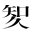

| 法窓夜話 | |
| 穂積 陳重 | |
| (2012) | |
法窓夜話
穂積陳重
士の最も重んずるところは節義である。その立つやこれに仗
り、その動くやこれに基づき、その進むやこれに嚮
う。節義の存するところ、水火を踏んで辞せず、節義の欠くるところ、王侯の威も屈する能わず、猗頓
の富も誘うべからずして、甫
めてもって士と称するに足るのである。学者は実に士中の士である。未発
の真理を説いて一世の知識を誘導するものは学者である。学理の蘊奥
を講じて、天下の人材を養成するものは学者である。堂々たる正論、政治家に施政の方針を示し、諤々
たる讜議
、万衆に処世の大道を教うるは、皆これ学者の任務ではないか。学者をもって自ら任ずる者は、学理のためには一命を抛
つの覚悟なくして、何をもってこの大任に堪えられよう。学者の眼中、学理あって利害なし。区々たる地位、片々たる財産、学理の前には何するものぞ。学理の存するところは即ち節義の存するところである。
ローマの昔、カラカラ皇帝故
なくして弟ゲータを殺し、直ちに当時の大法律家パピニアーヌス(Papinianus)を召して、命じて曰く、
朕、今ゲータに死を賜えり。汝宜しくその理由を案出して罪案を起草すべし。
と、声色共に厲
しく、迅雷
まさに来らんとして風雲大いに動くの概があった。これを聴いたパピニアーヌスは儼然
として容
を正した。
既に無辜
の人を殺してなお足れりとせず、更にこれに罪悪を誣
いんとす。これ実に第二の謀殺を行うもの。殺親罪を弁護するはこれを犯すより難し。陛下もし臣の筆をこの大悪に瀆
さしめんと欲し給わば、須
らくまず臣に死を賜わるべし。
と答え終って、神色自若。満廷の群臣色を喪
い汗を握る暇もなく、皇帝震怒、万雷一時に激発した。
咄
、汝腐儒
。朕汝が望を許さん。
暴君の一令、秋霜烈日の如し。白刃一閃、絶世の高士身首その処を異にした。
パピニアーヌスは実にローマ法律家の巨擘
であった。テオドシウス帝の「引用法」（レキス・キタチオニス）にも、パピニアーヌス、パウルス、ウルピアーヌス、ガーイウス、モデスチーヌスの五大法律家の学説は法律の効力ありと定め、一問題起るごとに、その多数説に依ってこれを決し、もし疑義あるか、学説同数に分れる時は、パピニアーヌスの説に従うべしと定めたのを見ても、当時の法曹中彼が占めたる卓然たる地歩を知ることが出来よう。しかしながら、吾人が彼を尊崇する所以
は、独り学識の上にのみ存するのではない。その毅然たる節義あって甫
めて吾人の尊敬に値するのである。碩学の人は求め得べし、しかれども兼ぬるに高節をもってする人は決して獲易
くはない。西に、正義を踏んで恐れず、学理のためには身首処を異にするを辞せざりしパピニアーヌスあり。東に、筆を燕
王成祖
の前に抛
って、「死せば即ち死せんのみ、詔や草すべからず」と絶叫したる明朝の碩儒方孝孺
がある。いささかもって吾人の意を強くするに足るのである。吾人はキュージャスとともに「法律の保護神」「万世の法律教師」なる讃辞をこの大法律家の前に捧げたいと思う。ギボンは「ローマ帝国衰亡史」に左の如く書いた。
〝That it was easier to commit than to justify a parricide〟 was the glorious reply of Papinian, who did not hesitate between the loss of life and that of honour. Such intrepid virtue, which had escaped pure and unsullied from the intrigues of courts, the habits of business, and the arts of his profession, reflects more lustre on the memory of Papinian, than all his great employment, his numerous writings, and the superior reputation as a lawyer, which he has preserved through every age of the Roman jurisprudence.(Gibbon's the Decline and Fall of the Roman Empire.)
回々
教徒
の法律家に四派がある。ハネフィヤ派、マリク派、シャフェイ派、ハンバル派といって、各々その学祖の名を派名に戴いている。学祖四大家、いずれも皆名ある学者であったが、就中
ハネフィヤの学識は古今に卓絶し、人皆称して「神授の才」といった。学敵シャフェイをして「彼の学識は学んで及ぶべきにあらず」と嘆ぜしめ、マリクをして「彼が一度木の柱を金の柱なりと言ったとしたならば、彼は容易
くその柱の黄金なることを論証する智弁を有している」と驚かしめたのを見ても、如何に彼が一世を風靡
したかを知られるのである。
ハネフィヤは、このいわゆる「神授の才」を挙げて法学研究に捧げようとの大志を立て、決して利禄名声のためにその志を移さなかった。時にクフファーの太守フーベーラは、氏の令名を聞いて判官の職を与えんとしたが、どうしても応じない。聘
を厚くし辞を卑くして招くこと再三、なお固辞して受けない。太守もここに至って大いに怒り、誓ってかの腐儒をして我命に屈従せしむべしというので、ハネフィヤを捕えて市に出し、笞
たしむること日ごとに十杖、もって十日に及んだが、なお固く執
って動かなかったので、さすがの太守も呆れ果てて、終にこれを放免してしまった。
この後
ち数年にして、同一の運命は再び氏を襲うて来た。マースールのカリフ［＃岩波文庫の注は、「マースールのカリフ」を著者の書き間違いとし、「アッバス朝二代のカリフがマンスール」であるとする］は、氏をバグダッドに召して、その説を傾聴し、これに擬するに判官の栄職をもってした。しかも石にあらざる氏の素志は、決して転
ばすことは出来なかった。性急なる王は、忽ち怒を発して、氏を獄に投じたので、この絶世の法律家は、遂に貴重なる一命を囹圄
の中に殞
してしまった。
ローマ法族の法神パピニアーヌスは誣妄 の詔を草せずして節に死し、回々法族の法神ハネフィヤは栄職を却 けて一死その志を貫いた。学者一度 志を立てては、軒冕 誘 う能わず、鼎鑊 脅 かす能わざるものがなくてはならぬ。匹夫 もその志は奪うべからず、いわんや法律家をや。
国王の璽
は重要なる君意を公証するものであるから、これを尚蔵する者の責任の大なることは言を待たぬところである。故に御璽
を保管する内大臣に相当する官職は、いずれの国においても至高の要職となっており、英国においては掌璽
大臣に〝Keeper of the King's Conscience〟「国王の良心の守護者」の称がある位であるから、いやしくも君主が違憲の詔書、勅書などを発せんとする場合には、これを諫止
すべき職責を有するものである。フランスにおいて、掌璽大臣に関する次の如き二つの美談がある。
フランスのシャール七世、或時殺人罪を犯した一寵臣
の死刑を特赦しようとして、掌璽大臣モールヴィーエー(Morvilliers)を召して、その勅赦状に王璽を鈐
せしめようとした。モールヴィーエーはその赦免を不法なりとして、これを肯
んぜなかったが、王は怒って、「王璽は朕の物である」と言って、これを大臣の手より奪って親
ら勅赦状に鈐したる後
ち、これをモールヴィーエーに返された。ところがモールヴィーエーはこれを受けず、儼然として次の如く奏してその職を辞した。「陛下、この王璽は臣に二度の至大なる光栄を与えました。その第一回は臣がかつてこれを陛下より受けた時であります。その第二回は臣が今これを陛下より受けざる時であります。」
ルイ十四世が嬖臣
たる一貴族の重罪を特赦しようとした時、掌璽大臣ヴォアザン(Voisin)は言葉を尽して諫争
したが、王はどうしても聴き容れず、強いて大璽を持ち来らしめて、手ずからこれを赦書に鈐して大臣に返された。ヴォアザンは声色共に激しく「陛下、この大璽は既に汚れております。臣は汚れたる大璽の寄託を受けることは出来ません」と言い放ち、卓上の大璽を突き戻して断然辞職の決意を示した。王は「頑固な男だ」と言いながら、赦免の勅書を火中に投ぜられたが、ヴォアザンはこれを見て、その色を和
げ、奏して言いけるよう、「陛下、火は諸
の穢
を清めると申します。大璽も再び清潔になりましたから、臣は再びこれを尚蔵いたしますでございましょう。」
ヴォアザンの如きは真にその君を堯舜 たらしめる者というべきである。
和気清麻呂 の第五子参議和気真綱 は、資性忠直敦厚 の人であったが、或時法隆寺の僧善愷 なる者が少納言登美真人直名 の犯罪を訴え、官はこれを受理して審判を開くこととなった。しかるに同僚中に直名に左袒 する者があって、かえって「闘訟律」に依って許容違法の罪を訴えた。そこで官は先ず明法 博士らに命じて、許容違法の罪の有無を考断せしめたが、博士らは少納言の権威を畏避 して、正当なる答申をすることが出来なかった。真綱はこれを憤慨して、「塵 起るの路は行人 目を掩 う、枉法 の場、孤直 何の益かあらん、職を去りて早く冥々 に入るに加 かず」と言うて、固く山門を閉じ、病なくして卒したということである。この事は「続日本後紀 」の巻十六に見えておる。
ディオクレス(Diocles)はシラキュースの立法者であるが、当時民会ではしばしば闘争殺傷などの事があったので、彼は兵器を携えて民会に臨むことを厳禁し、これに違
う者は死刑に処すべしとの法を立てた。或時ディオクレスは敵軍が国境に押寄せて来たという知らせを聞いて、剣を執って起ち、防禦軍を指揮せんがために戦場に赴
こうとしたが、偶々
途中で民会において内乱を起さんことを議しているという報知を得たので、直ちに引返し、民会に赴いてこれを鎮撫しようとした。
ディオクレス民会に到り、まさに会衆に向って発言しようとした時、叛民の一人は突然起立して、「見よディオクレスは剣を帯びて民会に臨んだ。彼は己れの作った法律を破った」と叫んだ。ディオクレスはこれを聴いて事急なるがために想わず法禁を破ったことを覚り、一言の内乱鎮撫に及ぶことなく、「誠に然り。ディオクレスは自ら作った法を行うに躊躇する者に非ず」と叫んで、直ちに剣を胸に貫いてその場に斃
れた。
この至誠殉法の一語は、民会に諭
す百万言よりも彼らの叛意を翻すに殊効
があったろうと思う。
ツリヤ人の立法者カロンダス(Charondas)についても、殆んどこれと同一の伝説があるが、この二つの話の間に関係があるや否やについては未だ聞いたことがない。
大聖ソクラテスの与えた最後の教訓は、実に国法の威厳に関するものであった。
今を去ること凡
そ二千三百有余年の昔、彼が単衣跣足
の姿で、当時世界の文化の中心と称せられておったギリシアのアテネの市中、群衆雑鬧
の各処に現れて、その独特会話法に依って自負心の強い市民を教訓指導し、就中
よく青年輩の指導教訓に力を致したことは、甚だ顕著なる事実である。もとよりソクラテス自らは決して一世の指導者をもって敢えて自任していた訳ではない。ただ人々と共に真善の何ものなるかを知ろうと欲したのであった。しかしながら、彼の真意を了解しない大多数の俗衆は、かえってソクラテスのために、各自の自負心を傷つけられたものと考え、これがために彼に対して怨
を抱
くこととなったが、終に或機会をもって、彼は新宗教を輸入唱導して国教を顚覆し、且つまた詭弁を弄して青年の思想を惑乱する者である、という事を訴えることとなった。
かくてメレートスやアヌトスなどの詐言
のために、とやかくといろいろ瞞着
された結果、種々の裁判の末に、我大聖ソクラテスは遂に死刑を宣告せられることとなった。
さて、いよいよ死刑が執行されるという日の前日になって、ソクラテスの門弟の一人なるクリトーンはソクラテスに面会して、この不正なる刑罰を免れるために脱獄を勧めようと思って、早朝その獄舎に訪ねて来た。来て見たところが、ソクラテスは、さも心地
よさそうに安眠しておったのである。クリトーンは、師がその死期の刻々に近づきつつあるにもかかわらず、かく平然自若たるを見て如何にも感嘆の情を禁
めることが出来なかったが、やがてソクラテスの眠より覚めるのを俟
って、脱獄を勧めた。
クリトーンは、裁判の不正なること、刑罰の不当なることを説いて、師がかく生命を保ち得られる際に、自ら好んで身を死地に投じてこれを放棄せられるのは、むしろ悪事を敢えてなさんとせられるものであって、今甘んじてこの刑に就くのは、これ即ち敵人の奸計に党
するものであるといわねばならぬと述べ、またこの際、妻や子供らを見捨てるのは、師が平素から、子供を教養することの出来ない者は子を設けてはならぬと言われておった垂訓にも悖
るものであり、またこの容易にして且つ危険のない脱獄を試みないのは、畢竟
、善にして勇なる所業をなさないものであるから、平生徳義の貴ぶべきことを唱導せられた師としては、甚だ不似合なことで、自分は、師のためにも、はたまたその友たるクリトーン自身のためにも、慚愧
の念に堪えざる次第であると説き、なおその辞をつづけて、
サア、どうぞこの処を能
く能
く御考え下さいまし。否もう御熟考の時は已
に過ぎ去っております。――私どもは決心せねばなりませぬ。――今の場合、私どものなすべきことはただ一つだけ、――しかも、それを今夜中に決行せねばなりませぬ。――もしこの機会を外したなら、それは、とても取り返しが附きませぬ。――サア、先生、ソクラテス先生、どうぞ私の勧告をお聴き入れ下さいまし。
情には脆
く、心は激し易いクリトーンが、かくも熱誠を籠めて、その恩師に対
って脱獄を勧めたのであった。ソクラテスは、その間、心静に、師を思う情の切なるこの門弟子
の熱心なる勧誘の言葉に耳を傾けておったが、やがて徐
に口を開いて答えていうには、
親愛なるクリトーンよ、汝の熱心は、もしそれが正しいものならば、その価値は実に量
るべからざるものである。が、しかし、それがもし不正なものであるならば、汝の熱心の大なるに随って、その危険もまた甚だ大なるものではあるまいか。それ故、余は先ず、汝の余に勧告する脱獄という事が、果して正しい事であるか、あるいはまた不正の事であるかを考える必要がある。余はこれまで、何時
も熟考の上に、自分でこれが最善だと思った道理以外のものには、何物にも従わなかったものであるが、それを今このような運命が俄
に我が身に振りかかって来たからと言って、自分のこれまで主張してきた道理を、今更投げ棄ててしまうことは決して出来るものではない。否、かえって余に取っては、これらの道理は恒
に同一不易のものであるから、余の従前自ら主張し、尊重しておったことは、今もなお余の同じく主張し尊重するものであるのだ。
と述べ、なお言葉をついで、
ただ生活するのみが貴いのではない。善良なる生活を営むのが貴いのである。他人が己れに危害を加えたからとて、我れもまた他人に危害を加えるなら、それは、悪をもって悪に報いるもので、決して正義とは言えない。して見れば、今汝がいうように、たといアテネの市民らが、余を不当に罰しようとも、我れは決してこれを報いるに害悪をもってすることは出来ないのである。
と言い、また、
もし余がこの牢屋を脱走せんとする際、法律および国家が来って、余にソクラテスよ、汝は何をなさんとして居るか。汝が今脱獄を試みようとするのは、即ち汝がその力の及ぶ限り法律および全国家を破壊しようとするものではないか。凡そその国家の法律の裁判に何らの威力もなく、また私人がこれを侮蔑し、蹂躙するような国家が、しかもなおよく国家として存立し、滅亡を免れることが出来るものであると汝は考えるかと問うたならば、クリトーンよ、我らはこれに対して何と答うべきであるか。
と言い、なおこれに次いで、国家および法律を擬人して問を設け、国法の重んずべきこと、また一私人の判断をもってこれに違背するは、即ち国家の基礎を覆さんとするものであるということを論じ、更にクリトーンに向って、
我らはこれに答えて、「しかれども国家は已
に不正なる裁判をなして余を害したり」と答うべきか。
と言い、クリトーンが、
勿論です。
と言ったのに対して、
しからば、もし法律が、ソクラテスよ、これ果して我らと汝と契約したところのものであるか。汝との契約は、如何なる裁判といえども国家が一度これを宣告した以上は、必ずこれに服従すべしとの事ではなかったかと答えたならば如何に。
と言い、更にまた、たとい悪
しき法律にても、誤れる裁判にても、これを改めざる以上は、これに違反するは、徳義上不正である所以
の理を説破し、なお進んで、
凡そアテネの法律は、いやしくもアテネ人にして、これに対して不満を抱く者あらば、その妻子眷族
を伴うて、どこへなりともその意に任せて立去ることを許しているではないか。今、汝はアテネ市の政治法律を熟知しながら、なおこの地に留っているのは、即ち国法に服従を約したものではないか。かかる黙契をなしながら、一たびその国法の適用が、自己の不利益となったからといって、直ちにこれを破ろうとするのは、そもそも不正の企ではあるまいか。汝は深くこのアテネ市を愛するがために、これまでこの土地を距
れたこととては、ただ一度イストモスの名高き競技を見るためにアテネ市を去ったのと、戦争のために他国へ出征したこととの外には、国境の外へは一足も踏み出したことはなく、かの跛者や盲人の如き不具者よりもなお他国へ赴いたことが少なかったのではないか。かくの如きは、これ即ちアテネ市の法律との契約に満足しておったことを、明らかに立証するものではあるまいか。且つまたこの黙契たるや、決して他より圧制せられたり、欺かれたり、または急遽の間に結んだものではないのであって、もし汝がこの国法を嫌い、あるいはこの契約を不正と思うたならば、このアテネ市を去るためには、既に七十年の長年月があったではないか。それにもかかわらず、今更国法を破ろうとするのは、これ即ち当初の黙契に背戻
するものではないか。
と言うて、縷々
自己の所信を述べ、故にかかる契約を無視すれば、正義を如何にせん、天下後世の識者の嗤笑
を如何にせん。もしクリトーンの勧言に従って脱獄するようなことがあれば、これ即ち悪例を後進者に遺すものであって、かえって彼は青年の思想を惑乱する者であるという誹毀者らの偽訴の真事であることを自ら進んで表白し、証明するようなものではないかといい、更に、
正義を忘れて子を思うことなかれ。正義を後にして生命を先にすることなかれ。正義を軽んじて何事をも重んずることなかれ。
と説き、滔々 数千言を費して、丁寧親切にクリトーンに対 って、正義の重んずべきこと、法律の破るべからざることを語り、よりてもって脱獄の非を教え諭したので、さすがのクリトーンも終 に辞 なくして、この大聖の清説に服してしまったのである。
古今の大哲人ソクラテスが、毒杯を仰いで、従容
死に就かんとした時、多数の友人門弟らは、絶えずその側に侍して、師の臨終を悲しみながらも、またその人格の偉大なるに驚嘆していた。
ソクラテスは鴆毒
を嚥
み了
った後
ち、暫時の間は、彼方此方
と室内を歩みながら、平常の如くに、門弟子らと種々の物語をして、あたかも死の影の瞬々に蔽い懸って来つつあるのを知らないようであったが、毒が次第にその効を現わして、脚部が次第に重くなって冷え始め、感覚を失うようになって来た時、彼は先
きに親切なる一獄卒から、すべて鴆毒の働き方は、先ず足の爪先より次第に身体の上部へ向って進むものであるということを聞いておったので、自分で自分の身体に度々触れて見ては、その無感覚の進行の有様を感じておった。そうして、それが心臓に及ぶと死ぬるのであると言うておったが、やがてそれが股まで進んで来た時、急に今まで面に被っていた布を披
いて、クリトーンを顧みて次の如く語った。
クリトーンよ、余はアスクレーピオスから鶏を借りている。この負債を弁済することを忘れてはならぬ。（プラトーンの「ファイドーン」編第六十六章）
嗚呼
これ実に大聖ソクラテスの最後の一言であって、こは実に「その義務を果せ」という実践訓を示したものである。
プラトーンの「ファイドーン」編の末尾に記していわく、「彼は実に古今を通じて至善、至賢、至正の人なり」と。
明治二年、新律編修局を刑法官（今の司法省）内に設け、水本保太郎（成美）、長野文炳、鶴田弥太郎（皓）、村田虎之助（保）に新律取調を命ぜられた。かくて委員諸氏は大宝律令、唐
律、明
律、清
律などを参酌して立案し、同年八、九月の頃に至ってその草案は出来上ったが、当時の参議副島種臣
氏はこれを閲読して、草案「賊盗律」中に謀反
、大逆の条
あるを発見して、忽ち慨然大喝し、「本邦の如き、国体万国に卓越し、皇統連綿として古来かつて社稷
を覬覦
したる者なき国においては、かくの如き不祥の条規は全然不必要である。速に削除せよ」と命じた。依って委員はこれに関する条規を悉
く草案より除き去り、同年十二月［＃岩波文庫の注は「翌三年十二月の誤り」とする］に「新律綱領」と題して頒布せられた。昔ギリシアのアテネにおいて、何人もその父母を殺すが如き大罪を犯すことはあるまじき事であるというので、親殺の罪を設けなかったのも、けだし同じ趣旨に出たものであろう(Manby v. Scot, Smith's Leading Cases.)。またヘロドーツスの歴史によれば、古代のペルシアにおいては、真正の親を殺す者のあるはずがないとし、偶
ま親を殺す者があっても、その者は私生児であるとしたということである。
明治六年五月に頒布せられた「改定律例」にも、やはり謀反、大逆の罪に関する箇条
は載せられなかった。その後
ち、仏国人ボアソナード氏が大木司法卿の命を受けて立案した刑法草案は、明治十年十月に脱稿したが、同年十二月、元老院内に刑法草案審査局を置いて、伊藤博文氏を総裁とし、審査委員を任命して、その草案を審議せしめることとなった。
しかるに、その草案中、第二編第一章に、天皇の身体に対する罪、第二章に、内乱に関する罪の箇条があったので、その存否は委員中の重大問題となったが、竟 にその処置に付き委員より政府に上申して決裁を乞うに至った。しかるに、翌十一年二月二十七日、伊藤総裁は審査局に出頭し、内閣より上奏を経て、皇室に対する罪および内乱に関する罪は、これを存置することに決定したる旨を口達せられた。依って明治十三年発布の刑法以来、皇室に対する罪および国事犯に関する条規を刑典中に見るに至った。
法の粗密に関する利害は一概には断言し難いものであるが、刑法の如き、特に正文に拠
るに非ざれば処断することを許さぬ法律は、たとい殆んど起り得べからざる事柄でも、事の極めて重大なるものは、その規定を設けて置かねばならぬということは、大津事件および幸徳事件の発生に依
って明らかである。皇室に対する罪は、前に話した如く、副島伯の議論に依って一度削除されてしまったが、その後ち、伊藤公の議に依って規定を設けられたために、幸徳らの大逆事件も、拠って処断すべき法文があったのである。しかるに、同じく伊藤公の議によって刑法中にその規定を設けられなかった事について、最大困難に逢着したことが起った。それは即ち有名な大津事件である。
明治二十四年五月十一日、滋賀県の巡査津田三蔵なる者が、当時我邦に御来遊中なる露国皇太子殿下（今帝陛下）を大津町において要撃し、その佩剣
をもって頭部に創
を負わせ奉った。この報が一たび伝わるや、挙国震駭
し、殊に政府においては、今にも露国は問罪の師を起すであろうとまで心配し、その善後策について苦心を重ねたのであった。しかるに当時の刑法においては、謀殺未遂は死刑に一等または二等を減ずることになっていたので、津田三蔵は、重くとも無期徒刑以上に処することは出来なんだのであった。しかも、政府は心配の余り、三蔵を極刑に処するに非ざればロシヤに対して謝するの道なきものと考え、廟議
をもって、我皇室に対する罪をもってロシヤの皇室に対する罪にも適用すべきものなりと定めて、三蔵の非行に擬するに刑法百十六条の「天皇三后皇太子ニ対シ危害ヲ加ヘ又ハ加ヘントシタル者ハ死刑ニ処ス」とある法文をもってし、遂に検事総長に命じてこれを起訴せしめた。
当時は、憲法が実施せられて僅に一年の時である。憲法には司法権の独立が保障してあり、また明文をもって臣民の権利を保障して、「日本臣民ハ法律ニ依ルニ非ズシテ逮捕監禁審問処罰ヲ受クルコトナシ」と規定してある。また刑法第二条には「法律ニ正条ナキ者ハ何等ノ所為ト雖モ之ヲ罰スルコトヲ得ズ」との明文があるのである。これにも係
らず、検事総長は、当局の命令によって、我皇室に対する罪をもって三蔵の犯行に擬せんとした。しかのみならず、時の司法大臣および内務大臣は、自ら大津に出張し、裁判官に面会して親しく説諭を加えんとした。しかれども、幸いにして当時の大審院長児島惟謙氏が、身命と地位を賭して行政官の威圧を防禦し、裁判官の多数もまたその職務に忠実にして、神聖なる法文の曲解を聴
すことなく、常人律をもってこれを論じ、三蔵の行為を謀殺未遂として無期徒刑に処し、我憲法史上に汚点を残すことを免かれたのであった。
当時我ら法科大学の同僚も意見を具して当局に上申し、皇室に対する罪をもって三蔵の犯罪に擬するの非を論じた。しかるに当局および老政治家らの意見は、三蔵を死に処して露国に謝するに非ざれば、国難忽ちに来らん、国家ありての後の法律なり、煦々
たる法文に拘泥して国家の重きを忘るるは学究の迂論
なり、宜しく法律を活用して帝国を危急の時に救うべしというにあった。副島種臣伯の如きは、さすがは学者であったから、余らの論を聴き、天皇三后皇太子云々を外国の皇族に当つるの不当なることを知り、また前に草案中の外国に関する箇条は悉
く削除したることも知りおられたるをもって、慨嘆して「法律もし三蔵を殺すこと能わずんば種臣彼を殺さん」と喚
わられたとのことである。我輩は当時これを聞いて、「伯の熱誠は同情に値するものである。三蔵を殺すの罪は、憲法を殺し、刑法を殺すの罪よりは軽い」と言うたことがある。
そもそも、大津事件においてかくの如き大困難を生じたのは、これ全く立法者の不用意に起因するものと言わねばならぬ。はじめ、明治十年に旧刑法の草案成り、元老院内に刑法草案審査局が設けられた時、第一に問題となった事は、実に草案総則第四条以下外国に関係する規定と、第二編第一章天皇の身体に対する罪との存否であった。委員会はこれを予決問題としてその意見を政府に具申したところ、十一年二月二十七日に至り、総裁伊藤博文氏は、外国人に関する条規は総 べてこれを削除すること、また皇室に対する罪はこれを設くることを上奏を経て決定したる旨を宣告した。当時に在っては、あたかも「新律綱領」制定の当時副島伯が皇室に対する罪を不必要と考えた如くに、外国の主権者または君家に対する犯行が起るべしとは、夢にも想い到ることはなかったことであろう。しかるに、幸徳事件はこの時に皇室に対する罪が定められてあったために拠 るべき条文があり、大津事件はこの時に外国に関する条文が総べて削られてあったので、拠るべき特別の条規がなく、そのために外国の皇室に危害を加えたる場合といえども、常人に対する律をもってこれに擬して、無期徒刑に処するの外はなかったのである。即ち明治十三年発布の刑法には皇室に対する罪が設けられてあったために、幸徳事件にはこれに適用すべき特別法文があり、外国に関する事が悉 く削られてあったために、大津事件にはこれに適用すべき特別法文がなかったのである。
副島伯は漢儒であって、時々極端なる説を唱えられたから、世間には往々
伯を頑固なる守旧家の如くに思っている人もあるようなれども、我輩の伝聞し、または自ら伯に接して知るところに依れば、伯は識見極めて高く、一面においては守旧思想を持しておられたにもかかわらず、他の一面においては進歩思想を持して、旧新共にこれを極端に現された人のように思う。前に掲げた大津事件の際に、「法律もし三蔵を殺す能わずんば、種臣これを殺さん」と喚
わられた如きは、一方より観れば、極端なる旧思想の如く思われるけれども、また他方よりこれを観れば、伯はよく律の精神を解しておられた人であるから、暗に普通殺人律論の正当なるを認められたものとも解釈せられる。
明治三年、「新律綱領」の編纂があった時、当時の委員は皆漢学者であったので、主として明 律、清 律などを基礎として立案したのであるが、伯は夙 に泰西の法律に着目し、箕作麟祥 氏に命じてフランスの刑法法典を翻訳せしめ、これを編輯局に持参して、支那律に倣 って一の罪に対して一定不動の刑を定むるの不当なる所以を論弁し、量刑に軽重長短の範囲を設くべき旨を主張せられたという事である。伯のこの議論は、当時極端なる急進説と認められたので、明治六年発布の「改定律例」にも採用せられなかったが、爾来 十年を経たる後、明治十三年発布の刑法に至って、漸 く採用せられたのである。
ドラコーはアテネの上古に酷法の名高き「血法」を制定した人である。この法律は、実に紀元前六二一年、彼が執政官の職に在ったときに制定せられたものである。ただしバニャトー(Bagnato)らの説によれば、右の酷法は、決してドラコーの創意に出たものではなく、その内容は、アテネ古来の慣習法としてドラコー以前に存在し、彼はただこれを成文法としてなしたるに過ぎないということである。
この説の当否はとにかく、ドラコーの法は実に驚くべき酷法であって、「血法」とは名づけ得て妙と言わざるを得ない。そしてその最も惨酷極まる点は、実に死刑の濫用にあるのである。叛逆殺人などの重罪を罰するに死刑をもってするさえ、現今では兎角
の論もあるのに、ドラコーの法では、野に林檎
の一二顆
を盗み、畑に野菜の二三株を抜いた者までも、死刑に処する。否、これなどは血法中ではまだ寛大な箇条というべきであって、怠惰なる者を罰するに死刑をもってするに至っては、実に思い切った酷法と謂わなければならぬ。なおその上に、刑罰を科せられるものは、人類のみに止まらずして、無生物にまでも及び、石に打たれ木に圧されて死んだ者があった時には、その木石に刑を加えるのであった。けだしこれは、民をして殺人の重罪たる事を知らしめる主意であったのであろう。
ドラコーの法は、実に酷烈かくの如きものであって、一時満天下を戦慄せしめたが、苛酷がその度を過ぎていたために、かえって永くは行われなかったということである。
或人ドラコーに向って、「何故に犯罪は殆ど皆死をもって罰するのであるか」と尋ねた。ドラコーは答えて、「軽罪があたかも死刑に相当するのである。重罪に対しては余は適当の刑罰なきに苦しむのである」と言ったとか。たといバニャトーの説の如く、この酷法の内容は以前より存していたにもせよ、立法者の刑罰主義もまた与
って力あったことは疑うべくもない。
プルタークの英雄伝によれば、「血法」なる名称はデマデス(Demades)の評語に起源している。曰く、ドラコーは墨をもってその法を記したるものにあらず、血をもってせしなりと。
昔シラキュース王ディオニシウス(Dionysius)は、桀紂
にも比すべき暴君であったが、彼は盛んに峻法を設けて人民を苦しめた。一つの法令を発するごとに、これを一片の板に書き付け、数十尺の竿頭
高く掲げて、これをもって公布と号した。人民は竿頭を仰ぎ見て、また何か我々を苦しめる法律が出来たなと想像するのみで、その内容の何たるを知ることが出来ず、丁度頭の上で烈しい雷鳴が鳴るように思うて、怖れ戦
くの外はなかったと言い伝えている。
立法者にして殊更に文章の荘重典雅を衒 わんがために、好んで難文を草し奇語を用うる者はディオニシウスの徒である。民法編纂の当時、起草委員より編纂の方針に関する案を法典調査会に提出して議決を経たる綱領中に、「文章用語は意義の正確を欠かざる以上なるべく平易にして通俗なるべきこと」とあるは、特にこの点に注意したるためであった。
斉の景公、或時太夫晏子
に向って言われるには、「卿の住宅は大分町中であるによって、物価の高低などにも定めて通じていることであろう」。晏子対
えて「仰
の通りで御座ります。近来は踊
の価が貴
く、履
の価が賤
くなりましたように存じまする」と申上げた。これは、履とは普通人の履物のこと、踊とは刖刑
を受けた者の用いる履物のことで、今で言ったら義足とでもいうべきところである。当時景公酷刑を用いること繁きに過ぎたので、晏子は物価の話によそえてこれを諷したのであった。景公もそれと悟って、その後は刑を省いたという。
唐律疏議表に、この事を称賛して「仁人之言其利薄哉」と言っておる。
秦が六国を滅して天下を一統したのは、韓非子
・商鞅
・李斯
らの英傑が刑名法術の政策を用いたからであって、その二世にして天下を失うに至ったのは、書を焚き儒を坑
にしたに基づくことは、人の知るところであるが、有名なる「商鞅、移木の信」の逸話は、この法刑万能主義を表現するものとして頗
る興味あるものである。
商鞅が秦の孝公に仕えて相となったとき、その新政の第一着手として、先ず長さ三丈の木を市の南門に立てて、もしこの木を北門に移す者あらば十金を与うべしという令を出した。しかし、人民はその何の意たるを了解せず、怪しみ疑うて敢えてこれを移そうとする者がなかった。依って更に令を下して、能
く移す者には五十金を与うべしと告示した。この時一人の物好きな者があって、ともかくも遣
ってみようという考で、この木を北門に移した。商鞅は直ちに告示の通り五十金をこの実行者に与えて、もって令の偽りでないことを明らかにした。ここにおいて、世人皆驚いて、商君の法は信賞必罰、従うべし違うべからずという感を深くし、十年の内に、令すれば必ず行われ、禁ずれば必ず止むに至り、新法は着々実施せられて、秦国富強の端を開いたということである。
けだし商鞅は、この移木令の一挙をもって、民心をその法刑主義に帰依 せしめたものであって、その機智感ずべきものがないではないが、かくの如き児戯をもって法令を弄 ぶは、吾人の取らざるところであって、これに依って真に信を天下に得らるべきものとは思われぬのである。そもそも法の威力の真の根拠は、その社会的価値であって、「信賞必罰」というが如きは、単にその威力を確実ならしめる所以に過ぎぬ。木を北門に移すべしという如き、民がその何の故たるを知らぬ命令、即ち何らの社会的価値なき法律を設けて、信賞必罰をもってその実行を期するという態度は、誠に刑名法術者流の根本的誤謬であって、彼ら自身「法を造るの弊」を歎ずるの失敗に陥ったのみならず、この法律万能主義のために、かえって永く東洋における法律思想の発達を阻害する因をなしたのは、歎ずべく、また鑑 みるべき事である。
土佐の藩儒野中兼山
は宋儒を尊崇して同藩に宋学を起した人であるが、専
ら実行を主とした学者であって、立言の儒者ではなかった。したがってその著作は多く伝わっていないが、その治績の後世に遺
ったものは少なくない。即ち仏堂を毀
ち、学校を興
し、瘠土
を開拓して膏腴
の地となし、暗礁を除いて航路を開き、農兵を置き、薬草を植え、蜜蜂を飼い、蛤蜊
を養殖するなど、鋭意新政を行って四民を裨益したことは頗
る多かった。
しかしながら、彼は資性剛毅の人であったこととて、新政を行うにも甚だ峻厳を極めて、いやしくも命に違う者は毫末
も容赦するところなく、厳刑重罰をもって正面よりこれを抑圧したのであった。即ち「撃レ
非如レ
鷹」と言われたほどであったから、ために竟
に禍を買って、その終を全うすることの出来なかったのは痛惜すべきことである。
しかし、彼にもまた巧妙穏和なる間接立法の例がないではない。当時土佐の民俗には一般に火葬が行われておったが、兼山はその儒教主義からしてしばしばこれを禁止したのである。けれども、多年の積習は到底一朝にして改めることが出来なかった。ここにおいて彼はその方針を一変して、強いて火葬を禁ぜぬこととし、かえって罪人の死屍は必ずこれを火葬とすべき旨を令した。これよりして、火葬の事実は次第に少なくなり、遂にこの風習はその跡を絶つに至ったということである。兼山の採ったこの方法は即ち敵本主義の側面立法であって、民心を刺激すること寡 なくしてしかも易俗移風の効多きものである。もし兼山にして、常に今少しくその度量を寛大にし、人情の機微を察することかくの如くあったならば、その功績はけだしますます多大となって、貶黜 の奇禍を招くが如き事情には立至らなかったことであろう。
伊予の西条領に賭博が大いに流行して、厳重なる禁令も何の効力を見なかったことがあった。時に竹内柳右衛門という郡
奉行があって、大いにその撲滅に苦心し、種々工夫の末、新令を発して、全く賭博の禁を解き、ただ負けた者から訴え出た時には、相手方を呼出して対審の上、賭博をなした証迹明白な場合には、被告より原告に対して贏
ち得た金銭を残らず返戻させるという掟にした。こういう事になって見ると、賭博をして勝ったところで一向得
が行かず、かえって汚名を世上に晒
す結果となるので、さしも盛んであった袁彦道
の流行も、次第に衰えて、民皆その業を励むに至った。
この竹内柳右衛門の新法は、中々奇抜な工夫で、その人の才幹の程も推測られることではあるが、深く考えてみれば、この新法の如きは根本的に誤れる悪立法といわねばならぬ。法律は固 より道徳法その物とは異なるけれども、立法者は片時も道徳を度外視してはならない。竹内の新法は、同意の上にて悪事を俱 にしながら、己れが不利な時には、直ちに相手方を訴えて損失を免れようとする如き不徳を人民に教うるものであって、善良の風俗に反すること賭博その物よりも甚だしいのである。これけだし結果にのみ重きを措 き過ぎて、手段の如何 を顧みなかった過失であって、古 えの立法家のしばしば陥ったところである。立法は須 らく堂々たるべし。竹内の新法の如き小刀細工は、将来の立法者の心して避くべきところであろう。
煙草の伝来した年代については、諸書に記しているところ互に異同があって、これを明確に知ることは出来ないようであるが、「当代記」の慶長十三年十月の条に、
此二三ヶ年以前より、たばこと云もの、南蛮船に来朝して、日本の上下専レ
之、諸病為レ
此平愈と云々。
と見えているから、この頃には喫煙の風は既に広く上下に行われて、当時のはやり物となっていたようである。かの林羅山
の如きも、既に煙癖があったと見えて、その文集の中に佗波古
、希施婁
に関する文章が載っており、またその「莨菪文
」の中に、
拙者
性癖有レ
時吸レ
之、若而人
欲レ
停レ
之未レ
能、聊
因循至レ
今、唯暫
代レ
酒当レ
茶而已歟
。
と記している。
しかるに、幕府は間もなく喫煙をもって無益の費
えとなし、失火の原因となり、煙草の植附けは田畑を荒すなど種々の弊害あるものとして、これを禁止するに至った。「慶長年録」慶長十四年の条に、
七月、タバコ法度
之事、弥
被レ
禁ト云々、火事其外ツイエアル故也。
と見えているが、これが恐らくは喫烟禁止令の初めであろう。
この後
ち慶長十七年八月に至って、幕府は、一季居、耶蘇教、負傷者、屠牛
に関する禁令とともに、煙草に関する禁令をも天下に頒った。
一、たばこ吸事被二
禁断一
訖
、然上は、商賣之者迄も、於レ
有二
見付輩一
者
、双方之家財を可レ
被レ
下、若
又於二
路次一
就二
見付一
者、たばこ並売主を其在所に押置可二
言上一
、則付たる馬荷物以下、改出すものに可レ
被レ
下事。
附、於二
何地一
も、たばこ不レ
可レ
作事。
右之趣御領内江［＃「江」はポイント小さく右寄せ］急度
可レ
被二
相触一
候、此旨被二
仰出一
者也、仍如レ
件
。
慶長十七年八月六日
この後ちも幕府はしばしば喫煙および煙草耕作の禁令を出したことは、拙著「五人組制度」の中にも記して置いた通りである。しかし、この類
の禁令はとかくに行われにくいものと見えて、その頃の落首に、
きかぬもの、たばこ法度に銭法度、
玉のみこゑにけんたくのいしや。
慶長年中に、幕府が喫煙禁止令を出したとき、諸国の大名もまたそれぞれその領内に対して禁煙令を出したようであるが、就中
薩摩の島津氏の如きは、その違犯者に対して随分厳罰を科したのであった。一体、薩摩は当時のいわゆる南蛮人が夙
くから渡来した地方であるから、煙草の如きも比較的早くよりこの地方に伝播
して、喫煙の風は余程広く行われ、その弊害も少なくはなかったものと見えて、かの文之和尚の「南浦文集」の中にも、風俗の頽敗と喫煙の風とに関した次の如き詩を載せている。
風俗常憂頽敗遄 人人左衽拍二
其肩一
逸居飽食坐終日 飲二
此無名野草煙一
それで、島津氏も厳令を下して喫煙を禁止しようとしたのである。「崎陽古今物語」という書に次の如き記事が見えている。
竜伯様（島津義久）惟新様（島津義弘）至二
御代に一
、日本国中、天下よりたばこ御禁制に被二
仰渡一
、御国許
之儀は、弥
稠敷
被二
仰渡一
候由候処に、令
二
違背一
密々呑申者共有レ
之、後には相知、皆死罪に為レ
被二
仰渡一
由候云々。
この如く違犯者を死刑に処するまでに厳重に禁制したのであったけれども、その効果は遂に見えなかったのである。同書、前掲の文の続きに、
執着深き者共は、やにをほそき竹きせるに詰
、紙帳を釣り、其内にて密々呑為申者共も、方々為有レ
之由候。
と有るのを見ても、因襲既に久しきがため、この風の牢乎 として抜き難かったことを知ることが出来よう。かくて、後年に至って薩摩煙草はかえって天下の名産たるに至ったのである。
支那
においては、古代絵画に依って刑法を公示し、これに依って文字を知らない朦昧
の人民に法禁を知らしめる方法が行われた。「舜典」に「象
以二
典刑一
」といい、呉氏がこれを解釈して、「刑を用うるところの象を図して示し、智愚をして皆知らしむ」といい、また「晋
刑法志」に「五帝象を画いて民禁を知る」とあるなどは、皆刑罰の絵を宮門の双闕
その他の場所に掲げて人民を警
めたことを指すもので、これに依っても古聖王が法を朦昧の人民に布き、これを法治生活に導くのに如何に苦心したかを想像することが出来る。
我国において、絵画に依って法禁を公示したのは、彼の智慧伊豆と称せられた松平伊豆守信綱である。将軍家綱の時、明暦三年、江戸に未曾有の大火があって、死者の数が十万八千余人の多きに達したので、火災後、火の元取締の法は一般に非常に厳重になった。「信綱記」に依れば、伊豆守の家中においても、番所にて「たばこ」を呑むことを堅く禁じたが、或日土蔵番の者が窃
に鮑殻
に火を入れて来て「たばこ」を呑み、番所の畳を少し焦した事がある。伊豆守は目付の者の訴に依ってこれを知り、大いに怒って直ちにその者を斬罪
に申付けたが、その後ち思案して、吉利支丹
の目明し右衛門作という油絵を上手に画く者に命じて、火を盗み「たばこ」を呑んで畳を焼いたところと、その者の刑に処せられているところとを板に描かせて、これを邸内の人通りの多い所に立て置き、これを諸人の見せしめとした。ところがその刑罰の有様が如何にも真に逼
って、観
る者をして悚然
たらしめたので、その後ち禁を犯す者が跡を絶つに至ったということである。
右衛門作、氏は山田、肥前の人で、島原の乱に反徒に党 して城中に在ったが、悔悟して内応を謀り、事覚 われて獄中に囚 われていたが、乱平 ぎたる後ち、伊豆守はこれを赦して江戸に連れ帰り、吉利支丹の目明しとしてこれを用いた。右衛門作はよく油絵を学び巧に人物花卉 を描いたが、彼が刑罰の図を作ることを命ぜられたのもそのためであった。後ち耶蘇教を人に勧めたために、獄に投ぜられて牢死したということである。
水戸烈公の著「明訓一班抄」に拠
れば、徳川家康は博奕
をもってすべての罪悪の根元であるとし、夙
く浜松・駿府在城の頃よりこれを厳禁した。
江戸城に移った後も、関東にて僧侶男女の別なく公然賭博をなす者の多いのは、畢竟
仕置
が柔弱であったためであると言うて、板倉四郎左衛門（後に伊賀守勝重）らに命じ、当時盗罪の罰は禁獄なりしにかかわらず、賭博をなす者は容赦なく捕えて、片端よりこれを死刑に処せしめた。
或時浅草辺で五人の賭博者を捕えて、五人共に同じ場所に梟首
してあったのを、家康が鷹野に出た途上でこれを見て、帰城の後刑吏を召して、「首を獄門に掛けさらすは、畢竟諸人の見せしめのためなれば、五人一座の博奕なりとも、なるべく人立多き五箇所へ分ちてさらし置くべし」と命じた。それ故、これより後は十人一座で捕えられたときには十箇所に分って梟首するようにした。
この如く、細心なる注意をもって、いわば経済的に威嚇 鑑戒 の行刑法を行うたので、その結果、二三年の間に、博奕は殆んど跡を絶つに至ったということである。
徳川時代の刑典は極めて秘密にせられたものであるが、刑の執行はこれを公衆の前において行って、人民の鑑戒としたものである。且つ刑場には、罪状および刑罰の宣告を記した捨札
を立て、罪人を引廻
す時にも、罪状と刑罰とを記した幟
を馬の前に立てて市中を引廻したものであるから、法規はこれを秘密にし、裁判の宣告はこれを公にした結果、人民はこれに依って、如何なる犯罪には如何なる刑罰が科せられるかを知ることが出来たのであった。
京都においては、罪人を洛中洛外に引廻す際に、科
の次第を幟に書き記した上に、その科
をば高声に喚
わり、また通り筋の家々にては、暖簾
をはずして、平伏してこれを見るのが例であった。しかるに赤井越前守が京都町奉行に任ぜられた時、これを廃したことがあったが、「翁草
」の著者はこれを批難して、
暖簾も其儘にして常の通りに相心得、敬するに不レ
及と令せられし事、大いに当たらざるか。刑は公法なり、科の次第を幟に記し、其科
を喚
る事、世に是を告て後来
の戒とせんが為なれば、諸人慎んで之を承
ん条、勿論なり。
というている。法に対する尊敬は誠にかくあるべきものである。
法官および弁護士が着用する法服は、故文学博士黒川真頼君の考案になったものである。元来欧米の法曹界では、多くは古雅なる法服を用いて法廷の威厳を添えているので、裁判所構成法制定当時の司法卿山田顕義伯は、我国でもという考えを起し、黒川博士にその考案を委託した。それで博士は、聖徳太子以来の服制を調査し、これに泰西の制をも加味して、型の如き法帽法服を考案せられたのであるという。
この法服の制定せられた頃の東京美術学校の教授服もまた同じく黒川博士の考案に依って作られたもので、且つその体裁は極めて法服に似寄っておった。その頃、同博士は美術学校の教授をしておられたのであるが、教授服と法服との類似のために、はからずも次の如き笑話が博士自身の上に起ったことが「逸話文庫」に載せてある佐藤利文氏の談話に見えている。
或日の事、一葉の令状が突然東京地方裁判所から黒川博士の許 に舞い込んで来た。何事ならんと打驚いて見ると、来る何日某事件の証人として当廷に出頭すべしということであった。素 より関係なき事故、迷惑至極とは思いながら、代人を立てる訳にも行かぬから、その日の定刻少々前に自ら裁判所に出頭せられたが、この時博士は美術学校の教授服を着用して出頭せられたのであった。すると、廷丁は丁寧に案内して、「まだ開廷には少々間がありますから、どうぞここにてお待ち下され」と言って敬礼して往った。博士は高い立派な椅子を与えられ、これに憑 りかかってやや暫 く待っておられると、やがて開廷の時刻となり、判事らは各自の定めの席へと出て来たのである。と見ると、博士は赭顔鶴髪 、例の制服を着けて平然判事席の椅子に憑 っておられるので、且つ驚き且つ怪しみ、何故ここにおられるぞと尋ねると、博士は云々の次第と答えて、更に驚いた様子も見えない。判事らは余りの意外に思わず失笑したが、さて言うよう、「ここは自分らの着席する処で、証人はあそこに着席せられたし」とて、穏かにその席を示したので、博士もそれと分って、余りに廷丁の疎忽 を可笑 しく思われたということである。これは同博士の着けておられた教授服が、如何にも当時新定の法官服に類似していたために、廷丁は博士を一見して、全く一老法官が、何かの要事あって早朝に出頭したものと早合点をし、その来由をも質 さずして直ちに判官席に案内したからの事であった。博士は帰宅の後、「今日は黒川判事となった」と言われたという事である。昔、秦の商鞅 は自分の制定した法律のために関下 に舎 せられず、「嗟乎 法を為 るの弊一 に此 に至るか」と言うて嘆息したということであるが、明治の黒川真頼博士は自ら考案した制服のために誤って司直壇上に崇 められた。定めて「法服を為るの弊一に此に至るか」と言うて笑われたことであろう。
博士号は我国の中古には官名であって、大博士・音博士・陰陽博士・文章博士・明法博士などがあった。「職原鈔」によれば、明法博士は二人で、阪上・中原二家をもってこれに任じた様である。現今の法学博士は学位であって、明治二十年の学位令によって設けられたのである。
博士は、古えは「ハカセ」と訓じたものであるが、現今では「ハクシ」と訓ずることに定っている。学位令発布当時、森文部大臣は、半ば真面目に半ば戯れに、こういうことを言われた。「「ハカセ」の古訓を用うるも宜いけれど、世人がもし「ハ」を濁りて「バカセ」と戯れては、学位の尊厳を瀆すからなー。」
支那では律学博士というた。「魏書」に、
衛覬奏、刑法、国家所レ
重、而私議所レ
軽、獄者人命所レ
懸、而選用者所レ
卑、諸置二
律学博士一
、相教授、遂施行。
と見えて、律学博士なるものは、この衛覬 の建議によって始めて置かれたものであるという。
神は一人に二つの心を与えず。故に神は爾らの妻を爾
らの実の母となすことなし。
これは「コーラン」の一節である。何の事か、一寸意味を解し兼ねる文句であるが、セールの研究は、この難解の一句を解き得て、面白きアラビアの古俗を吾人に示している(Sales, The Koran, ch. xxxiii［＃「xxxiii」は33
を表すローマ数字の小文字］. The Confederates. p. 321.)。
結ぶということがあれば、解くということもあるのは、数の免れざるところであって、結婚がある以上、離婚なる不祥事もしばしば生ずるのは、古今易
りなき現象である。しかるに、妻を去るも、その妻の帰るべき家が無いことがある。また男の中には、夫婦の縁は絶ちたいが、その妻が家を出て他家に再醮
するのは面白くないという、未練至極な考えを持っている者もあって、折々新聞の三面に材料を供することであるが、古代のアラビア人にも、この類
の男が多かったと見え、実に奇抜な離婚方法を発明した。即ち妻に向って「あなたは今日より私の御母さんで御座います」という宣言をするのである。夫妻の関係はこの宣言とともに全く絶えて、昨日の妻は今日の母となり、爾後は一切の関係皆実母としてこれに奉事せねばならぬのであるが、実際は御隠居様として敬して遠ざけて置くのである。
かくの如き慣習は、余りに自分勝手な、婦人を馬鹿にし過ぎたもので、その弊害に堪えぬからして、さすがはモハメット、右の一句をもって断然この奇習を廃したのである。
近世の法学者は、自由意思の説によって責任の基礎を説明しようと試みる者が多い。人は良心を持っている。故に自ら善悪邪正を弁別することが出来る。人の意思は自由である。故に善をなし悪を行うは皆その自由意思に基づくものである。かく弁別力を具えながら、なお自由意思をもって非行を敢えてするものがある。人に責任なるものが存するのはこの故に外ならない。しかるに禽獣草木に至っては、固
より良心もなく、また自由意思もない。随って禽獣草木には責任が存する道理がないのであるというのが、その議論の要点である。しかしながら、近世心理学の進歩はこの説の根拠を覆えし得たのみならず、歴史上の事実に徴してもこの説の大なる誤謬であることを証拠立てることが出来ようかと思われる。
原始社会の法律を見るに、禽獣草木に対して訴を起し、またはこれを刑罰に処した例がなかなか多い。有名なる英のアルフレッド大王は、人が樹から墜
ちて死んだ時には、その樹を斬罪に処するという法律を設け、ユダヤ人は、人を衝
き殺した牛を石殺の刑に行った。ソロンの法に、人を噬
んだ犬を晒者
にする刑罰があるかと思えば、ローマの十二表法には、四足獣が傷害をなしたときは、その所有者は賠償をなすかまたは行害獣を被害者に引渡して、その存分に任
すべしという規定があり(Noxa deditio［＃岩波文庫の注は「noxa deditioという表現はなくnoxae deditioないしnoxae datio」とする］)、またガーイウス、ウルピアーヌスらの言うところに拠れば、この行害物引渡の主義は、幼児または奴隷が他人に損害を与えたとき、または他人が無生物から損害を受けたときにも行われ、その損害の責任はその物または幼児らに在って、もしその所有者が為害物体を保有せんとならば、その請戻しの代価として償金を払うべきものであったとの事である。
啻
に原始時代においてのみならず、中世の欧洲においても、動物に対する訴訟手続などが、諸国の法律書中に掲げられてあること、決して稀ではない。フランスの古法に、動物が人を殺した場合に、もしその飼主がその動物に危険な性質のあることを知っていたならば、飼主と動物とを併せて死刑に処し、もし飼主がこれを知らないか、または飼主がなかった場合には、その動物のみを死刑に行うという規定があったほどであって、動物訴訟に関する実例が中々多い。今その二三を挙げてみよう。
西暦一三一四年、バロア州(Valois)において、人を衝
き殺した牛を被告として公訴を起したことがあるが、証人の取調、検事の論告、弁護士の弁論、すべて通常の裁判と異なることなく、審理の末、被告は竟
に絞台の露と消えた。その後ちブルガンデー州(Burgundy)でも、小児を殺した豚を法廷に牽
き出して審問、弁論の上、これを絞罪に処したことがある。なお一四五〇年にも豚を絞罪に処した事があったとのことである。
仏国の歴史家ニコラス・ショリエー(Nicholas Chorier)は、こういう面白い話を述べている。一五八四年ヴァランス(Valence)において、霖雨
のために非常に毛虫が涌
いたことがあった。ところが、この毛虫が成長するに随ってゾロゾロ這
い出し、盛んに家宅侵入、安眠妨害を遣
るので、人民の迷惑一通りでない。遂には村民のため捨て置かれぬとあって、牧師の手から毛虫追放の訴訟を提起するという騒ぎとなり、弁論の末、被告毛虫に対して退去の宣告が下った。ところが、被告はなかなか裁判所の命令に服従しない。これには裁判官もはたと当惑し、如何にしてこの裁判の強制執行をしたものかと、額を鳩
めて小田原評議に日を遷
す中に、毛虫は残らず蝶と化して飛び去ってしまった。
シャスサンネ(Chassanée)という人があった。オーツン州で鼠の裁判に弁護をしたので世人に知られ、遂に有名な状師となった。同氏は、鼠に対する公訴において種々の理由の下に三度まで延期を請求したが、第三回目の召喚に対しては、こういう面白い申立をした。
当地には猫を飼養する者が多いから、被告出廷の途次、生命の危険がある。裁判所は、被告に適当の保護を与えんがために、猫の飼主に命じて開廷日には猫を戸外に出さないという保証状を出させてもらいたい。
裁判所は大いに閉口した。召喚に際して適当の保護を与えるのは、固
より当然のことであるから、その請求はこれを斥ける訳には行かない。さりとて、その請求の実行は非常な手数である。そこで、裁判は結局無期延期ということになった。
このように、動植物または無生物に対して訴訟を起し、あるいはこれを刑罰に処するというのは、甚だ児戯に類したことのようであるけれども、害を加えた物に対して快
くない感情を惹起
すのは人の情であって、殊に未開人民は復讐の情が熾
であるから、木石を笞
って僅に余憤を洩す類のことは尠
なくない。して見れば、未開の社会に無生物動植物を罰する法があったとて、強
ち怪しむには足るまい。
子のあたま、ぶった柱へ尻をやり
という川柳があるが、この法の精神を説明し得たものといってもよかろう。
刑罰を正義の実現であるとする絶対主義は、非常に高尚な理論で、目をもって目に報
い、歯をもって歯に報
ゆる復讐主義は、甚だ野蛮の思想であるかの如く説く学者も多いが、元来絶対主義論者が信賞必罰は正義の要求であるとするのも、復讐主義において害を加えたる木石禽獣または人類に反害を加えて満足するのも、畢竟
同じ心的作用即ち人類の種族保存性から来ているのである。この二主義が同一系統に属するものであるという事は、絶対主義の主唱者とも言うべきカントが、刑法は無上命令(Categorischer Imperativ)なりと言い、たとい国を解散すべき時期に達したとしても、在監中の罪人はことごとく罰せねばならぬと論じ、同時にまた刑罰は反座法(Jus talionis)に拠るべしと言ったのでも知る事が出来よう。
また一方において、相対主義論者は、刑罰は社会の目的のために存しているという。なるほどそれには違いないが、その目的の中には、直接被害者たる個人、およびその家人、親戚並に間接被害者たる公衆の心的満足というものをも含んでいることを忘れているのは、確かに彼らの欠点である。形こそ変れ、程度こそ異なれ、木を斬罪 にし、牛を絞刑 にし、「子のあたまぶった柱」を打ち反 す類の原素は、文明の刑法にも存してしかるべきものである。いわゆる「正義の要求」とは、この心的満足をいいあらわしたものではあるまいか。学者は、往々この情性を野蛮と罵 って、一概にこれを排斥するけれども、これ畢竟刑法発達史を知らず、且つまたこの報復性は、種族保存に必要な情性であって、これあるがために、権利義務の観念も発達したものであることを知らないからである。
ドイツの帝室博物館に皇帝よりの御出品として「死の骰子」(Der Todes Würfel)という物が陳列してある。第十七世紀の半ば頃、この骰子
をもって一の疑獄が解決せられたという歴史附の有名な陳列品である。
事実は次の如くである。或一人の美少女が何者にか殺害せられたことがあった。下手人の嫌疑は、日頃この少女の愛を争いつつあった二人の兵士の上に懸
った。その一人はラルフ(Ralgh)といい、他の一人はアルフレッド(Alfred)というた。しかし二人とも身にいささかも覚えなき旨を固く言い張って、拷問までもして見たが、どうしても白状を得ることが出来ない。そこで現帝室の御先祖たるフリードリヒ・ウィルヘルム公(Friedrich Wilhelm)は、この二人に骰子を振らせて、その敗者を犯人と認めるといういわゆる神意裁判を行おうと決心せられた。
荘厳なる儀式をもって、公は親
らこの神意裁判を主宰せられた。ラルフはまず骰子を投じた。輾転
また輾転、二個の骰子は共に六を示した。合せて十二点。得らるべき最高点である。彼は少なくとも敗者となる気遣
いはない。神は既に彼の無罪を証拠立てたのである。相手の有罪の証迹は次いで顕
われることであろう。
アルフレッドは今や絶体絶命、彼は地に跪
いて切なる祈を神に捧げた。「我が罪無きを知り給う全能の神よ。願わくは加護を垂れさせ給え」と、満腔の精神を隻手
に集めて、彼は骰子を地に抛
った。見よ、戞然
声あって骰子の一個は真二つに裂けて飛んだ。一片は六を上にしている。一片は一を上にしている。そして他の一個の骰子は六を示しているではないか。彼は実に天佑
によって勝ち得べからざる勝を贏
ったのである。満堂いずれも奇異の思いをなして一語を発する者もない。
さすがのラルフも神意の空恐ろしさに胆を冷して、忽ち自分が下手人であることを白状した。「これ実に神の判決なり」と、公はかく叫んで、直ちに死刑の宣告を下されたということである。
訴訟は時として随分長曳くもので、シェークスペーヤの〝Law's delay〟という言葉が名高くなっている位であるが、我輩の知っている限りでは、古来最長の訴訟は、有名なる英国のバークレー(Berkley)事件であろう。同事件は一四一六年に始り一六〇九年に終り、前後百九十年余も継続したのである。
ヘンリー五世の時のロード・バークレーは四代目でトマスという人であったが、エリザベスという一人の娘の外には子がなかった。しかるにエリザベスはワーウイック伯(Earl of Warwick)に嫁したので、バークレー領は近親の男子が相続した。しかるに、後に至ってエリザベスの子孫が、この相続権を争ったのがそもそもこの訴訟の始りで、後には法廷の弁論のみではあき足らずして、干戈 に訴えるという大騒動となり、一四六九年には、双方各々五百人ばかりの勢を率 いてニブレー・グリーン(Nibley Green)の野に戦った。一方の大将はエリザベスの孫に当るタルボット(Talbot)であったが、この戦に敗死し、従兵死する者百五十、傷つく者三百に及んだ。しかるに、タルボットの親戚は、なおその訴訟を続け、盛んに権利を主張しておったが、ジェームス一世の時に至って始めて判決が下り、原告の敗訴と決定して、領地は第十一代のバークレー侯に帰したのである。
幕府の能吏渡辺大隅守綱貞が町奉行であった時に、或医者が訴訟を起した。その申立は、「全治の上は金五両の謝礼との約束にて、ある癩病人を治療し、既にその効を奏したにもかかわらず、相手方は謝儀を出すことを拒むに依り、宜しく御裁断を仰ぐ」というのであった。
大隅守は被告に向い、医者の申立の通り、その方の病は平癒と見受けるぞ、即座に約定金
を差出すが宜かろうと説諭した。ところが被告は頭を白洲の砂に埋め、誠に恐入ったる義ながら、永の病気に身代
必至と不如意
に相成り、如何様にも即座の支払は致し難き旨を様々に陳謝した。
大隅守は更に押返して、「その方、大切なる病の治療を頼みながら、全治の今日となって薬料支払を渋るとは不届千万、一身を売ってなりとも金子を調達せよ」と言うに、「仰せは畏って御座りますれど、何分にも悪病の事とて、雇われようにも雇い手これなく、誠に致方なき次第」と如何にも困り入った様子である。
大隅守もいささか憐れを催して、更に医者に向い、「今聞く如き次第なるぞ。その方この者の請人 に立ちて、いず方へなりとも住み込ませ、その賃銀を謝礼に取りては如何に」と穏かに申渡したが、医者はなかなか承服しない。「このような穢らわしき病人を雇う者が、いずくに御座りましょうや。唯々約定金 差入の御申渡を」と、強弁の言葉未だ終らぬに、大隅守はきっと威儀を正し、「さてさてその方は矛盾の譫言 を申す奴かな。病の故に人が厭わば、その病を癒 したる医者が証人に立つのは当然の事ではないか。汝これを拒むからには、この者の病は未だ癒えざるは必定。癒えずと知りつつ癒えたりと申し立てて、礼金を騙 らんとするは、仁術を事とする輩にあるまじき事なり、重ねて訴え出で苦情申し立つるにおいては、そのままには差置き難い。以後をきっと慎みおれ」と、大喝一声譴責 を加えた上、町名主 五人組へ預けたので、一同その明決に感じ合ったということである。
アイスランドは、中世紀頃北欧において一時勢力を逞
しうした「北人」(Northmen)が、西暦第九世紀頃に発見移住した北海中の一孤島であるが、既に法律生活に馴れた北人が新たにこの無人島に移住して、漸次政治的社会を建設するようになったのであるから、その発見当時の歴史は、吾人に大なる教訓と興味とを与えるのである。ジェームス・ブライス氏(James Bryce)がその著「歴史および法律学の研究」(Studies in History and Jurisprudence)の中に載せている幽霊に対する裁判の話の如きはその一例である。
昔アイスランドの西岸ブレイジフイルズ郷のフローザーという処に、トロッド(Thorodd)と称する酋長がおった。或日海上で破船の厄
に遭
い、同船の部下の者らとともに溺死を遂げた。その後
ち船は海浜へ打上げられたが、溺死者の死骸は終に発見することが出来なかった。依って、この酋長の寡婦スリッズと長子キャルタンとは、その地方の慣習に従って、近隣の人々を招いて葬宴を催したが、その第一日のことである、日が暮れて暖炉に火を点ずるや否や、トロッドおよびその部下の者が、全身水に濡れたまま忽然と立ち現れ、暖炉の廻わりに着席したので、その室に集っていた客人らは、この幽霊を歓待した。それは昔から死人が自身の葬宴に列するのは、彼らが大海の女神ラーンの処で幸福なる状態にいるということを示すものであると信ぜられていたからである。しかし、これらの黄泉
よりの客人らは、一向人々の挨拶に応ずることもなく、ただ黙々として炉辺に坐っていたが、やがて火が消えると忽然として立ち去ってしまった。
翌晩にもまた彼らは同じ刻限に出現して同じ挙動を演じたが、かかる事は啻
に連夜の葬宴の際に起ったばかりでなく、それが終って後
ちまでも、やはり毎夜打続いたのであった。それで、終には召使の者どもが恐怖を抱き、誰一人暖炉のある部屋に入ろうとする者がないようになって、忽ち炊事に差支えるという事になった。それは火を焚
くと直ちにトロッドの一行が出現して、その火を取巻くからである。そこでキャルタンは毎晩幽霊専用のために、大きな火を別室に焚くこととして、炊事には差支えないようになったが、しかしそれからというものは、家内に不幸が続出して、寡婦スリッズは病床に就き、死人さえ生ずるに至ったので、キャルタンは大いに困って、その伯父にあたる有名な法律家スノルリ(Snorri)という人に相談し、その助言に依って、この幽霊に対して訴訟を起すこととした。即ちキャルタンその他七人の者が原告となり、トロッドおよびその部下の幽霊に対して家宅侵入および致死の訴訟を提起し、いわゆる戸前裁判所(Dyradómr)の開廷を請求し、トロッドの一行は不法にも他人の家宅に侵入して、その結果家内に死人病人を生ずるようになったから、戸前裁判所の開廷を乞うて彼らを召喚する旨を高声に申し立てた。ここにおいて、裁判官は通常の訴訟と少しも異なることなく、証拠調、弁論などの手続を経て、幽霊どもに一々判決を言い渡したところ、その言渡を受けた者は、一々起立して立去り、その後ち再び出現しなかったということである。
この話が荒唐無稽 の作り話であることは勿論であるが、これが我国古代の作り話であったならば、必ず祈禱「まじない」などで怨霊 退散という結末であろうのに、結局法律の救済を求めたということになっているのは、頗 る面白い。けだし北人は幽霊の葬宴に列するを信ずる如き知識の程度であったにもかかわらず、比較的法律思想に富んでおり、殊に烏合 の衆が新しき土地に社会を建設する初めに当っては、法律生活の必要、法的秩序の重んずべきことが切に感ぜられるところから、かくの如き作り話も生じたのであろう。そして古代絶海の一孤島における幽霊ですら、なおかくの如く法を重んじ裁判に服従すべきことを知っておったのに、現今の文明法治国に生活する者にして、動 もすれば法を蔑 にする者があるのは、この作り話以上の不可思議といわねばならぬ。
ガーイウスは、羅馬
五大法律家の一人で、サビニアン派に属し、著述もなかなか多く、殊に「十二表法」の註釈、および「金言」(Aurea)と称するものは有名である。氏の学説は、ユスチニアーヌス帝のディーゲスタ法典中に引用せられたものが多く、また同帝のイーンスチツーチョーネス法典は、氏の同名の書に拠ったものであることは、人のよく知っているところである。しかるに、古来ホーマー、シェクスペーアの如き偉人の事跡が、往々疑問の雲に蔽
われていると同じく、ガーイウスの事跡の如きもまた同じ運命を免れることが出来ないのは、史上の奇現象というべきであろうか。
第一に、氏の生死の年月が不明である。ただディーゲスタ法典中の文章に拠って、ハドリアーヌス帝の時代には、氏は既に成人であったということを推測し、氏の著書が、アントーニーヌス・ピウス帝(Antoninus Pius)、ヴェルス帝(Verus)、マールクス・アウレーリウス帝(Marcus Aurelius)の時代に係るものであることを、その記事によって知り得るのみである。
第二に、氏の国籍が不明である。モムゼン(Mommsen)は外蕃の人であるといい、フシュケ(Huschke)はローマ人であると主張し、吾人をして転
たその適従に苦しましめる。
第三に、氏が答弁権(Jus respondendi)（法律上の問題に対し答弁をなす公権）を有せしや否やについても学者の所説は一致しない。或学者は曰く、ディーゲスタ法典編纂委員が受けたユスチニアーヌス帝の訓令には、皇帝の勅許に基づく答弁権を有したる法曹の説のみを蒐集すべしとある。しかるに、同法典中ガーイウスの説を引用すること殊に多いのを見れば、ガーイウスが答弁権を有しておったことは明白であろうという。しかるに、反対論者の説に拠れば、ガーイウスの著書は甚だ多いが、氏の答弁というものは一も存在していない。故に、氏は状師ではなく、教師または純然たる法学者であって、答弁権は有していなかったのであろう。ただ氏の学識が深遠で、名声嘖々 たるよりして、委員などは、帝の訓令に拘泥せずに、氏の学説を法典中に編入したものであろうというておる。
評定所は徳川幕府の最高等法院で、老中および寺社奉行・町奉行・勘定奉行の三奉行らが、最も重大なる訴訟を評議裁判する所であった。
「棠蔭秘鑑
」に拠れば、評定寄合
は、寛永八年二月二日、町奉行島田弾正忠の邸宅に、老中が集会して、公事
の評定をしたに始まったようである。その後ちは、酒井雅楽頭
、酒井讃岐守、並に老中の邸で会議を開いたのであったが、寛永十二年十一月十日に評定衆の任命があり、同じ年の十二月二日からは評定所で会議を開き、それより毎月二日、十二日、二十二日をもって評議の式日と定めた。
「甲子夜話
」に依れば、評定所の起原は、国初の頃、町中に何か訴訟事がある時に、老職以下諸役人の出席を乞うて、裁許を願うたのに始ったのである。この当時は、上述のように私人より願うて評定してもらったから、食物なども皆町中より持運び、また役人たちの給仕には、皆遊女を用いたのであった。しかるに、その後ち官家の制度も漸々
と具備するようになり、官から評定所を建築し、飲饌
も出し、給仕には御城の坊主を用いるようになったのである。また遊女を評定所へ出す際には、船に乗せて往来させたのであったが、その船には屋根がなくて、夏は甚だ暑いから、その船に屋根を造る事を願い出でて許されたのである。屋根船はこれから始まった。また遊女のことを「サンチャ」と称していたから、屋根船は旧
くは「サンチャ船」というたそうである。しかし現今では、この名称を知る人は稀になった。また評定所の傍の岸に、船を着ける場所があって、そこを「吉原ガンギ」というたのは、昔遊女の船を繫
いだ処だからだという。（当時の吉原は、現今の数寄屋町にあったそうだ。）
この話にあるように、神聖なる最高法院の給仕に遊女を出したのは、現今の考えからは殆んど信じ得られない事であるが、当時の遊女に対する考えは現今とは全く異なっておった。
遊女を評定所の給仕として差出したことについて「異本洞房語園」に次の如く記している。
吉原開基の砌
より寛永年中まで、吉原町の役目として、御評定所へ太夫遊女三人宛
、御給仕に上りし也。此事由緒故実も有る事にやと、或とき予が老父良鉄に尋ねとひしに、良鉄が申けるは、慥
に此故とは申難きことなれども、私
に是を考へ思ふに、扨
御奉行と申
は日々に諸方の公事訴訟を御裁判被レ
成、御政務の御事繁く、平人と違ひ、年中に私の御暇有る事稀也、然ども遊女などの艶色を御覧の為にはあらざれ共、遊女はもと白拍子
なり、されば御評定所の御会日の節、白拍子などを御給仕に御召あり、公事御裁許以後、一曲ひとかなでをも被二
仰付一
、 御慰に備へられん為に、上様より被二
仰付一
しものか云々。
まさか「天下の政道を取捌 く決断所での琴三味線」「自分のなぐさみ気ばらしをやらるる」重忠様もなかったであろう。
判事総長ガスコイン(Chief Justice Gascoigne)が太子ヘンリー親王を禁錮に処した事は、古代の記録にも残っており、また往々英米の小学読本などにも載っている最も有名な話である。
英帝ヘンリー第五世がまだ太子であった頃、或るとき親王の寵臣某が偶
ま罪あって捕えられ、遂に「王座裁判所」(King's Bench)において公判を開かれることとなった。
年少気鋭なる親王はこれを聴いて大いに怒り、すぐさま自ら法廷に赴いて「直ちに被告を釈放せよ」と声も荒らかに裁判官に命ぜられた。法廷に並びいる者はこれを見て愕然としてただ互に顔を見合せるのみであったが、裁判長ガスコインは徐
かに太子に向って、「殿下―私は殿下が彼の近臣の王国の法律に依って処分せらるることに御満足あらせられんことを希望致します。しかしながら、もし法律または裁判にして余りに酷なりと思召すこともあるならば、父君なる皇帝陛下に特赦の御請願を遊ばさるるが宜しう御座いましょう」と丁寧に言上した。親王はこの諫
を耳にも掛けず、自ら被告の手を執ってこれを連れ去ろうとせられたから、ガスコインはこれを制止し、大喝一声、親王に向って退廷を命じた。親王はこれを聴いて烈火の如く怒り、剣の柄
に手を掛けて驀然
判事席に駆け寄り、あわや判事に打ち懸
らんず気色
に見えた。判事総長は泰然自若、皇太子に向って励声
一番した。「殿下、本官は今皇帝陛下の御座を占めつつあることを御記憶あらせられよ。皇帝陛下は実に殿下の父君にしてまた君主にておわします。故に殿下は二重に服従の義務を負い給うものではありませぬか。本官は今陛下の名をもって殿下にこの不法なる暴行を禁じ、且つ将来殿下の臣民たるべき者に対して法律遵奉
の模範を殿下自ら御示しあらんことを勧告いたします。殿下は既に法廷侮辱の罪を犯されたのであります。故に本官はこれに対して殿下を王座裁判所の獄に禁錮し、もって皇帝陛下の勅命を待たんとするものでございます。」
この儼然犯すべからざる法官の態度に打たれて、さすがの親王もしばらくの間は茫然として佇立
しておられたが、忽ち悟るところあるが如く、手に持った剣を抛
ち、法官に一礼の後
ち、踵
を回
らして自ら裁判所の拘留室へ赴かれた。
この事の顚末
を聴かれた皇帝は歓喜極りなく、天を仰いで神に拝謝し、「朕
はここに畏くも我上帝が、正義を行って懼
れざる法官と、恥辱を忍んで法に遵
う皇儲
とを与えられたる至大の恩恵を感謝し奉る」と叫ばれたという事である。
右の皇帝の言葉は、近頃の書物には通常左の如く書いてある。
〝Happy is the king who has a magistrate possessed of courage to execute the laws; and still more happy in having a son who will submit to the punishment inflicted for offending them.〟
しかるに、右の親王が位を継いでヘンリー五世となり、その後ち崩御された直ぐ後にサー・トマス・エリオット(Sir Thomas Elyot)の著わしたThe Governorという書には左の如くある。
〝O merciful God, howe moche am I, above all other men, bounde to your infinite goodness, specially for that ye have gyven me a juge, who feareth not to minister justyce, and also a sonne, who can suffre semblably, and obey justyce!〟
右に掲げた話は同書中の記事に拠ったのである。
ここは英国某市の裏通り、数人の児童今やマーブル遊びに余念もない。彼らは皆小学校にも通われぬほどの憫
むべき貧児である。折からボーイス(Boyse)という一僧侶この場に来懸
り、暫くこの遊びを眺めておったが、忽ちこの鶏群
中に一鶴
を見出した。相貌怜悧
、挙止敏捷、言語明晰、彼は確かに野卑遅鈍なる衆童を圧して一異彩を放っておった。僧侶は頻
にこの児に対して愛憐の情を催し、菓子を与えてその家に誘い帰り、これに文字を教えてみると、果して一を聴いて十を識るの才がある。僧侶はいよいよ乗り気となり、授業料を給して学校に通わせることとした。
歳月流るるが如く、三十年は既に過ぎ去って、今や一箇の長老となりたるボーイス師は、一日議会を傍聴した。僧侶の身として何故にと怪しむことなかれ。これ彼がかつて培いたる栴檀
の二葉が、今や議場の華と咲き出でたる喜びの余りである。昔街頭にマーブルを弄
んだ貧児は、今や演説壇上満堂の視線を一身に集めている。踔厲風発
、説き来り説き去って、拍手喝采四壁を撼
かす時、傍聴席上の一老僧はソーッとハンケチをポケットから引出して目に押当てた。
この雄弁なる国会議員こそ、実に我が大岡越前守とひとしく、幾多裁判上の逸話を遺 したる著名の弁護士カラン(Curran)その人であった。
英国の一農夫、或る宿屋に泊って、亭主に百磅
の金を預け置き、翌朝出発の時これを受取ろうとした。ところがこの亭主は甚だ図太い奴で、金などを御預りしたことはないと空とぼける。百姓は大きに腹を立てて厳重に懸合
うけれども、何分証拠がないこととて如何とも仕様がない。弱り果てて、当時有名の弁護士カランの許を訪
ずれ、どうか取戻の訴を起してくれと頼んだ。カラン暫
く思案して、「それ位なことなら訴を起すまでもない、もしその百磅を取り返したいならば、もう百磅だけ改めて亭主に預けるがよい」という。百姓は仰天
し、「飛んでもないこと、渠奴
のような大盗人に、百磅は愚か、一ペニーたりとも渡せるものか」と、始めはなかなか承知すべき気色
もなかったが、遂にカランの弁舌に説き落され、渋々ながら、彼の差図に任せて、一人の友人を証人に頼み、再び例の宿屋に行った。復
た談判に来おったなと、苦り切っている亭主の面前に、百磅の金を並べて、さて言うよう、「己は元来物覚えの悪い性分だから、昨日百磅預けたというのは、あるいは思い違いかも知れない。とにかく今度こそはこの百磅を確かに預って置いて下され」と懇
ろに頼む。亭主は案に相違し、世にはうつけ者もあればあるものと、独り心に笑いながら、言うがままにその金を受け取った。農夫はカランの許
に立ち帰り、盗人に追銭とはこの事と、頻
にふさぎ込んでいる。カランは打笑い、「それでは、今度は亭主が独りいるところを見済し、こちらも一人で行って、先ほどの百磅を返してくれと言うべし」と教えた。その教えの通りにして見たところが、後の百磅には証人もあること故、拒んでも無益と思ったか、亭主も素直にこれを渡した。農夫は再びカランの許に立ち帰り、これでは元の黙阿弥で何にもならぬと言う。カラン手を拍って、「さてこそ謀計図に中
った。さあ、今度こそは前の友人と同道して、宿屋に押し懸け、この者の面前で預けて置いた百磅の金、さあ、たった今受取ろうと、手詰の談判に及ぶべし。それでも渡さずば、その時こそはその友人を証人として訴え出
でるのだ」と言う。農夫は、ここに至って始めて氏の妙計を覚り、小躍
りして出て行ったが、やがて満面に笑を湛
えて、ポケットも重げに二百磅の金を携え帰った。
法学法術兼ね備わる者でなくては、法律家たる資格がない。カランが、無証事件を変じて有証事件となし、法網をくぐろうとした横着者を法網に引き入れた手際 は、実に法律界の張子房 ともいうべきではないか。
カランの法術について思い出した事がある。明治十三年、スウィスの首都ベルンの国会議事堂において国際法の万国会議が開かれた時、丁度その頃、我輩はドイツに留学中であったので、日本における治外法権廃止の提議をなさんがために同会に出席したことがあった。イギリスからは公使森有礼君、法学士西川鉄次郎君、オーストリヤからは書記官河島醇君も出席した。
この会において最も議論のやかましかったのは、国際版権問題で、就中
イギリスの議員は版権の国際的効力を保障する条約の必要を主張し、アメリカの議員は烈しくこれに反対した。
ニューヨルクの弁護士某氏は、熱弁を掉
ってイギリスの前国会議員某氏の国際条約必要論を駁撃し、「真理は人類の公有物である。これを発見し、これを説明する者は、その人類に与うる公益と、これに伴う名誉とをもって満足すべきである。何ぞ必ずしも利を貪
って、真理普及の阻止せらるるを欲すべきものならんや。諸君、請う学者と書籍製造販売者とを混ずること勿
れ」という調子で滔々
と述べ立てると、前国会議員の某は、頻
りに頭を左右に掉
って不同意の態度を示した。すると直ちにその頭を指さして、
〝He shakes his head, but there is nothing in it!〟
と叫んだ。これは素
より「彼は頭を掉っているが、それには何も意味のある訳ではない」という意味であるが、また「彼は頭を掉っているが、しかしあの頭の中は無一物である」とも解せられる。前議員某氏は激怒の相を現わし、その禿頭より赤光を放射した。他の会員は思わず失笑する者もあり、顰蹙
する者もあった。痛烈骨を刺す皮肉、巧みは則ち巧みであるが、かかる場所柄、少しひど過ぎると、我輩はその時に思うた。
かくてその後も、右は同弁護士の機智に出でたる米国式の論弁法であると思って、人にも話した事であったが、爾来三十余年を経過して、大正四年の夏に至り、カランの逸話を読んでいると、偶然にも左の一項に遭遇した。
或時カランが陪審官に対
ってその論旨を説明していると、裁判官が頻りにその頭を掉った。するとカランの言うには、「諸君、余は判事閣下の頭の動くのを見る。これを観る者は、あるいは閣下の御説が余輩の所説と異なっていることを示すものであると想うかも知れない。けれども、あれは偶然の事です。」
〝Believe me, gentlemen, if you remain here many days, you will yourselves perceive that when his Lordship shakes his head, there's, nothing in it.〟
これに依って観ると、我輩がさきにアメリカ式と思うたのは、実はアイルランド式であって、かの某弁護士は、あるいは我輩より数十年前に既にカラン伝を読んでおったのかも知れない。
我輩はこのカランの逸話を読んで、三十年来の誤信を覚 ったとき、つくづく吾人の知識の恃 み難きものなることを嘆じ、更に自疑反省の必要の大なること感じた。
昔ローマでは、女子が弁護士業を営むのを公許したことがあって、ホルテンシア(Hortensia)、アマシア(Amasia)などという錚々 たる者もあったとか。しかるに、アフラニア(Afrania)という女子弁護人に、何か醜行があったために、忽ち女性弁護士禁止の説を惹き起し、遂にテオドシウス帝(Theodosius)をして、その法典中に禁令を加えしむるに至った。この論法をもって推すならば、男子にも弁護士業を禁ずることにせねばなるまい。
「古事談」に次の如き一奇話が載せてある。
覚融
僧正臨終の時に、弟子共が、遺財の処分を定め置きくれよと、頻りに迫った。僧正は一代の高徳、今や涅槃
の境に入って、復
た世塵の来り触るるを許さないのであるが、余りにうるさく勧められるので、遂に筆硯
を命じて一書を作り、これを衆弟子に授けて後
ち入寂
した。衆弟子、その遺書に基づいて分配をなさんものと、打寄ってこれを開き見れば、定めて数箇条の定め書と思いの外、
処分可レ
依二
腕力一
の六字を見るのみであった。衆僧これには大いに閉口し、まさかに摑
み合いをする訳にも往かぬと、互に円い頭を悩しているとのことが、白河法皇の叡聞
に達し、遂に勅裁をもって分配法を定められたということである。
この話は、けだし僧正が衆弟子の出家たる本分を忘れて、貨財の末に齷齪 たるを憫 んで、いささか頂門の一針を加えられたものであろう。
刑事裁判がその源を復讐に発していることは争うべからざる事実であるが、その最も著明な証跡とも見るべきは、刑事訴訟の起訴者が現今は国家であるが、往昔
にあっては私人であったことである。即ち被害者またはその親戚らより起訴して、原被両告の対審となることは、民事訴訟と同一であった。英国の中世には、この規則が行われておって、ことに殺人に関する私訴(Appeal of Murder)が最も著名であった。しかもこの古風な訴訟に関して、なお一層古風な慣習が行われた。それは決闘裁判(Trial by battle)である。被告は原告と決闘して正邪を決せんことを請求することが出来る。手袋を投げるのがその請求の儀式であった。
この決闘裁判は久しく行われたことがなかった。一七七〇年および一七七四年の議会には、その廃止案が提出せられたが、元来保守的で旧慣を変ずることの大嫌いな英国の事とて、実際に決闘を請求する者もない今日、わざわざ廃止案を出すにも及ぶまい位のことで、そのまま決議に至らずにしまった。かくてこの危険なる法律をば、廃止したともなく、忘れておった世人は、それより四十年後に至って、端
なくも覚醒の機運に逢着した。
一八一七年アッシフォード対ソーントン事件(Ashford v. Thornton)なる訴訟が起った。即ちアブラハム・ソーントンなる者がメリー・アッシフォードという少女を溺死せしめんとしたとて、メリーの兄弟からいわゆる「殺人私訴」を起したのであった。いよいよ裁判の当日となって、被告の答弁が求めらるるや、彼は決然として起ち上り、「無罪なり。余は敢えて身をもってこれを争わんと欲す」と叫んで、手袋を投じた。これ正に決闘裁判請求の形式である。この恐しき叫びは、久しく決闘を忘れたる世人の耳朶
を驚し、陪席判事は皆その請求の容
るべからざるを主張し、決闘裁判に関する古法律は形式上は未だ廃止されてはおらぬが、古代の蛮法であって、数百年間行われなかったのであるから、事実上効力を失うたものであると論じた。しかしながら、その法律の儼然として未だ廃せられざるものがあったから、判事エレンボロー卿(Lord Ellenborough)は、「これ国法なり」(It is the law of the land)の一言をもって衆議を圧し、決闘の請求に許可を与えた。しかし決闘は実際には行われなかったが、被告の見幕に恐れをなして、原告は訴訟を取下げてしまったのである。
かくてこの事件も無事に治ったが、さて治らぬのは輿論 の沸騰である。決闘裁判の如き蛮習を絶つには、須 らく復讐を根本思想とせる「殺人私訴」を廃すべきであるとの議論が盛んに主張せられ、一八一九年の議会において、二対六十四の大多数をもって、「殺人私訴法」(Appeal of Murder Act)を議決した。これによって殺人その他重罪の私訴は廃せられ、その結果、決闘裁判の請求もソーントンをもって最後とすることとなった。
板倉周防守重宗は、徳川幕府創業の名臣で、父勝重の推挙により、その後
ちを承
けて京都所司代となり、父は子を知り子は父を辱しめざるの令名を博した人である。
重宗或時近臣の者に「予の捌
きようについて世上の取沙汰は如何である」と尋ねたところが、その人ありのままに「威光に圧されて言葉を悉
しにくいと申します」と答えた。重宗これを聴いて、われ過
てりと言ったが、その後ちの法廷はその面目を一新した。
白洲
に臨める縁先の障子は締切られて、障子の内に所司代の席を設け、座右には茶臼
が据えてある。重宗は先ず西方を拝して後ちその座に着き、茶を碾
きながら障子越に訟
を聴くのであった。或人怪んでその故を問うた。重宗答えて、「凡
そ裁判には、寸毫
の私をも挟んではならぬ。西方を拝するのは、愛宕
の神を驚かし奉って、私心萌
さば立所
に神罰を受けんことを誓うのである。また心静かなる時は手平かに、心噪
げば手元狂う。訟を聴きつつ茶を碾くのは、粉の精粗によって心の動静を見、判断の確否を知るためである。なおまた人の容貌は一様ならず、美醜の岐
るるところ愛憎起り、愛憎の在るところ偏頗
生ずるは、免れ難き人情である。障子を閉じて関係人の顔を見ないのは、この故に外ならぬ」と対
えたということである。
大正四年の夏より秋に掛けて上野不忍
池畔に江戸博覧会なるものが催された。その場内に大岡越前守忠相
の遺品が陳列してあったが、その中に子爵大岡忠綱氏の出品に係る鑷
四丁があって、その説明書に「大岡越前守忠相ガ奉行所ニ於テ断獄ノ際、常ニ瞑目シテ腮髯
ヲ抜クニ用ヒタルモノナリ」と記してあった。その鑷は大小四丁あって、その一丁は約七寸余もあろうかと思われるほどで、驚くべき大きさのものである。その他の三丁も約五寸乃至
三寸位のもので、今日の普通の鑷に較べると実に数倍の大きさである。芝居では「菊畑」の智恵内を始めとし、繻打奴
、相撲取などが懐から毛抜入れを取出し、五寸ばかりもあろうと思う大鑷で髯
を抜き、また男達
が牀几
に腰打掛けて大鑷で髯を抜きながら太平楽
を並べるなどは、普通に観るところであるが、我輩は勿論これは例の劇的誇張の最も甚だしきものであると考えておったが、この出品が芝居で見るものよりも一層大きい位であるから、当時はこのような大鑷が普通であったものと見える。これについても、今をもって古
を推すの危険な事が知れる。
余談はさておき、大岡忠相が髯を抜いたのも、板倉重宗が茶を碾
いたのも、その趣旨は全く同一で、畢竟その心を平静にし、注意を集中して公平の判断をしようとする精神に外ならぬのである。髯を抜きながら瞑目して訟を聴くのも、障子越に訟を聴くのと同じ考であろう。司直の明吏が至誠己を空
しうして公平を求めたることは、先後その揆
を一にすというべきである。
＊
大正四年十一月四日相州高座郡小出村浄見寺なる大岡忠相の墓に詣でて
問ひてましかたりてましをあまた世をへたててけりな道の友垣
板倉重宗が京都所司代を辞職した時には、大小の政務悉
く整理し尽し、出訴中の事件は皆裁決し了
って、一も後任者牧野佐渡守を煩すべきものを遺さなかったが、ただ一つ、当時評判の疑獄であって、世人の眼を聳
ててその成行を見ておった一事件のみは、そのままにして引継いでしまった。そこで口善悪
なき京童
は、「周防殿すら持て余したこの訴訟、佐渡殿などには歯も立つまい」と口々にいい囃
したが、さて佐渡守が職に就いて、その裁決を下したのを見れば、調査は明細、判断は公平、関係人諸役人を始めとして、不安の眼で眺めておった満都の士民を、あっといわせたので、周防殿にも勝る佐渡殿よとの取沙汰俄
に高く、新所司代の威望信任はたちどころに千鈞の重きを致したという。
そもそもこの疑獄については、重宗は夙 くより最もその意を注いで、調査に調査を加え、既に判決を下すばかりになっていたものであるが、辞職の際の事務整理に、故 らにこれのみを取残し、詳細なる意見書を添えて佐渡守に引継ぎ、佐渡守はただ板倉の意見をそっくりそのまま自分の名で発表したのに過ぎないのであった。掉尾 の大功を惜しげもなく割愛して、後進に花を持たせた先輩の襟懐 、己を空しうして官庁の威信を添えた国士の態度、床しくもまた慕わしき限りではないか。
いやしくもギリシア史を読んだものは、アテネの名士テミストクレス(Themistocles)がオストラキズムス(Ostracismus)を行って、政敵アリスティデス(Aristeides)を追放し、心のままに自家の経綸
を施して、大敵ペルシアを破ったことを知っているであろう。このオストラキズムスとは如何なるものであったか。
ギリシア諸邦ことにアテネなどにおいては、民主主義の結果として、中央政府の勢力は極めて微弱で、一兵を動かす権力をすら持っていなかった。故にもし一人の野心家があって民心を収攬し得たならば、政府を顚覆するは、一挙手の労に過ぎないのである。紀元前五〇九年、アテネのクレイステネス(Cleisthenes)がオストラキズムスなる新法を設けたのも、在野政治家の勢力を二葉
のうちに摘み取って、斧を用いてもなお且つ及ばざる危険に到ることを予防する目的であったのである。
オストラキズムスは一種の弾劾投票である。毎年第一回の民会において、先ずこれを行うの必要ありや否やの議決を求め、もし積極に決したならば、次回の民会において、執政官および五百人会議員立会の上、各市民をして弾劾に当るべき人を投票せしめるのである。投票は牡蠣
の一種の貝殻に記すのを例とした。その貝をオストラコン(Ostrachon)と称するところから、オストラキズムスの名が生じたのである。さて開票の結果、六千票以上を得たものがあったときには、その者は十年間（後には五年となった）国外に追放せられる。しかしながら、これは刑罰ではなく、一種のいわゆる保安条例に過ぎないのであるから、名誉権・市民権・財産権等には、何らの影響もなく、期限満ちて帰国の上は、再び以前の身分を回復することが出来る。また満期前であっても、民会の決議によって召還せられることもある。
第一番にこの弾劾投票の犠牲となったのはヒッパルコス(Hipparchos)であるが、この法の立案者クレイステネス自身も、制定の翌々年、ペルシアと款
を通じたとの嫌疑の下に、かの商鞅と運命を同じくせざるを得なかったのである。その他アリスティデス、テミストクレス、キモン(Cimon)、ツキディデス(Thucidides)などの諸名士も、頻々
としてこの厄に罹
っているが、これこの法が後には政争の手段として用いらるるに至ったためであって、二党対立の場合に、しばしば合意の上にてこの投票を行い、もって互に鼎
の軽重を問うことであった。しかるに紀元前四一六年の投票に際して、二党妥協してヒペルボロス(Hyperbolos)なる一末輩に落票せしめたために、大いにこの法の価値を損じ、爾来
復
た行われざるに至ったという。
ギリシアでは、アテネのみでなく、アルゴス、ミレツス、メガラなどにも類似の法が行われておったが、紀元前第五世紀において、一時シラキュースに行われたものは、貝殻の代りに橄欖 の葉即ちペタラ(Petala)を用いたので、その名もペタリズムス(Petalismus)といったとか。
一 法律史上の大発見
第十九世紀において法律史上の二大発見があった。その前半においては、一八一六年にニーブール(Niebuhr)がイタリアのヴェロナの寺院の書庫においてガーイウスのインスチツーチョーネスを発見し、また同世紀の後半においては、一八八四年にハルブヘール(Halbherr)、ファブリチウス(Fabricius)の二氏がギリシアのクレート島にて、二千年以上の古法律たるゴルチーンの石壁法を発掘した。この二大発見は法律史上に最も貴重なる材料を与え、法学の進歩に偉大なる功績があったことは普
く人の知るところである。
二 ハムムラビ石柱法の発見
しかるに第二十世紀の法律史はまた前代未聞の大発見をもって始まったのである。それは一九〇一年の十二月から一九〇二年の一月にわたってペルシアの古都スザの廃址においてフランス政府の派遣した探検隊がジョセフ・ド・モルガン(J. de Morgan)氏の主宰の下に、世界最古の法律とも称すべきハムムラビの石柱法を発掘したことである。この発見は独り法律学の上のみならず、史学、人類学、社会学、博言学、政治学、宗教学などに大影響を及ぼすものであって、大いに学者の注意を惹き、その法文は諸国の語に翻訳せられ且つ近頃に至っては、これに関する学者の考証研究なども大いに進み、種々の著書が出るようになって来た。世に骨董家などが期せずして得た珍奇な品物を「掘出し物」というが、この石柱法こそ実に古今無双の「掘出し物」といわねばならぬ。
フランス政府は、この重要なる発見を広く学界に伝えんとし、先ずシェイル(Scheil)に命じてこれを仏語に翻訳させ、且つその法文を写真版として出版した。Textes Elamitiques Sémitiques. par V.Scheil.O.P.(Paris,1902.), Mémoires de la Délégation en Perse. tome IV.は即ちその書である。
世界の至宝たるこのハムムラビの石柱法は、今はルーブルの博物館に陳列せられている。
三 発見の予言
今を距
ること約四十年前、即ち一八七四年に、英人ジョージ・スミスがニネベおよびバビロンの遺址を発掘して数多の粘土板の記録を得たが、これに依ってバイブルの旧約全書中の世界創造および大洪水などの伝説は、モーゼの時より数百年前既にバビロンに存しておった記録に基づいて作られたものではないかとの疑問が起って、歴史家宗教家の間の一大争議を惹き起した。その後ちアッシリア王アスールバニパル(Asurbanipal, 668-626 B.C.)の図書館が発掘され、その中にあった粘土記録の破片数個はブリチシ・ミュージアムに陳列されてあるが、アッシリア学者は、この記録はアスールバニパル王の法典の一部であるとしておった。しかるにマイスネル博士(Dr. Meissner)はこの破片を精密に研究した結果、この破片の法文はその文体より推すも古バビロン時代に属するものなることを知り、一八九八年にその説を発表して、この破片の本体たる法典はアスールバニパル時代のものに非ずして、バビロン王統の初期に属するものであろうと言うた。その翌年に至ってデリッチ博士(Dr. Delitzsch)は、マイスネルの考証に賛成し、さらに一歩を進めて該法典はバビロン建国第一期時代の英主ハムムラビ王が当時の法律を集めて編纂したものであろうとの推測をなし(Delitzsch, Zur juristischen Literatur Babiloniens-Beitraege. Zur Assyriologie. Bd IV S.80.)、コード・ナポレオンの称呼に倣って、コード・ハムムラビという名称をさえ定め用い、他日必ずバビロンの遺址中においてその全部を発見する時があるに違いないと予期しておった。しかるにデリッチがその説を発表した後ち未
だ僅に三年を経ざる内に、その予期に違
わず、この法典の全部を発見し、且つそのハムムラビ法典なりとの予言も的中したのは、実に感歎すべき事実である。
この発見は、これより半世紀以前に、ルヴリエール(Leverieres)が天王星の軌道の変態を観て、必ず数万里外の天の一方において引力を天王星の軌道に及ぼす一大惑星の存在することを予言し、その予言が果して的中して、予測されたる天空の一度内において海王星が発見せられたのとほぼその趣を同じうしている。そしてハムムラビ法典の発見の法学におけるは、海王星の発見の星学におけると、その重要なる点において毫
も異なる所はないのである。
四 石柱法
ハムムラビ法典は円形の石柱に彫刻せられたものである。一九〇一年の十二月末日に、先ず石柱の破片一個を発掘し、次いで翌年一月の初めに二個の破片を発掘したが、この三個の破片を合せて見ると、一の円柱の全形をなし、その高さは二メートル二十サンチ、その周囲は上部において一メートル六十五サンチ、下部において一メートル九十サンチで、ほぼ棒砂糖の形をなし、上部に至るに従って細くなっている。故にその高さは通常人が立って碑文を読むに便利な位に出来ている。この円柱の石質はデオライトという極めて堅い石であって、小藤教授の言に依れば、この石は日本では「緑石」といい、筑波山などは、これから出来ているということである。
石柱の両面に楔形文字が彫り付けてある。表面は二十一欄に分ち、一欄毎に六十五行乃至七十五行の文を刻し、裏面は二十八欄に分ち、一欄毎に九十五行乃至百行の文を刻し、両面において総計三千余行の楔状文字が刻せられているのである。探検隊がこの碑文を読んでみると、これこそかの有名なるバビロン王ハムムラビの法律であって、総計二百八十二条の法規が彫り附けてあるが、そのうち表面の五欄にあった第六十六条乃至第九十九条は、後に鑿除
せられたように見えて、現今読み得べきものは二百四十八条だけである。その後ちシェイル氏は前にいうたブリチシ・ミュージアムにある粘土記録の破片からその削り去られた法文中の三箇条を見出してこれを塡捕
した。この三十四箇条を削り取ったのは何故であるかは確
と分らぬが、多分後にバビロニアを征服したエラム王のスートルーク・ナクフンテ(Sutruk Nakhunte, 1100 B.C.)が、戦勝の記念文を彫り附けさせるために削ったものであろうと言われている。ド・モルガン氏はこの石柱の外になおバビロン王の記念碑五個をスザにおいて発掘したが、いずれもその一部分を削ってそこにスートルーク・ナクフンテ王の名が彫り附けてあった。これに依って見ると、ド・モルガン氏の発掘したところは、ちょうど戦勝記念博物館のような所であったろうということである。
この石柱は始めシッパール(Sippar)のエバッバラ(Ebabbara)という所の、日の神の神殿の前に建っておったものであるが、紀元前一一〇〇年の頃エラム人(Elamite)の王スートルーク・ナクフンテがバビロンを征してこれに勝った時、戦利品としてこの石柱をスザに移したものであるということである。
ハムムラビの石柱法は所々に建てられたものであって、スザで発見されたこの石柱の外にも数個あったらしい。既にスザでも第二の破片が発見され、またバビロンのエサジラの神殿前にも建てられておったということである。
右の石柱の表面の上部には、日の神シャマシュ(Schamasch)の像が浮彫にしてある。日の神は頭に四層冠を戴いて王座に着き、肩の辺より左右に三条ずつの後光を発し、右の手には長き物を持って授くるが如き形をなし、左の手には円形の物を持っている。ジェレミヤス(Johannes Jeremias)の説に拠れば、シャマシュがその右手に持っているのは石筆で、智の表象であり、左手に持っている円形の物は時または年の表象であるといい、またグリムは、右手の長き物は笏
で、左手の円き物は輪であると言うておる。日の神の前にはハムムラビ王が立って礼拝をしている。その右手を挙げているのは、天を指すので、これはバビロンの祈禱の礼貌であるということである。この全図の意味についても、種々の説があるが、フランスの探検隊に属して、始めてこの法律を翻訳したシェイル氏などは、これは日の神がハムムラビ王に法を授けている図であると言うておる。アメリカの翻訳者ハーパー氏もこの説を採っている。しかるにグリムはこの説を非なりとして言うには、ハムムラビの法律の中に王が日の神から法を授かった事は書いてない。後文中には「天地の大法官なるシャマシュの命に従い、朕は正義の光輝を国中に普及せしめんことを冀
う」とあるけれども、前文中には「マルヅック神は民を統
べ国を救わんがために朕を降せり、依って朕は国中に法を立て正義を行い、もって人民の幸福を増進せり」とあるから、日の神がこの法律を授けたとするのは間違っている。この柱は始めシッパールの日の神の神殿の前にあったから、この神を崇敬する図を彫ったもので、もしマルヅック神殿の前にあったならば、必ずやマルヅックを崇敬する像を刻してあったであろうと論じている。デリッチは、シャマシュはマルヅックの神性の一面であるから、この文に依って日の神が法を授けたという事を否認することは出来ぬと言うておる。グリムはこれを駁して、シャマシュがマルヅックの神性の一面であるということは、新バビロンで一神教の傾きを生じた時代の思想であって、それは遙か後世に生じたものであると言うておる。我輩門外漢にはその孰
れが是
であるかを正確に判断することは出来ぬが、ただこの法が神授の権に依って立てられ、この法の効力の基礎が神意にあるということだけは明らかである。
五 石柱法の内容
この石柱法の内容は主として私法、刑法および官吏法に関するものであって、直接に訴訟法、裁判所法などに関するものは極めて少ないのは、他の原始的法律と異なっている。原始的法律は、概
ね賠償、刑罰、訴訟などに関するものが多く、私法に関するものは慣習法となっているものであるが、この成文法の内容中、私法の規定の多いのは、古代法中の異例であって、研究に値すべきものである。
その他この法律は他の原始法に見ることなき種々の変態を有しておって、学者が説明に苦しむ点も少なくない。例えば婦人の法律上の地位は非常に高く、他の原始法においては婦人には独立の身位なきのみならず、通常、物として男子の所有に属するものであるが、この法律では、母を「家の神」と称し、酒類の販売は婦人の専権とするなどを始めとし、婦人の権利に関するものが多いこと、また商工農業、運河、造船、医師、獣医、契約代理等に関する規定の多いことなどである。
これらの規定に依って見ると、ハムムラビ王時代のバビロンは、非常に高度の文明を有しておったらしいが、また一方より見れば、その前文後文などには、この法律の淵源を神意に帰し、その制裁を神罰となし、またその刑罰規定に反坐法、禱審
法などのあるのを見れば、文化低級の人民中に行われる法律の特質をも有していることが知られる。
またこの法律の規定は概ね皆な因果法の規定となっておって、命令法の体裁をなしているものは殆んどない。例えば「何々をなすべし」または「何々をなすべからず」という如き規定ではなくて、「何々をなしまたはなさざれば何々の結果あるべし」というが如きものであって、古代の法でもモーゼの十令などは命令法であるが、旧約全書中に掲げてある他のモーゼの法律、十二表法、ドイツの民族法などを始めとし、概して原始法は因果法の体裁をなしているものである。故にジェレミヤスの如きは、ハムムラビ法典の規定は判決例から作ったものであるから、かくの如き体裁になっていると言うておる。
六 世界最古の法典
ハムムラビ法典はこれまで発見せられた法典の中では最も古いものであって、仮に紀元前二千百年説に依るも、旧約全書中に載せてあるモーゼの法律と称するものより六百年乃至七百年ほど前に出来たものである。尤もモーゼの法律についても種々の説があって、或は数種の法を併せてモーゼの法と称したものであるとし、或はモーゼの制定したものではないとの説さえある位であるから、精確にその年代を知ることは出来ぬが、仮りにシナイ山の十令を紀元前一四九一年なりとすれば、ハムムラビ法典より六百九年後である。マヌーの法典の時代についても種々の説があり、婆羅門
信徒は世界創造の時に出来たとの伝説を信じており、また近頃の学者は紀元後であるという人さえあるが、紀元前一〇〇〇年前後であるという説が頗る多い。今仮りにこれに拠って見るもハムムラビ法典はマヌー法典より約一千百年前である。またギリシアのリクルグスの法律は紀元前八〇〇年の頃であるから、ハムムラビ法典に後るること約一千三百年、ソロンの法律は紀元前六〇〇年の頃であるから、ハムムラビ法典に後るること約一千五百年、ゴルチーン法は紀元前五〇〇年代のものとすればハムムラビ法典に後るること約一千六百年である。ローマの十二表法は紀元前四五〇年であるから、ハムムラビ法典に後るること約一千六百五十年である。
かくの如くハムムラビ法典はこれらの有名な古代諸法典より五、六百年乃至千年以上も古いものであって、世界最古の法典というべきものであるが、しかしこれはただその年代よりいうのである。もし今該法典の内容よりこれを観察するときは、四千年の古代にバビロンの開化が既に頗る進歩しておったことは、明らかであって、この法典の体裁および法規も決して最原始的のものということは出来ぬ。故に、今後において、このハムムラビ法典よりなお一層古い法律が発見せられぬとも限らぬのである。
七 ハムムラビ王
この大立法者ハムムラビ(Hammurabi, Chammurabi, Khammurabi, Ammurabi, Ammurpi)はバビロン第一統第六世の王であって、旧約全書のアムラフェール(Amraphel)と同人であるということである。同王の治世の時代およびその年数は精確には分っておらぬ。当時は建国または王の即位などの出来事から年数を計算するということがなく、ただ年々の最も著しい出来事からその年の号を附け、例えば「洪水の年」「エラム戦争の年」「日神殿建立の年」というように書いてあるから、発掘せられた「約板」などに書いてある年号についても、学者の解釈が一致しておらぬ。しかしながら、多数の学者は同王の治世は西暦紀元前二二五〇年の頃であるとし、即ち今を距ること約四千百余年以前にバビロンを統治した人であると言うておる。中には紀元前二一〇〇年の頃であると言う人もあり、また紀元前二一三〇年より二〇八八年までであると言うておる人もある。随ってその治世についても、多数の学者は五十五年であると言うておるが、四十三年であると言う人もある。我輩門外漢は素
よりその孰
れに適従すべきかを知ることは出来ぬが、かような事は必ずしも多数説が正しいということは出来ぬは勿論である。一通り読んでみたところに依れば、二一〇〇年代説および四十三年説の方が論拠が強いように見える。ハムムラビ王は即位以後三十年間は鋭意治平の術を講じ、祭祀を尚
び、民の訟を聴き、運河を通ずるなどの事をなし、民心和し国力充実したる後ち、第三十年目に至って四隣征服の役
を起し、数年にしてバビロン全部を統一した。この征服戦以前においては、ハムムラビの王国はバビロンの北部一半であったが、この戦争のためその南部諸市府を併せたのである。ハムムラビ王の石柱法典は、このバビロン統一戦争の後における治安策および統一策のために制定せられたもので、王の晩年の事業であるということは、法典の前文中に征服した諸市府の名が記してあるのみならず、後文中に王が既に老年に達していると言うておる文章が二箇所あるに拠っても明らかである。
八 ハムムラビ法典とモーゼの法律
ハムムラビ法典の発見後、比較法学上種々の新問題を惹起
したが、その中で最も重要なものは、ハムムラビ法典とモーゼの法律との関係である。或はモーゼの法律は直接にハムムラビ法典を継受したものであるといい（直接継受説）、或は間接にアラビヤ人を通じて継受したものであるといい（間接継受説）、或はまた両法共にアラビヤ古法より来ったものであるといい（共同法源説）、また或はこの二法の類似は往々古代法において観るところの暗合に過ぎぬと言うておる者もある（暗合説）。その他前挙四種の説中にも種々の異論があって、未だ学者の説が一致してはおらぬが、多数の学者はこの二法の間には本末または共源の関係があることを認めているようである。
この二法典の関係を論定するは、一般の法学の知識の外、特にセミチック語、旧約全書の歴史などに通ぜねば出来ぬ事であるし、且つこの夜話の目的としては余り精微の点に入り過ぎるから、ここにはその論点を紹介することを略するが、この問題の詳細を知らんとする者は、左の諸書に就いて見るがよかろう。
Johannes Jeremias, Moses und Hammurabi. 1903.
S. Orelli, Das Gesetz Hammurabis und die Thora Israels. 1903.
Dav. H. Müller, Die Gesetze Hammurabis und ihr Verhältnisszur Mosaischen Gesetzgebung etc. 1903.
Hubert Grimme, Das Gesetz Chammurabis und Moses. 1903.
S. A. Cook, The Laws of Moses and the Code of Hammurabi. 1903.
中田薫博士「ハンムラビ法典とモーゼ法との比較研究」（『史学雑誌』第二四編第二号所載論文）
九 ハムムラビ法典に関する書籍
ハムムラビ法典に関する書籍は、一九〇二年にシェール氏がその原文の写真版と翻訳とを出版して以来、諸国において出版されたものが極めて多いが、我輩の持っているものおよび知るところのものは、前に挙げたものの外、次の如くである。
Scheil, Dèlègation en Perse. 1902.
H. Winckler, Die Gesetze Hammurabis. 1903.
C. H. W. Johns, The Oldest Code of Laws in the World. 1903.
Georg Cohn, Die Gesetze Hammurabis. 1903.
D. H. Müller, Die Gesetze Hammurabis. 1903.
Robert Francis Harper, The Code of Hammurabi, King of Babylon. 1904.
D. H. Müller, Syrisch-Roemische Rechtsbuch und Hammurabi. 1905.
Chilperic Edwards, The Oldest Laws in the World. 1906.
右に挙げた書名に依って見ても、一九〇三年に出来たものが最も多いことが分る。なおこの他にも諸国の学者の研究の結果がその後ち沢山公にせられたことであろうと思う。
一 発見の前駆
ギリシアのクレート島はヨーロッパにおいて最も古く法制の備った所として有名である。ゴルチーンは、クノッセ、ソクトースと相並んで同島の三大都府の一と称せられた市府であって、古代は貴族政治が行われておって、一定の貴族が交代して政
を行い、立法権は市民議会に属し、司法権は同島を数個の裁判区に分って単独判事がこれを行っておったものである。
一八六三年、フランスのトノン氏(L'abbé Thenon)は、このクレート島において古文を彫刻してある一個の石片を獲たが、氏はその文を「考古学雑誌」(Revue archéologique)に掲載してこれを学界に紹介した。この石片は後ちにルーブル博物館に陳列せられたが、これに刻んである文辞は、断片的ではあるけれども、養子に関する法律の規定であって、多分有名なるゴルチーン法の一部であろうとの考証を与えられた。
しかるにこの後ち十七年を経て、アウッスーリエー氏(Haussoulier)もまた二個の石片を発見して、これを「ブュルタン・ド・コルルスポンダンス・エレニーク」(Bulletin de correspondance hellénique)誌上において公表した。この二片は甚だしく毀損しているが、その一片には婚約に関する規定を記し、他の一片は殆んど全部難読であるけれども、前後の関係から推せば、これには女戸主の財産に関する規定を記しているものらしく考えられる。
この前後二回の発見は、あたかもペルシアでアッスルバニパル王の図書館の遺跡を発掘した際に発見した石片が、ハムムラビ法典発見の先駆となった如くに、その後ち学者は必ずやどこかにおいてこの法律の全部を発見することが出来るに違いないとの希望を抱くようになった。
二 壁法の発見
一八八四年の夏、クレート島のハギオイ・デカ(Hagioi Deka)なるゴルチーン市の古址においてレートホイズ河から引いた水車溝の中に、偶然にも古文字の彫刻してある壁石が現われた。その石は大なる石壁の一部であるように見えたが、水車の持主のマノリス・エリヤキス(Manolis Eliakis)が、この由をフレデリコ・ハルブヘール博士(Dr. Frederico Halbherr)に話すと、博士は非常に悦んで、直ちにその壁の発掘およびその古文字の謄写に着手し、秋に至ってエルンスト・ファブリチウス博士(Dr. Ernst Fabricius)の協力を得て、竟
にその石壁の全部の発掘を終り、また石壁に彫刻せられている法文の謄写を完了するに至った。しかのみならず、さきに発掘せられた数個の石片は、実にこの石壁の破片であって、トノンの発見した石片の文は、その法律の第五十八条乃至第六十条であり、アウッスーリエーの発見した二片は、第三十九条と第四十八条であるということが分ることとなった。しかしながら、この石壁中にはなお数個の石片の欠失しているものがある。それは、多分さきに水車溝を掘った時に取り除いて、その後に失われたものであろう。この欠損あるがために、法文の全部を回復することの出来ぬのは残念なことである。
この石壁法の法文を先ず世に公にした者はファブリチウス博士である。氏は「アテネ、ドイツ考古学雑誌記事」(Mitteilungen des deutschen archäologischen Instituts zu Athen.)にその法文を掲載したが、これに亜
いでイタリヤのドメニコ・コムパレッチ教授(Prof. Domenico Comparetti)もまたハルブヘールおよびファブリチウス両氏と協議の上イタリヤにおいてこれを公にした。かくして、この石壁法は、爾来欧洲諸国の学者の研究の好題目となったが、ことにドイツにおいてはこれに関する有名な著書も多く現われた。その考証の結果は多少の異同はあるが、諸説の一致するところに依って、この石壁法の大体を述べてみれば、次の如きものである。
三 石壁法
発掘された石壁は、元
と直径三十三メートルばかりあった円形の大建築物の周囲壁であって、その内面に法文が牛歩状(bustrophedon)に彫り付けてあるのである。牛歩状とは右端より始めて横線に左へ走り、左端で旋回して右に進み、右端でまた旋回して左へ進む書き方をいうのであって（ダレストは左より右へ進むのであると言うておる。）(Dareste, La Loi de Gortyne)、あたかも牛が田の畦
を鋤
くときの歩みのように書くことをいい、よほど古い書き方であるということである。
この彫刻の高さは一メートル七十二サンチで、ちょうど通常人が立って読むに都合のよい位であり、横幅は全体で九メートルばかりである。法文は壁石の合せ目にかかわらず彫刻してあって、全部を十二の縦欄に分ち、各欄毎に五十三乃至五十五行を刻し、各行毎に二十字乃至二十五字があって、文字には赤色の色彩を入れて明白に読めるようにしてある。
右の円館(Tholos)は他の大建築物の一部であったもののようであるが、その北側にも石壁に法律を彫り附けてあるものがある。しかしこれは後で建てたものらしい。当時は法律を銅板に彫り附けて公布する例があったが、この円館は裁判所であったから、その壁に法律を彫り附けてこれを公示してあったものである。
四 石壁法の年代
この石壁法は何人
の作ったものであるか、また如何なる時代に出来たものであるかについては、法文または建物の模様においてこれを確かに証明すべきものがないから、学者の説も未だ一定してはおらぬ。例えば、キルヒホフ(Kirchhoff)はクレートの貨幣の比較からこれを考証して、紀元前五世紀の半ばより古いものではないといい、多数の学者は紀元前四〇〇年位のものであろうといい、またダレストは、法文の書体より紀元前六世紀の頃に制定せられたものであるといい、ブュヒレル(Franz Bücheler)、ティーテルマン(Ernst Zitelmann)両氏は、プラトーンの「法律論」の後ち「十二表法」の前に出来たもので、エフォロス(Ephoros)の「クレート誌」より二、三代前に出来たものであると言うておる。
この法律の年代の考証論は非常に興味の多いものであるが、また非常に細密の点に渉
るものであるから、これを夜話の題とするには不適当である。が、今ここに素人
にも解りやすい一、二点を例示すれば、アリストーテレスと同時代のエフォロスの「クレート誌」には、石壁法で始めて定められた法則の事を書いているから、アリストーテレス時代より前に出来たものであるとのこと。またドシアダス(Dosiadas)の書いている娼妓の事は、石壁法に記してあるものより余程進歩したものであるから、同氏が書を著わした年即ち紀元前二八〇年より以前に制定せられたものであるとのこと。その他、形式主義の未だ起っておらぬこと、その規定の体裁が因果法であって命令法でないことなど、この石壁法は頗る原始法の属性に富んでいるが、しかしまた一方よりこれを観るときは、私法規定の成文法となっていること、規定の抽象的なること、道徳法律の混合しておらぬことなど、既に原始的法律の性質を脱しているもののように見える点も少なくはない。しかし、この法律の古いことを説く学者の言うところに依れば、クレート島は昔から法律をもって名高い所であって、ミノスが神から法律を受けたという伝説があり、ソロン、リクルグスの如き大立法家もクレート島に渡って法律を調べたといい、またリクルグスは同島から詩人を聘
して法律を作らしめたという伝説もある位であるから、古代より法律思想は余程進んでおったものである。故にこれらの特徴は、決してこの法律の古いことを妨げるものではないと言うておる。
五 石壁の内容
ゴルチーンの石壁法は、前にも言うた通り十二欄に分ってあるから、往々これを「ゴルチーン十二表法」と号する学者もある。この石壁法は一個の法典の如きものであるけれども、国法の全部または一種類の法律の全部を含んでいるものではない。この法律の内容は私法的規定であって、ことに親族法、相続法および奴隷法に関するものが多い。故に純刑法その他公法的規定が全く掲げられておらぬばかりでなく、私法さえもその一部に限られている。これは多分この法律が裁判所の壁法であるから、その裁判所の管轄に属している事件、即ちこの場合においては人事法だけを規定したものであろうということである。
かくの如く、石壁法は私法の一部だけを掲げたものであって、その他の部分は旧法をそのままに存したものであり、またこの石壁法中にも、旧法をそのままに成文法にしたものと、旧法を改めたものとがあることは、法文中にも現われている。
なおゴルチーン石壁法について悉
しく知ろうと思う者は、次の書に就いて読むがよかろう。
Bücheler und Zitelmann, Das Recht von Gortyn.
Baunack, Die Inschrift von Gortyn.
Lewy, Altes Stadtrecht von Gortyn.
Bernhöft, Die Inschrift von Gortyn.
Simon, Die Inschrift von Gortyn.
Dareste, La Loi de Gortyn.
ローマの市外、程遠からぬ近郊に、その名もゆかしき「神聖の森」(Bosco Sacro)という一つの森が今なお保存せられてある。千年の老樹は鬱蒼
として昼なお暗きまでに繁茂しているが、その一部分の懸崖をなしている処に、瓦磚
を積み上げて作られた一つの瓦壁がある。この瓦壁の中央のやや凹
みたる処に横臥したる一女神の像を安置してあるが、鮮苔
いたずらに壁上に青くして千載の昔を忍ばしむるが如く、神像の手と首は既に欠け失われて、うたた世運の変遷を歎ずるが如くに見えている。女神像の下より珊々
の音を立てて流れ落つる三条の清水、これが即ち世に名高いエジェリヤの涙泉で、神像は言うまでもなく、エジェリヤの像である。
宗教的立法に依って後の大ローマ帝国の基礎を固めたかのヌーマ王が、女神エジェリヤの恋愛を受けてしばしばカメーネの森（水神の森）で密会したという神秘的恋物語の旧跡は即ちこのBosco Sacroであって、ここでヌーマは女神の教に依って、その礼法を制定したのだと今に至るまで言い伝えられている。
ローマの建国は、たといロムルスの兵威と戦勝とに依ること多かったとしても、これに次ぐにヌーマの立法をもってするに非
ずんば、到底他日の世界帝国の基を開くことが出来なかったに相違あるまい。兵に依って創業し、法に依って守成するものは、その国必ず永く栄える。ヌーマのローマにおけるが如きも、また恐らくはその一例となすべきであろう。
ヌーマはもと被征服者たるサビーニ人であった。しかるに初代ロムルス王の歿した後ち、市民の黙止
難き推戴に依って遂に王位に即いたが、勇悍
にして粗野なる人民を統御するには、信仰と法制との力に依らねばならぬとは、彼が夙
くより気附いたところであって、彼はその守成策として、主として宗教的典礼を制定して、民をしてこれに依らしめることに努めたものと思われる。一体、神威を仮りて法の力を強くし、これに依って粗野不逞の人民を規則の下に統率制馭しようとすることは、古代の英雄の慣用手段であって、彼のハムムラビやモーゼやミノスやリクルグスなどの如き大立法者もまたこの手段を執っているのである。
伝うるところに拠れば、ヌーマ王はピタゴルスの哲学を修めたともいうが、またピタゴルスという人の教えを受けて宗教的礼法を定めたものだともいう。とにかく、表向きにはヌーマはローマの郊外なる「水神の森」において女神エジェリヤに会い、その垂教に依って礼法を定めたのであると、自ら称していたということである。
かかる託言から生れ出たのは、実に次の如きヌーマ、エジェリヤの恋物語である。ヌーマ王は女神エジェリヤの切なる寵愛を受けて、しばしばかのカメーネの林中にて人目を忍ぶ会合を行い、ここにて礼法の制定について種々女神の教えを受けておったのであったが、人生限りあり、歓楽遂に久しからずして、ヌーマ王は竟
に崩御した。女神エジェリヤは始めて人界の哀別離苦を知り、天にあこがれ地にかこちて、幾夜この森中に泣き明した。果ては泣きの涙にその身も溶けて林中の一湧泉となり、悲痛の涙は滾々
として千載に尽くることなく、今もなお一つの清泉となって女神像下に流れ出
づるもの、即ちこのエジェリヤの涙泉であると伝えている。
回顧すれば既に十有余年の前、明治三十二年の秋風吹き初むる頃、我輩がローマに客となっておった折の事であるが、一日我輩は岡田朝太郎博士ら数名とともにこのエジェリヤの遺跡というを訪ねた事があった。清冽
掬
するに堪えたる涙泉の前に立って、我輩は巻煙草を燻
らしながら得意にエジェリヤの昔譚
を同行の諸氏に語りつつ、時の移るを忘るるほどであったが、いざ帰ろうという時になって、先ほど煙草の口を切ったはずのナイフの見えぬのに気が付いた。ここか、かしこかと、残る隈なく一同で尋ねて見たけれども、遂に見当らぬので、結局涙泉の中に落したのであろうということに定った。この時岡田博士、即座に、
エジェリヤがワイフ気取りの聖森
ナイフ落してシクジリの森
「塵芥集」とは奥州の伊達家十三代稙宗が天文五年に制定した法典の名である。稙宗
は勇武絶倫の将であって、しばしば隣国と戦って大いに捷
ち、将軍足利義稙より偏諱
を賜うて稙宗と名乗り、奥州の探題となって東北を威服した人である。稙宗老年に及んで治平の策を講じ、天文二年に質物の法を定め、同五年に家老評定人らと議して式目一百六十九条を定めた。今伊達家に存するこの式目の原本には「塵芥集」という題号が附けてあって、「仙台文庫叢書」第二輯にも収められている。同叢書の出版者作並清亮氏の序に拠れば、この題号は式目制定当時につけられたように見えるが、さるにても、何故かかる重要なる文書にかかる軽微なる名を附けたものであろうか。色々と考えてみたが、何分了解することが出来ぬ。「大日本古文書」家わけ第三、伊達家文書巻之一に収めたものは、表紙に「稙宗様御家老 御成敗式目」とあり、条目の始めに「塵芥集」と題してあるが、この原本は後に写したものらしいから、「御成敗式目」とは「貞永
式目」に倣
うた後ちの称呼らしい。
或はこの書の一本の奥書に、
此一部者
、伊達十三代稙宗朝臣所レ
令レ
録
、在判幷
家臣之連判、誠
可二
重宝一
之書、頃村田善兵衛藤原親重令二
進上一
之処、破壊之間、令下
二
畑中助三藤原経吉一
新写上
、加二
奥書一
也。
于時延宝七年季冬朔日 伊達十九代左少将藤原朝臣綱村（花押）
とあるに依り、一旦塵芥に埋れたる反古の如きものであったから、後に至ってかく名附けたものであろうと言う人もあるが、それにしても、祖先の定めたる治国の宝典に、子孫または家臣がかくの如き題号をつけるとは、合点の行かぬことである。
この法典には二つの特色がある。その一は、「塵芥集」は全部一百六十九条よりなり、「貞永
式目」に比してその条数三倍以上であるから、武家の法典中最も浩瀚
にして且つ最も周密なるものであること。その二は、この条目を仮名で書いてあることである。当時の法令は鎌倉風の異体の漢文多く、仮名を交えたものでも、漢字を用いることが極めて多かったが、この条目は殆んど全部仮名を用いてある。「大日本古文書」に収めてあるものは、漢字が割合に多いが、これは原本を謄写した際に改めたものらしい。あるいは当時の官民中漢字に通ぜざる者が多かったから、通読了解に便ずる立法者の用意に出でたものであるかも知れぬ。
稙宗がこの法令を制定するに当って、その体裁を貞永式目に倣うたことは、貞永式目に、
於二
先々成敗一
者、不レ
論二
理非一
、不レ
及二
改沙汰
一
、至二
自今以後一
可レ
守二
此状一
也。
とあるに倣うて、その巻首に、
せん〳〵のせいはいにおゐてハ、りひをたゝすにをよハす、いまよりのちハ、この状をあひまもり、他事にましハるへからす、
と記し、神社の事を冒頭に置き、また巻尾の起請文も貞永式目のと殆んど同一の文を用い、終りに数行の増補をなしたるのみなるに依りてこれを知ることが出来る。しかしその規定の内容に至っては、概 ね創設に係り、貞永式目を踏襲した如く見えるものは少ないようである。ことに私法に関する規定は比較的に多く、売買、貸借、質入、土地境界、婚姻、損害賠償等の規定は頗る周密で、数十条に上っている。これらもまたこの律書の特色ということが出来ると思う。
五人組の法令は通常五人組帳の前書としてこれを載せ、定期にこれを人民に読み聞かせ、その奥書に、
一箇条宛致二
合点一
、急度
相守可レ
申候、若此旨相背候はば、如何様
の曲事
にも可レ
被二
仰付一
云々。
というような誓詞を記し、名主、百姓代、組頭等これに捺印
したものである。
五人組帳の起原は明らかでないが、寛文年間には五人組帳なるものがあったことは確かである。この五人組の規則は、五人組の名前を記してある帳簿の前に載せてあるから、通常これを「五人組帳前書」と称した。この前書の条数は、年ごとに増加し、ことに元禄以後追々と多くなったようである。我輩の蔵する元禄年間の五人組帳前書は僅に二十三箇条に過ぎぬが、享保年間の五人組帳前書は六十四箇条ある。この後ち天保七年に至って、幕府の代官の山本大膳という人が、享保の五人組帳前書を増補修正して百四十五箇条よりなる五人組規則を定めたが、これが即ち有名なる山本大膳五人組帳なるものである。
この山本大膳は江戸駿河台鈴木町に住んでおって、累代御代官を勤め、その人となり敦厚
にして、忠孝を勧め、勤倹を励まし、治水に功績あるなど、当時頗る令名のあった人である。我輩の蔵する山本大膳五人組帳は、佐倉の藩士宮崎重富氏が天保十年に手写して愛蔵しておったもので、同氏が巻尾に識している語を見ても、当時山本大膳の五人組帳が世に重んぜられていた一斑を知ることが出来る。今その文を左に記そう。
天保己亥
、春予以二
所レ
摂金穀之事一
、奔二
［＃返り点の「二」の右横に縦棒あり］命於江都一
、寓二
龍口上邸中一
、一日奉レ
謁二
君公一
、啓二
我所レ
職封内民事一
、乃
君公出二
一小冊一
、自手授レ
之曰
、此県令山本大膳上梓
所レ
蔵五人組牒者、而農政之粋且精、未レ
有二
過レ
之者一
也、汝齎二
［＃返り点の「二」の右横に縦棒あり］帰佐倉一
、示二
諸同僚及属官一
、可二
以重珍一
也、予拝伏捧持而退、既而帰二
佐倉一
、如二
君命一
遂以二
冊子一
置二
之官庁一
、別手二
［＃返り点の「二」の右横に縦棒あり］写一通一
置二
坐右一
、実我
公重二 民事一 之盛意、而可レ 謂二 臣僚不レ 啻、封内民人大幸福一 也、因記 二 其事於冊尾一 云。
法は国民意識の表現であるという位であるから、一国の法を他国に継受することは、決して容易の事ではなく、多くの心労と、多くの歳月とをもって漸
くその民情に適し、その時要
に応ずるだけを継受することが出来るものである。しかるに、我明治維新当時の大政治家連中は、過去には回天の事業を仕遂げた経験があり、現在にはかつて夢想だもせざりし泰西の文化を観
、将来には条約改正の必要があったので、一挙して能く彼の文物制度を我邦に移植することが出来るものと信じていたようである。かの江藤司法卿がフランス民法を翻訳して我民法としようとした如きは、就中
最も大胆なものであるが、その後ち大木司法卿もまた泰西の法律を我国に輸入するには、訳語を作るの困難があるのみならず、その作った訳語は、素
と彼にあって我にない事物を指すのであるから、どうせ我国民に取っては新語である。故に彼の語の発音をそのままに我に取る方が彼我相通じてよいから、いっそ新字を製して直ちにこれに原音を発せしめて、原語と同視せしめる方がよいと考えられた。そこで省内に委員を置き、当時支那音に通じたる鄭永寧氏等をして法律語の新字を作らしめることとなったが、委員の案は明治十二年になり、その結果は同十六年に「法律語彙」と題して出版せられることとなった。同書は実に一千百七十余頁の大冊で、法律語をａｂｃの順に並べ、これに訳語または新語、新字を附し、本義、釈解、参照をも添えてあって、実に本邦法律史上無類の奇書である。この書に載せてある新法律語およびその新字を作った標準については、「音釈字例」と題して鄭永寧氏が巻頭に記されたものの中に左の如く説明してある。
一、茲
ニ堂諭ヲ奉シ、支那字ヲ用テ、法国律語ノ音ヲ釈ス、其旨趣
ハ、凡
原語ノ訳シ難キ者、及ビ之ヲ訳スルモ、竟
ニ其義ヲ尽シ得ザル者ハ、皆仮リニ意訳ヲ下シ、別ニ漢字ヲ以テ、原字ノ音ヲ照綴
シ、更ニ之ヲ約併シテ、二字或ハ一字ニ帰納シ、其漢音ニ吻合
スルヲ以テ、洋音ヲ発シ、看者ノ之ヲ視ル、猶
原語ヲ視ル如クナラシム、其漸次ニ約併セルハ、簡捷ヲ尚
ブ所以ナリ。
一、一字卜為セシ者、皆新様ニ似タレドモ、敢テ古人製字ノ法ヲ倣フニ非ズ、其旁画、動
モスレバ疑似ニ渉ルヲ以テ、
等ノ片爿ヲ加ヘ、故
ラニ字形ヲ乱シ、以テ真字ト分別アルヲ示ス、且此字ニ音無ク義無シ、即原語ノ音ヲ縮メテ、此字ノ音卜為ス者ナリ。
一、新字ノ頭ニ、
アル者ハ、亜
頭ノ語ナリ、他ノエ、イ、
、ユ、モ埃
伊
阿
兪
頭ノ語ニシテ、∥アル者ハ、匐
以下ノ単字頭ト知ルベシ。
今、一例を挙げて見ると、「ａ」頭の語から作った新字には、皆「
」冠が附けてある。例えば、
Acte 亜克土
行為、証書、
Action 亜克孫
［＃ルビの「シ」の右上に小さな四角あり］、 株権、訴権、
Adoption 亜陀不孫
［＃ルビの「シ」の右上に小さな四角あり］、遏噴
、 養子、
また「ｅ」頭の語から作った新字には「
」の篇が附けてある。
Expropriation 埃
不囉不略孫
［＃ルビの「シ」の右上に小さな四角あり］、渥礬
、 引揚
Epave 埃叭附
、 紛失物、
Exception 埃
色不孫
［＃ルビの「シ」の右上に小さな四角あり］、易損
、 例外、
また「ｉ」頭の字は皆「イ」篇が附けてある。例えば、
Indivisibilité 因地微逝皮重太
、維誓
、 不可分、
などのようである。「ｕ」頭の字は「ユ」冠が附けてある。例えば、
Unilatéral 愈尼剌太喇立
、揶他
、 偏単了、
などのようである。その他は悉
く「
」篇が附けてある。例えば、
Bail 友揖
、 賃貸、
Donation 陀納孫
［＃ルビの「シ」の右上に小さな四角あり］、 贈与、
などのようである。当時このような事が実行せられようと思うて、数年間多大の労力と費用とを費して、大きな餅を画いたのは、余程面白い現象といわねばならぬ。
現時用いている法律学の用語は、多くはその源を西洋の学語に発しておって、固有の邦語または漢語に基づいたものは極めて少ないから、洋学の渡来以後、これを翻訳して我邦の学語を鋳造するには、西学輸入の率先者たる諸先輩の骨折はなかなか大したものであった。
無精者を罵って「竪のものを横にさえしない」というが、堅のものを横にしたり、横のものを竪にしたりするほど面倒な仕事はないとは、和田垣博士が「吐雲録」中に載せられた名言である。蘭学者がその始め蘭書を翻訳したときの困難は勿論非常なものであったが、明治の初年における法政学者が、始めて法政の学語を作った苦心も、また実に一通りではなかった。就中
泰西法学の輸入および法政学語の翻訳鋳造については、吾人は津田真道、西周、加藤弘之、箕作麟祥の四先生に負うところが最も多い。津田先生の「泰西国法論」、西先生の「万国公法」、加藤先生の「立憲政体略」「真政大意」「国体新論」および「国法汎論」、箕作先生の「仏蘭西六法」の翻訳などに依って、明治十年前後には邦語で泰西の法律を説明することは辛
うじて出来るようになったが、明治二十年頃までは、邦語で法律の学理を講述することはまだ随分難儀の事であった。
我輩が明治十四年に東京大学の講師となった時分は、教科は大概外国語を用いておって、或は学生に外国書の教科書を授けてこれに拠って教授したり、或は英語で講義するという有様であった。それ故、邦語で法律学の全部の講述が出来るようになる日が一日も早く来なければならぬということを感じて、先ず法学通論より始めて、年々一二科目ずつ邦語の講義を増し、明治二十年の頃に至って、始めて用語も大体定まり、不完全ながら諸科目ともに邦語をもって講義をすることが出来るようになったのであった。
かくの如く法学をナショナライズするには、用語を定めるのが第一の急務であるが、諸先輩の定められた学語だけでは不足でもあり、また改むべきものも尠
なくなかったので、明治十六年の頃から、我輩は宮崎道三郎、菊池武夫、栗塚省吾、木下広次、土方寧の諸君と申合わせて、法律学語の選定会を催したのであった。その頃九段下の玉川堂が筆屋と貸席とを兼ねておったが、その一室を借りて、ここで上記の諸君と毎週一回以上集会して訳語を選定したのであった。また一方にあっては、明治十六年から大学法学部に別課なるものを設けて、総
べて邦語を用いて教授することを試みた。
かような経験があるから、我輩は法政学語の由来については、一通りならぬ興味を持っている。故に今、我輩の記憶を辿って、重 なる用語の由来について、次に話してみようと思う。勿論、中には記憶違いもあろうし、また遺漏も少なくあるまいが、これに依って法律継受の経路の一端を窺うことは出来るであろうと思うのである。
明治三年閏十月の大学南校規則には「法科理論」となっている。あまり悪い名称ではない。我邦の最初の留学生で泰西法律学の開祖の一人なる西周助（周 ）先生は、文久年間にオランダで学ばれた学科の中Natuurregtを「性法学」と訳しておられる。司法省の法学校では「性法」といい、またフランス法派の人はこの学科を「自然法」とも言うて居った。明治七年に始めて東京開成学校に法学科を設けられた時には、この学科を置かれなんだが、翌年に「法論」という名称でこれを置かれた。それから明治十四年に我輩がこの学科を受持つようになって考えてみると、仏家に「法談」という言葉もあって、「法論」というと、何だか御談義のようにも聞えて、どうも少し抹香臭いように感じ、且つ学名としては「論」の字が気に入らなんだから、これを「法理学」と改めた。尤もRechtsphilosophieを邦訳して「法律哲学」としようかとも思ったが、哲学というと、世間には往々いわゆる形而上学 に限られているように思っている者もあるから、如何なる学派の人がこの学科を受持っても差支ない名称を選んで、法理学としたのである。
憲法という語は昔から広く用いられており、往々諸書にも見えているが、就中聖徳太子の「十七条憲法」は最も名高いものである。しかし近年に至るまでは、現今のように国家の根本法という意義には用いられておらなかった。徳川時代に「憲法部類」という有名な書がある。これは写本で行われて二種あるが、いずれも享保以下の諸法令を分類輯録したもので、その一は明和の頃までに至り、第一巻「殿中向」「御城内」「下馬」より第十巻「諸御書付」「諸奉公人」に至り、総べての法規を載せ、他の一は安永九年に至るまでの法令を載せ、養子、家督、縁組などの事より金銀銭、空米切手などの目
に至っている。また同じく有名な書で「憲法類集」というのがあるが、これは天明七年から文政十二年に至る法令を分類編輯したもので、第一巻「武家諸法度」「殿中向」「疱瘡麻疹」「風邪」などから始まって、第十五巻「借金出入」「かたり幷盗賊」「異国船」などに終っている。これらの分類目を観ても、当時のいわゆる「憲法」は広い意味に使ってあって、総べての法規を含んでいたということが知られるのである。
明治時代になっても、明法寮
で編纂した「憲法類編」という書物があるが、これは現今の「法令全書」のようなものである。また明治十年から司法省で「憲法志料」が出版になったが、これは故木村正辞
博士の編纂で、推古天皇から後陽成天皇の慶長年中に至るまでの法文を集めたもので、「総類」「文武」「神官僧侶」「農工商」に分類してあって、これまた一般に法令という意味に使ってある。
憲法という重々しい漢語を用うると、あるいは重要なる法律を指すように聞こえぬでもないが、決して現今のように国家の根本法のみを指すものではなかった。故に西洋の法律学が本邦に渡って来たときに、学者は彼のコンスチチューシオン、フェルファッスングなどの語に当てる新語を鋳造する必要があった。支那にもこれに相当する訳語がなかったものと見えて、安政四年に上海で出版になった米人裨治文
氏著の「聯邦志略」にも、合衆国のコンスチチューシオンを「世守成規」と訳してある。我邦においては、慶応二年に出版になった福沢氏の「西洋事情」には、合衆国のコンスチチューシオンを合衆国「律例」と訳してある。慶応四年に加藤弘之
先生の著わされた「立憲政体略」には「国憲」と訳され、明治五年に出版された「国法汎論」にも「国憲」の語を用いられ、「憲法」なる語はかえってGesetz即ち成文法に当ててある。
また慶応四年出版の津田真道
先生の「泰西国法論」には「根本律法」または「国制」「朝綱」という語が用いてある。
しからば、憲法なる語を始めて現今の意義に用いたのは誰であるか。それは実に箕作麟祥博士であって、明治六年出版の「フランス六法」の中にコンスチチューシオンを「憲法」と訳されたのである。しかしながら、当時は学者は概
ね皆な憲法とは通常の法律を指すものであって、箕作博士の訳語は当っておらぬと言うておった。故に後に帝国憲法起草者の一人となった故井上毅
君でさえ明治八年にプロイセン憲法を訳された時には「建国法」なる語を用いられた。明治八年の「東京開成学校一覧」には箕作博士の訳語に依って「憲法」としてあるが、同九年には「国憲」と改まっている。明治十三年の東京大学の学科にもやはり「国憲」となっている。前に言った明治十年司法省出版の「憲法志料」にも憲法を広く法令の意味に使っている。これに拠って見ても、当時箕作博士の用例は、未だ一般に採用せられておらなかったことが分る。
しかるに明治天皇が憲法制定の事を勅定し給い、伊藤博文公が憲法取調の勅命を受けられてより、いよいよ「憲法」なる語がコンスチチューシオン、フェルファッスングなどに相当する語となり、帝国大学においても、明治十九年以来憲法なる語を用いるようになったのである。
民法という語は津田真道先生（当時真一郎）が慶応四年戊辰の年に創制せられたのである。民法なる語は箕作麟祥博士がフランスのコード・シヴィールの訳語として用いられてから一般に行われるようになったから、我輩は始めこれは箕作博士の鋳造された訳語であると信じておったが、これを同博士に質すと、博士はこれは自分の新案ではなく、津田先生の「泰西国法論」に載せてあるのを採用したのであると答えられた。そこでなお津田先生に質して見ると、同先生は、この語は自分がオランダ語のブュルゲルリーク・レグト(Burgerlyk regt)の訳語として新たに作ったものであると答えられた。法律の訳語は始め諸先輩が案出せられてから、幾度も変った後ちに一定したものが多いが、独り「民法」だけは始めから一度も変ったことがなく、また他の名称が案出されたこともなかったのである。
国際法の名称は西洋でも多くの沿革があって、始めは万民法(jus gentium)と混ぜられ、または自然法(jus naturale)の一部として論ぜられ、グローチゥスの「平戦法規論」が出た後ちまでもこの種類の法規に対する独立の名称はなかったのであるが、一六五○年にオクスフォールド大学教授のザウチ(Zouch)博士が jus inter gentes（国民間法）なる名称を附してから特別の名称が出来、仏国においても一七五七年にダゲッソー(D'Aguesseau)が Droit entre les nations または Droit entre les gens（国民間法）なる名称を用い、一七八九年にベンサムが International law なる新語を鋳造し、その後ち一般にこの語またはその訳語が行われるようになったのである。ドイツでは Internationales Recht なる訳語を用うることもあるが、通常は Voelkerrecht なる語を用いている。この語は何人が造ったのであるかは確かに知らぬが、あるいは一八二一年のクリューベルの「ヨーロッパ国際法」(Klueber, Europäisches Voelkerrecht)などが最も古い例の一つではないかと思う。
我邦では始めは「万国公法」という名称が一般に行われた。これは米人丁韙良
(William Martin)がホウィートンの著書を支那語に翻訳してこれを「万国公法」と題し、同治三年（我元治元年）に出版したのに始まったのである。この書は翌慶応元年に東京大学の祖校なる開成所で翻刻出版せられたが、これまで鎖国独棲しておった我国民は、始めて各国の交通にも条規のあることを知ったのであるから、識者は争うてこの書を読むが如き有様であった。故にこの書は最も広く行われ、この書を註釈しまたは和訳した「和訳万国公法」「万国公法訳義」などの書も広く行われ、また開成所でも丁韙良の「万国公法」を翻刻したのであった。この翌年即ち慶応二年に、同校教授西周助（周）先生がヒツセリングの講義を訳して出版されたが、これも「万国公法」と題せられた。
かくの如く、初め支那において丁韙良が始めてホウィートンのインターナショナル・ローを「万国公法」と訳したのが本
で、この名称は広く我邦にも行われるようになったのであるが、その後ち彼国においてはかえって単に「公法」と称するようになったのである。丁韙良が光緒三年（明治十年）にウールジー(Woolsey)のインターナショナル・ローを訳述した時には、さきに用いた「万国公法」なる名称を棄てて「公法便覧」と題し、書中にも「万国公法」なる語を用いずして総べて「公法」と称している。これは多分後に述べる如く我東京開成学校で「万国」の字を避けたと同一の理由で、ウールジーの書中にインターナショナル・ローは耶蘇教国間の通法であって万国共通の法ではないと書いてあるからであろう。訳文にも「若レ
謂二
之万国公法一
、尚未レ
見二
万国允従一
」といい、また「現有之公法、則多出レ
於二
泰西奉レ
教之国、相待而互認之例一
」などあり、支那にもまだインターナショナル・ローは行われておらぬから、万国の語を用いなかったのではないかと思われる。その後ち光緒六年（明治十三年）に、同氏がブルンチュリーの Das moderne Voelkerrecht als Rechtsbuch を漢訳したときもこれを「公法会通」と題した。
明治二年出版の「外国交際公法」という書があるが、これは福地源一郎氏がマルテンスの「外交案内」(R. Martens, Diplomatic Guide)を訳したものであるから、この書の題を国際法の名称と見ることは出来ぬ。また明治三年二月に発布された「大学規則」および同年閏十月に定められたる「大学南校規則」にも「万国公法」とあるが、明治七年に東京帝国大学の祖校なる東京開成学校において法学の専門教育を始められた時の規則には「列国交際法」となっておる。当時我邦に舶来しておった国際法の書は殆どホウィートンとウールジーの二書に限っておったが、ウールジーの書は簡明な教科書であって、比較的に多く読まれ、しかもその始めにおいてインターナショナル・ローは耶蘇教以外に行われぬと書いてあるから「万国」の字を避け、これに代うるに「列国」をもってしたのであるとの事であった。それより東京開成学校が東京大学となった後ちも、やはり「列国交際法」となっておったが、明治十四年に学科改正を行うた時から「国際法」の語を用いるようにしたのである。
しからば「国際法」なる名称の創定者は何人 であるかというと、それは実に箕作麟祥博士である。博士は明治六年にウールジーのインターナショナル・ローを訳述せられたが、これを「国際法」と題された。その例言中に、「万国公法」なる名称は、丁韙良氏、西氏らの書行われて、「其名広ク世ニ伝布シテ恰 モ此書普通ノ称タルガ如シ、然レドモ仔細ニ原名ヲ考フル時ハ国際法ノ字允当 ナルニ近キガ故ニ、今改メテ国際法ト名ヅク」といい、なお先輩の命題を空 うせざらんがために「万国公法」の字を存してこの書の一名とする旨を附記せられたのである。博士の謙遜もさる事ながら、「国際」の語は最もインターナショナルの原語に適当しているから、その創案後殆ど十年の後ち、大学においても学科の公称としてこれを採用することとし、竟 に一般に行わるるに至ったのである。この点においては箕作博士は我邦のベンサムである。
国際私法の名称は、その初め支那の同治三年即ち我が元治元年に丁韙良 の漢訳した「万国公法」の中に「公法私条」という名称を用いたのが始めで、その後ち慶応二年に西周助（周）先生がフヒ［＃「ヒ」は小書き］スセリングの講義を訳述して「万国公法」と題して出版したものの中には「万国私権通法」という名称を用いてある。また慶応四年に開成学校から出版された津田真一郎（真道）先生訳述の「泰西国法論」中には「列国庶民私法」とある。明治七年の東京開成学校規則には「列国交際私法」となっているが、津田先生の訳の方が比較的好いようである。その後ち、たしか若山儀一という人が「万国私法」と言う本を出したことがあると記憶する。明治十四年までは大学では「列国交際私法」と言うておったが、この名称は国と国とが交際をするときの私法規則のように聞えるから、同年にこれを「国際私法」と改めたのである。
法例とは、法律適用の通則を蒐集したものを称するのである。我邦では、この語は、明治十三年以来用いられているが、明治三十年の頃、我輩は法典調査会において、法学博士山田三良
君の補助を得て、現行の法例を起草した際、この法例という題号の由来を調べてみたところ、凡
そ次のようなものであった。
支那において、刑法法典編纂の端緒は、けだし魏の文侯が、その臣李悝
に命じて、諸国の刑典を集めて、法経六編を制定させたことにあるように思われる。
李悝は、その法典全部に通ずる例則を総括して、第六編即ち法典の末尾に置き、これを具法と名付けた（史記）。秦の商鞅が法という語を改めて律と称した後は、全法典の通則を具律と称えるようになり、漢の代に、宰相蕭何
が律九章を定めた時も、また秦の名称に従って具律という名を襲用した（唐律疏義）。魏の劉劭
が魏律十八編を制定した時には、漢の具律という名称を改めて、刑名律とし、これを全法典の冒頭に置いた（魏志）。
晋の賈充
らが、漢・魏の律を増損して作った晋律二十編には、魏の刑名律を分けて、刑名律・法例律の二編としたが、法例という題号の濫觴
は、恐らくはこれであろう。
この法例の字義は、「例者五刑之体例」といい、また「例訓為レ
比」といい、また「比二
諸篇之法例一
」といい、また「律音義」には「統レ
凡之為レ
例、法例之名既多、要須レ
例以表レ
之」とある。これらの解釈によれば、法例という語は、法律適用の例則という意味に用いられたのである。
その後ち宋・斉・梁および後魏の諸律は、刑名律・法例律の称号を因襲したのであったが、北斉に至って刑名・法例の二律を併せて一編としてこれを名例律と称えた。後周は、一度刑名律なる名称を復したけれども、隋唐以来清朝に至るまで、皆北斉の例に倣って、刑法の通則を名例律の中に置いたから、法例という題号は久しく絶えたのであった。
物徂徠
は、その著「明律国字解」において、刑名律を刑名・法例の二編に分ったのは梁律であると言うておるが、その出所を示しておらぬから断言は出来ないが、けだし誤謬であろう。なお徂徠は、刑名・法例の二編を併せて一編となしたのは隋律であると言っておるが、隋は北斉の用例を復したに過ぎないので、初めて通則の全部を名例律と称したのではない。
我邦においても、古律は隋唐の律を模範として、名例律という称を用い、また維新の際に編成した「新律綱領」もその編首に名例律を置いたのであった。
明治十三年に刑法を改正した際、第一編第一章に刑法適用の通則を掲げてこれを法例と題した。これはけだし晋律の用例に倣うたものであって、北斉以来久しく法典上に絶えていた用例を、我国において復活させたものである。
明治二十三年、民法その他の法典が公布された際に、法律第九十七号をもって、一般法律に通ずる例則を発布して、これを法例と称した。ここにおいて法例という語の用例が一変することとなって、従来は刑法の通則に限って用いられておった語を汎
く法律通用に関する総則に用いるようになった。
このように、初め刑法にのみ用いた語を、一般の法律に通用するようになるのは、法律沿革史上に往々その例を見るところであって、諸国の法律は、最初に刑法、訴訟法などのようなものがその体裁を整備するものであるから、これらの法律の用語を他の法律に転用するようになることは、決して稀なことではない。
支那においても、古代に法と称し律と称
えたものは、殆んど刑法ばかりであるし、成典の存するものも、また刑法の範囲内で最も発達したのである。それ故、支那法系の法律では、刑法の術語を、後になって他の種類の法令に転用した例が甚だ多く、法例という語の如きもまたその一つである。そして前に掲げた法例という語の字義語意を稽
えて見ても、我邦においてこの法例なる語を広く用いるのは、決して不当でないと思う。
このように、法例という語は、法律の適用に関する通則の題号としては、頗る穏当であるから、我輩は命を蒙って法例改正案を起草した時にも、これを襲用したのである。
その後ち、商法改正案においても、総則なる語を改め、法例としてこれを題号に採用したのである。ここにおいて、我邦の法典においては、法例という語に二様の用例を生ずることとなった。即ち、一は一般に各種の法律に通ずる法例で、他は刑法および商法の首章に掲げた法例の如く、その法典中の条規の適用に関する例則を称するのである。この二種の法例は、普通法と特別法との関係を有するものであるから、前者はこれを一般法例と称し、後者はこれを特別法例と称することが出来よう。
準拠法は、我輩が明治二十九年法典調査会において法例を起草した際、マイリ(Meili)などのドイツ国際私法論者が用いた Massgebendes Recht という語に当嵌
めた訳語であって、初めてこれを法例理由書の中に用い、その後広く行われるようになったのである。
そもそも、この準拠なる成語は、「延喜式」の序にも見えて「準二
拠開元永徽式例一
」とあり、また明応四年八月の「大内家壁書」の中に用いられているものであるが、これより先、我輩が民法養子部の起草を担任した際に、「大内家壁書」中の「養子被レ
改二
御法一
之事」の条中に、この語を名辞として用いてあったのを見て、一寸面白い成語であると思うておったから、法典調査会で法例各条の説明をした時にこれを用いたのであった。最も「大内家壁書」に用いた準拠という字は、先例に準じてこれに拠るという意味であり、国際私法でいう準拠法というのは、これを標準とし、これに依って、渉外事件を裁判すべき法であるという意義に用いたのであって、少しくその用例を変じたのである。「大内家壁書」の文は次のようなものである。
養子被レ
改二
御法一
事、
諸人養子事、養父存生之時、不レ
達二
上聞
一
仁者
、於二
御当家一
、為
二
先例之御定法一
、至二
養父歿後一
者、縦兼約
之次第自然雖レ
令
二
披露一
、不レ
被レ
立二
其養子一
也、病死跡同前也、然間
雖レ
為二
討死勲功之跡一
、以二
此準拠一
令
二
断絶一
畢
、（中略）
明応四年乙卯 八月 日
沙 弥 奉 正 任
左衛門尉 同 武 明
経済学は、慶応三年四月に神田孝平
氏の訳述せられた「経済小学」という本があるが、これは英人イリスの「ポリチカル・エコノミー」を蘭書より重訳したものである。この後ち明治三年二月に定められた大学規則、および同年閏十月の大学南校規則には「利用厚生学」という名称が用いられている。
明治の初年にはウェーランドの「ポリチカル・エコノミー」(Wayland's Political Economy)が一般に行われ、その冒頭に、〝Political Economy is the Science of Wealth.〟という定義が掲げてあるので、一時「富学」という語を用いた人もあったが、これではいささか金儲けの学問と聞える弊
があるとて、広くは行われず、異論はありながらも、やはり「経済学」と言うておったのである。
その後ちこの名称が久しく行われておったが、「経済」という語は、経国済民から出ておって、太宰春台の「経済録」などが適当の用法であることは勿論であるから、明治十四年の東京大学の規則には「理財学」と改められた。これはけだし「周易」の伝に「何以聚レ
人、曰財、理レ
財正レ
辞、禁二
民為一
レ
非、曰義」あるに拠ったものであろう。
しかしながら、字義の穿鑿 はとにかく、世間では経済学という語は、神田氏以来久しく行われて、既に慣用語となっているし、原語の「ポリチカル・エコノミー」とても、本来充分にその意義を表している訳ではないから、やはり「経済学」という名称に復するのが好いという論が、金井・和田垣両教授などから出て、そこで明治二十六年九月の帝国大学法科大学の学科改正の時から、再び経済学という名称に復したのである。
スタチスチックスの訳名が「統計学」と定まるまでには多少の沿革がある。始め慶応三年四月に出版せられた神田孝平氏訳「経済小学」の序には、スタチスチックスを訳して「会計学」としてあるが、明治三年二月発布の「大学規則」には「国勢学」とある。これは、欧洲において中世より第十八世紀の始めに至るまでは、この語原の示す如く、国家の状態を研究する学問となっていたとのことであるから、その後の沿革を知らずに、二百年前の用例をそのままに「国勢学」と邦訳したのであろう。同年十月の大学南校規則にも「国務学」となっている。世良太一君の直話に拠れば、国勢学を一時「知国学」ともいうたことがあるが、これは多分杉亨二
先生の案出であろうとのことである。津田真道先生がオランダのシモン・ヒッセリングの著書を訳して明治七年十月に太政官の政表課から出版せられたものに「表紀提綱一名政表学論」というのがある。「西周伝」に拠れば、津田先生は学名としては「綜紀学」という語を用いられたようである。世良太一君の話に拠ると、「政表」という語は、この後明治十年頃までも用いられたということである。
かくの如く「スタチスチックス」に対する訳字が従来区々であったので、むしろ原語そのままを用いた方が好かろうということで、明治九年頃、杉亨二博士・世良太一氏らの創められた学会には、「スタチスチックス」社という名称を附し、「スタチスチックス」雑誌というのを発刊せられたが、当時「スタチスチックス」という原語に宛てるために

という漢字をも案出創造せられたということである。また始め神田氏の用いられた「会計学」という名称も、その字義からいえば至極穏当のようではあるが、「会計」は他の意義に用いられているから、「統計学」の方が適当であろう。しからばこの「統計学」という名称の創始者はそもそも何人であろうか。
明治四年七月二十七日大蔵省の中に始めて置かれた役所に統計司というのがある。これは翌八月十日に至って統計寮と改められたが、官署の名に「統計」の名を附したのはこれが初めてである。この「統計」の二字は、恐らくは「英華字典」にスタチスチックに対して「統紀」という訳字を用いておったのに拠って案出したものであろう。この後ち明治七年六月になって、箕作麟祥博士が仏人モロー・ド・ジョンネの著書を翻訳して文部省から出版せられたものには「統計学一名国勢略論」という標題を用いられた。学名として「統計学」という各称を用いたのは、けだしこの書をもって初めとなすべきである。そして前にも述べた如く、この後にも「国勢学」「知国学」「政表学」または「表紀」「 」などの名称が存在したにもかかわらず、後には「統計学」という名称が一般に行われて、終に学名と定まるに至ったのである。
安政四年に、米人裨治文
が上海において著した「聯邦史略」という本に、始めて freedom または liberty の訳語として自主、自立の二字が用いられている。即ちこの書中に載せてある「独立宣言」の訳文中に、左の一節がある。
蓋以人生受レ
造、同得二
一定之理一
。己不レ
得レ
棄、人不レ
得レ
奪、乃自然而然。以保二
生命及自主自立一
者也。
この書は、我文久年間に続刻せられて、長崎に伝来したものであるが、これを見た者は素
より少数人であった。加藤弘之先生の直話に拠れば「自由」という訳字は、幕府の外国方英語通辞の頭をしていた森山多吉郎という人が案出したのが最初であるという事であるが、文久二年初版慶応三年正月再版訳了の「英和対訳辞書」（堀達三郎著）には、既に自由という訳字を用いている。しかるに、福沢諭吉先生が慶応二年に出版せられた「西洋事情」にも「自由」という訳字を用いられ、それより広く行わるるようになったが、古来一定の意義を有する通用語をかつて日本になかった思想に当てようとしたのであるから、先生もその説明によほど苦心されたことは次に引用する文章でも明らかに分ることである。
同書第一巻、政治の部の註に、
本文自主・任意・自由ノ字ハ、我儘放盪ニテ、国法ヲモ恐レズトノ義ニ非ラズ、総テ其国ニ居リ、人ト交テ、気兼ネ遠慮ナク、自分丈ケ存分ノコトヲナスベシトノ趣意ナリ、英語ニ之ヲ「フリードム」又ハ「リベルチ」ト云フ、未ダ的当
ノ訳字アラズ。
といい、またこの後ち明治三年に出版の「西洋事情」第二編の例言中に、
彼ノ常言モ、我耳ニ新シキコトアリテ、洋書ヲ翻訳スルニ臨ミ、或ハ妥当ノ訳字ナクシテ、訳者ノ困却スルコト、常ニ少カラズ。
といい、特に「リベルチ」の訳語「自由」は、「原意ヲ尽スニ足ラズ」とて、その意義を邦人に説明せんと試みられた。
第一「リベルチ」トハ、自由ト云フ義ニテ、漢人ノ訳ニ、自主、自尊、自得、自若、自主宰、任意、寛容、従容等ノ字ヲ用ヒタレドモ、未ダ原語ノ意義ヲ尽スニ足ラズ。
自由トハ、一身ノ好ムマヽニ事ヲ為シテ、窮窟
ナル思ナキヲ云フ。古人ノ語ニ、一身ヲ自由ニシテ自ラ守ルハ、万人ニ具
ハリタル天性ニシテ、人情ニ近ケレバ、家財富貴ヲ保ツヨリモ重キコトナリト。
又上タル者ヨリ下ヘ許シ、コノ事ヲ為シテ差構
ナシト云フコトナリ。譬
ヘバ、読書手習ヲ終リ、遊ビテモヨシト、親ヨリ子供ヘ許シ、公用終リ、役所ヨリ退キテモヨシト、上役ヨリ支配向ヘ許ス等、是ナリ。
又、御免
ノ場所、御免ノ勧化、殺生御免ナドイフ御免ノ字ニ当ル。
又好悪ノ出来ルト云フコトナリ、危キ事ヲモ犯シテ為サネバナラヌ、心ニ思ハヌ事ヲモ枉
ゲテ行ハネバナラヌナドト、心苦シキコトノナキ趣意ナリ。
故ニ、政事ノ自由ト云ヘバ、其国ノ住人ヘ、天道自然ノ通義［＃ここに「下ニ詳ナリ」という注意書きが入る］ヲ行ハシメテ、邪魔ヲセヌコトナリ。開版ノ自由ト云ヘバ、何等ノ書ニテモ、刊行勝手次第ニテ、書中ノ事柄ヲ咎
メザルコトナリ。宗旨ノ自由トハ、何宗ニテモ、人々ノ信仰スル所ノ宗旨ニ帰依セシムルコトナリ。千七百七十年代、亜米利加騒乱ノ時ニ、亜人ハ自由ノ為メニ戦フト云ヒ、我ニ自由ヲ与フル歟
、否
ザレバ死ヲ与ヘヨト唱ヘシモ、英国ノ暴政ニ苦シムノ余、民ヲ塗炭
ニ救ヒ、一国ヲ不覊独立ノ自由ニセント死ヲ以テ誓ヒシコトナリ。当時有名ノフランキリン［＃「フランキリン」に傍線］ガ云ヘルニハ、我身ハ居ニ常処ナシ、自由ノ存スル所即チ我居ナリトノ語アリ。サレバ、此自由ノ字義ハ、初編巻之一、第七葉ノ割註ニモ云ヘル如ク、決シテ我儘放盪ノ趣意ニ非ズ。他ヲ害シテ私ヲ利スルノ義ニモ非ラズ、唯心身ノ働ヲ逞シテ、人々互ニ相妨ゲズ、以テ一身ノ幸福ヲ致スヲ云フナリ。自由ト我儘トハ、動モスレバ其義ヲ誤リ易シ。学者宜シクコレヲ審
ニスベシ。
これに依りて観れば、支那においては、これより以前既に「自主」「自専」「自立」などの訳字があり、また我邦においても、加藤先生は慶応四年出版の「立憲政体略」には「自在」と訳し、「行事自在の権利」「思、言、書自在の権利」「信法自在の権利」などの語を用いられ、同年出版の津田真道先生の「泰西国法論」にも「自在」と訳し「行事自在の権」「思、言、書自在の権」などの語を用いられているが、福沢先生は不満足ながらこれより先き既に案出せられた自由なる訳語をその著「西洋事情」中に採用せられ、同書が広く世に行われたために、竟
にこの語が一般に行われるようになり、随ってこの新思想が、我国に伝播するの媒となったのである。して見ると、我国においては、自由なる語、自由なる思想の開祖は、実に福沢先生であると言うてもよかろうと思われる。
その後ち明治五年に中村敬宇先生は、ミルのリバーチーを訳述して「自由之理」と題せられたが、この書もまた広く世に行われたものである。
これらの書の行われた結果として、欧米において前世紀の後半に至るまで盛んに行われた自由主義、即ち自由の実現をもって人生就中政治の極致とする思想は、我国に輸入せられて、自由党なるものが興り、その首領たりし板垣伯は、岐阜において刺客の刃に傷つきたる時にも、かの「我に自由を与えよ、しからざれば我に死を与えよ」と言いしパトリック・ヘンリーの激語の反響の如くに、「板垣は死すとも自由は死せず」と叫ばるるに至ったのである。
大槻文彦
君の談によれば、共和政治という語は、大槻磐渓
先生が初めて作られた訳語であるということである。
箕作阮甫
先生の養嗣子省吾氏は、弱冠の頃、已
に蘭語学に精通しておったが、就中
地理学を好んで、諸国を歴遊し、山河を跋渉
して楽しみとしておった。
その後ち和蘭の地理書を根拠として地理学上の著述をなし、「坤輿図識
」と題してこれを出版した。氏がこの書を起稿しておった際オランダ語のレプュブリーク(Republiek)という字に出会い、その字義を辞書で求めたところ、君主のない政体をレプュブリークと称するとあった。しかし、国に君主がない政治ということは、当時の我国人に取っては殆んど了解の出来ない事であったので、これに対して如何なる訳語を用うべきであるかと思案の余り、氏は当時の老儒大槻磐渓先生を訪ねてその適当なる訳語を問うた。
磐渓先生は対
えて言われるには、国として君主のないのは変体ではあるが、支那にもその例がない事もないのである。かの周の時代に、厲王が無道の政を行って、国民の怨を買い、遂に出奔した時、周・召の二宰相がともに協力して、十四年の間国王なしの政治をした事が「十八史略」にも、
於レ
是国人相与畔。王出二
奔彘一
。二相周召共理二
国事一
。曰二
共和一
者十四年（而王崩于彘。）
と見えているから、国王のない政体は、共和政治というが宜しいであろうといわれた。
省吾氏はその教に従うて、レピュブリークに共和政治という訳語を用いられ、これが今に至るまで襲用される事になったのである。
明治五年にマリヤ・ルーヅ事件なるものが起った。その事実の大要は次の如きものである。同年七月にペルー人ペロレーなる者が、清国澳門
において同国人二百三十人を買入れて奴隷とし、これを自己の所有船マリヤ・ルーヅ号に載せて本国に連れ帰る途中、横浜に寄港した。しかるに同港において、一名の支那人が海に飛び込んで脱れようとし、折柄碇泊中のイギリスの軍艦に救われ、英国公使はその処分を我政府に要求して来た。そこで我政府はマリヤ・ルーヅ号を抑留し、取調べの上ことごとく支那人を解放してこれを本国に送還した。船主ペロレーは形勢の非なるを見て脱走してその本国に帰り、自国政府に要請し、同政府より我政府に対
って抗議を提出し、且つその損害賠償をも請求して来ることとなった。しかし論弁容易に終決せず、竟
に露国皇帝の仲裁を乞うことととなったが、結局我政府の勝利となって、事件は漸
くその局を結ぶこととなった。
しかるに、この仲裁裁判においてペルー政府は「人身売買は日本政府の公認するところである、日本政府は国民に対して芸娼妓などの人身売買を公許して置きながら、他国民に対してこれを禁ずるは、その理由なきものである」と抗争したのであった。これについて、当時の司法卿江藤新平氏の伝記なる「江藤南白」の著者は、実に左の如く記している。
我国は此事件に由りて「ペロレー」の非行を矯
め得たるも、同時に日本政府は今尚ほ斯
る非行を公行する未開国たる事実を正式に世界に暴露したるの結果を来せり。而して現在には条約改正の大事業を控へ、将来には文明国の伍伴に列せんとする目的を有する我帝国に取りて、至大の打撃たるは明白なる所、我当路者は之が為に痛心したること尋常ならざりき。
実に当時の我当局者の苦慮痛心は尋常一様ではなかったであろう。なお同書に拠れば、時の司法卿江藤新平氏は、このたびの事件におけるペルー政府の抗議に刺激せられたること最も痛切であって、人を責めんと欲せば自ら正しからざるべからずとなして、熱心に人身売買の禁止を主張せられた。また当時神奈川県令としてマリヤ・ルーヅ事件に関与した大江卓氏の如きも、江藤氏と同一の趣旨の建白をした。依って政府は、明治五年十月二日太政官布告第二百九十五号をもって左の如き禁止令を発布することとなった。
一、人身ヲ売買シ終身又ハ年期ヲ限リ其主人ノ存意ニ任セ虐使致シ候ハ人倫ニ背キ有マシキ事ニ付古来制禁ノ処従来年期奉公等種々ノ名目ヲ以テ奉公住為致其実売買同様ノ所業ニ至リ以ノ外ノ事ニ付自今可為
厳禁事。
但双方和談ヲ以テ更ニ期ヲ延ルハ勝手タルヘキ事。
一、平常ノ奉公人ハ一箇年宛タルヘシ尤奉公取続候者ハ証文可相改事。
一、娼妓芸妓等年季奉公人一切解放可致右ニ付テノ賃借訴訟総テ不取上事。
右之通被定候条屹度
可相守事。
この法令の発布はマリヤ・ルーヅ事件発生後僅に三箇月である。そして右の法令の第一項に「古来制禁ノ処」と書いたのはマリヤ・ルーヅ事件の抗議に対して特に明言したのであるや否やは知らぬが、ちょっと意味ありげに聞こえる。
なお右の法令施行に関して、江藤司法卿は十月九日に司法省第二十二号をもって左の如く達した。
本月二日太政官第二百九十五号ニ而被仰出候次第ニ付左之件々可心得事。
一、人身ヲ売買スルハ古来ノ制禁ノ処年期奉公等種々ノ名目ヲ以テ其実売買同様ノ所業ニ至ルニ付娼妓芸妓等雇入ノ資本金ハ贓金ト看做ス故ニ右ヨリ苦情ヲ唱フル者ハ取糺ノ上其金ノ全額ヲ可取揚事。
一、同上ノ娼妓芸妓ハ人身ノ権利ヲ失フ者ニテ牛馬ニ異ナラス人ヨリ牛馬ニ物ノ返弁ヲ求ムルノ理ナシ故ニ従来同上ノ娼妓芸妓ヘ借ス所ノ金銀並ニ売掛滞金等ハ一切債ルヘカラサル事。
但シ本月二日以来ノ分ハ此限ニアラス。
一、人ノ子女ヲ金談上ヨリ養女ノ名目ニ為シ娼妓芸妓ノ所業ヲ為サシムル者ハ其実際上則チ人身売買ニ付従前今後可及厳重ノ所置事。
勇断改法家なる江藤新平氏の面目は右の法令に躍如として現われている。
維新後における民法編纂の事業は、明治三年に制度局を太政官に設置せられたのに始まったものである。当時江藤新平氏は同局の民法編纂会の会長であったが、同氏は「日本と欧洲各国とは各その風俗習慣を異にすといえども、民法無かるべからざるは則ち一なり。宜
しく仏国の民法に基づきて日本の民法を制定せざるべからず」という意見を持っておった。右は同氏の伝記「江藤南白」に掲げてあるところであるが、その「仏国の民法に基づきて」という言葉の意味は、如何なる程度においてフランス民法を採ろうとしたものであるか、如何様にも解せられるが、これを江藤氏の勇断急進主義より推し、また同書の記事に拠って見ると、敷き写し主義に依って殆んどそのままに日本民法としようとせられたもののようである。初め制度局の民法編纂会が開かれた時、箕作麟祥博士をしてフランス民法を翻訳せしめ、二葉
もしくは三葉の訳稿なるごとに、直ちに片端からこれを会議に附したとの事である。また江藤氏が司法卿になった後には、法典編纂局を設け、箕作博士に命じてフランスの商法、訴訟法、治罪法などを翻訳せしめ、かつ「誤訳もまた妨げず、ただ速訳せよ」と頻
りに催促せられたとの事である。箕作博士が学者としての立場は定めて苦しい事であったろうと思いやられる。しかも江藤氏はこの訳稿を基礎として五法を作ろうとし、先ず日本民法を制定しようとして「身分証書」の部を印刷に附した。磯部四郎博士の直話に依れば、当時の江藤司法卿の説は、日本と西洋と慣習も違うけれども、日本に民法というものが有る方がよいか無い方がよいかといえば、それは有る方がよいではないかという論で、「それからフランス民法と書いてあるのを日本民法と書き直せばよい。そうして直ちにこれを頒布しよう」という論であったとの事である。
この話は「江藤南白」にも載せてあり、また我輩もしばしば磯部博士から直接に聞いたことがある。
今よりしてこれを観れば、江藤氏の計画は実に突飛極まるものであって、津田真道先生はこれを評して「秀吉の城普請
のように、一夜に日本の五法を作り上げようとするは無理な話で、到底出来ようはずがない」と言い、同先生にもやれと言われたけれども、出来ぬと言って、江藤氏の命を受けなかったということである。先生の達見は実に敬服の至りである。洲股
の城普請は土木工事であるから、一夜に出来たかも知れぬが、国民性の発現なる法律は、一夜の内に変えることは出来ない。
しかしながら、始めに江藤氏の如き進取の気象の横溢した政治家があって突進の端を啓き、鋭意外国法の調査を始めたからこそ、後年の法制改善も着々その歩を進めて行くことが出来たのである。我邦の如く数千年孤立しておった国民が、俄然異種の文化に接触した場合には、種々の突飛な試験をして見て、前の失敗は後の鑑戒となり、後ち始めて順当なる進歩をなすに至るのは、やむを得ぬ事である。現に民法編纂の沿革からいうても、初めは江藤氏の敷写民法で、中ごろ大木伯らの模倣民法となり、終に現行の参酌民法となったのである。
明治三年、太政官に制度局を置き、同局に民法編纂会を開いた時、江藤新平氏はその会長となった。当時同氏はフランス民法を基礎として日本民法を作ろうとし、箕作麟祥博士にフランス民法を翻訳させて、これを会議に附したことがあった。その節、博士はドロアー・シヴィールという語を「民権」と訳出されたが、我邦においては、古来人民に権利があるなどということは夢にも見ることがなかった事であるから、この新熟語に接した会員らは、容易にこの新思想を理会しかね、「民に権があるとは何の事だ」という議論が直ちに起ったのであった。箕作博士は口を極めてこれを弁明せられたけれども、議論はますます沸騰して、容易に治まらぬ。そこで江藤会長は仲裁して、「活かさず殺さず、姑 くこれを置け、他日必ずこれを活用するの時あらん」と言われたので、この一言に由って、辛うじて会議を通過することが出来たということである（「江藤南白」）。「他日必ずこれを活用するの時あらん」の一語、含蓄深遠、当時既に後年の民権論勃興を予想し、これに依って大いになすことあらんとしたものの如く思われる。しかも、南白は自己の救いたるこの「民権」の二字を他日に利用して憲政発達のためにその鋭才を用いるに至らず、不幸征韓論に蹉跌して、明治の商鞅となったのは、実に惜しいことである。
「法学協会雑誌」の初めて発行されたのは明治十七年の三月であるが、我輩はその第一号から引続いて「法律五大族の説」と題する論文を掲載した。この論文は自分が研究した結果を出したつもりであったが、間もなく「あれは西洋の何という学者の説ですか」との質問を諸方から受けたので、「あれは全く自分の説である」と言うても、なかなか信じてくれない。中にはその原書を見附けたなど言う人もあったそうだ。またこの分類を泰西の学者の説として引用する者もあり、その他当時我輩の説を引いて「西哲曰ク」などと言った者さえもあったので、我輩が戯れに「今後西哲タルノ光栄ヲ固辞セントス」などと書いた事もあった。
かような事は、今日からこれを観れば、まことに可笑
しい事柄ではあるが、当時の我邦の学問界の有様では、これは決して怪しむに足らぬ事であったのである。我国人は維新以後始めて翻訳書に依って西洋の法律の事を知ったのであるが、法学教育としては、明治五年に司法省の明法寮
で初めて法学教育を開始し、同七年に東京開成学校で法律科を置いたのであった。その後ちまだ僅に十年位しか立たない当時の事であって、当時東京大学でも、我輩もまだ英語で法律の講義をしておった時分で、いわば当時はまだ泰西法学の輪入の初期であったのであるから、我輩の言うこと書くことはことごとく西洋の学者の説の紹介であると思うのも、素
より無理ならぬ事であるのみならず、また実際これが当時通常で且つ必要であったのである。
その後ち、我輩はまた比較法学研究法の便宜のために、なお法族説を完成しようと思うて、「法系」なる語を作り、同時に法律継受の系統を示すために「母法」および「子法」の語をも作って、法学通論および法理学の講義にはこれを用いた。これらの語も素より西洋の法律学語の翻訳であると思うている人が、今でも随分多いということである。
しかるに、これらの説を発表してから二十年も過ぎて後ち、明治三十七年に、アメリカのセント・ルイ世界博覧会の万国学芸大会から比較法学の講演者として招待せられた時、同会の比較法学部において、我輩は比較法学の新研究法として法系別比較法を採用すべきことを提議した。従来泰西の比較法学者の間には、国を比較の単位とするもの、即ち国別比較法と、人種を比較の単位とするもの、即ち人種別比較法との、二種の研究方法が行われておったのであるが、人類の交通が進むに従い、一国の法が他国に継受され、これに因って甲国の法と乙国の法との間に親族の如き関係(Kinship)が生ずるから、我輩はこれらの関係を示すために「母法(〝Parental law〟or〝Mother law〟)「子法(〝Filial law〟)なる新語を用い、またその系統を示すために「法系」(〝Legal genealogy〟)なる語を用い、法系に依りて諸国の法を「法族」(〝Families of law〟)に分つことを得べく、そしてその研究方法は「法系別研究法」(〝Genealogical method〟)と称すべしと提議したのである。その事はローヂャース博士の「万国学芸会議報告」第二巻(Howard J. Rogers, Congress of Arts and Science. vol. II, pp. 376-378, 1906, Boston and New York, Houghton, Mifflin & Co. The University Press, Cambridge.)および拙著英文「日本新民法論」(The New Japanese Civil Code, pp. 29-35. 2nd ed.)中にも載せてある。後に聞くところに拠れば、ドイツには我輩より先に「母法」「子法」に相当する語を用いた者があるとの事であるが、通用の学語としては行われておらなかった。
また我輩が拙著「隠居論」の始めに隠居の起原を論じて、「隠居俗は食老俗、殺老俗、棄老俗とその社会的系統を同じうし、これらの蛮俗が進化変遷して竟に老人退隠の習俗を生ぜり」と述べたが、この説もその根本思想をドイツのヤコブ・グリムの説に得たものだという人がある。我輩はドイツでは老人を棄てる習俗が後世退隠俗を生じたというグリムの「ドイツ法律故事彙」中の記事を引用して、自説の支証とするつもりであったが、これもまた舶来説と思われたと見える。
これらの事は、我邦の学問は古来外国から輪入せられたもので、漢学時代においては支那の学者は特別にえらいものと思い、支那の故事を知り支那の学説を知るのが即ち学問であると考え、西洋の学問が渡ってからはまだ日も浅く、新学問においては彼は先進者であるから、万事彼の説に拠り、彼の説に倣うという有様であった結果に過ぎないのである。故に新学問の初期即ち明治二十年代位に至るまでは、西洋人の説とさえいえば、無暗
にこれを有難がったものであった。例えば伊藤公が憲法取調のために洋行し、スタイン博士に諮詢
された以後数年間は、スタインが流行者で、同氏の説だと言えば当時の老大官連は直ちに感服したものであった。当時の川柳に「スタイン（石）で固い頭を敲
き破
り」というのがあった。舶来品といえば信用がある時代は、学問界においては残念ながらまだ全く脱してはいない。
我輩の友人に時計製作の大工場を持っている人がある。その工場で出来る時計は頗る精巧な物で、いわゆる舶来品に劣らぬものであるが、その製造品には社名が記し付けてない。我輩がその理由を尋ねると、その工場主は嘆息して「自分の社の名を出したいのは山々であるが、和製は即ち劣等品との世間の誤解が未だ去らぬため、銘を打てばあるいは劣等品と思われて売価が低落し、もしまた優等品と認められても、これは偽銘を打って売出すのではないかと疑われる恐があるので、世間に真価を認められるまで、遺憾ながら無銘にして置きます」と言われた。
また本年四月、我輩の故郷なる伊予の宇和島にて、旧藩主伊達家の就封三百年記念として、藩祖を祀った鶴島神社の大祭が行われたが、その時旧城の天主閣において、伊達家の重器展覧会が開かれた。その折り場内に陳列されたものの中に、旧幕時代に佐竹家より伊達家に嫁せられたその夫人の嫁入道具一切が陳列されてあったが、大小数百点の器物は、ことごとく皆精巧を極めたる同じ模様の金蒔絵であって、色彩燦爛 殆んど目を奪うばかりであった。多数の観覧人の中に、村落から出て来たと見える青年の一団があったが、その中の一人賢こげに同輩を顧みて曰く、「これはまことに見事な物じゃ。こんな物はとても日本で出来るはずはない。舶来であろう。」
フーゴー・グローチゥス(Hugo Grotius)は、国際法の鼻祖であって、その著「平戦法規論」(De jure belli ac pacis)は国際法の源泉であることは、人の好く知るところである。
しかしながら、近世の文明世界が、国際法の基礎的経典とも称すべきこの「平戦法規論」という大文字の恩賚
を受けて、永くその恵沢に浴することが出来るのは、全くグローチゥス夫人マリア(Maria)の賜物と言わざるを得ない。
フーゴー・グローチゥスはオランダの人で、一五八三年に生れた。幼時から穎悟
絶倫、神童と称せられ、九歳の時ラテン話で詩を作って、人々を驚嘆せしめ、十一歳にしてレイデン大学に入り、十五歳のとき既に書を著した。この年オランダの公使に伴われてフランスに赴いたが、国王アンリー第四世は、この少年の非凡なる天才を激賞して、黄金の頸飾をこれに授けて、「ここにオランダの奇蹟あり」(Voila le Miracle de la Holland!)と言われた事さえあった。十六歳のとき法学博士の学位を得、十七歳のとき弁護士となって、その得意の雄弁を法廷に振い、その名声は已に広く国内に喧伝した。二十歳を数えたとき、オランダ政府の国史編纂官に挙用され、二十四歳のとき、遂に検事総長の高官に任ぜられたが、かように迅速な立身はオランダにおいては前代未聞であると言いはやされたのである。
一六○八年、マリア・ファン・レイゲスベルグ嬢(Maria van Reigesberg)と結婚して、一家をなすこととなったが、前にも一言した如く、氏がこの好配偶を得たのは、実に国際法の起源史に重大なる関係を有する事になったのである。
一六一三年、氏はオランダ政府の命令を蒙って英国に使したが、その後ち帰国してみると、当時オランダにては、アルメニアン教徒とゴマリスト教徒との紛争激烈を極め、ために国内甚だ混乱の状態であった。
本来グローチゥスはアルメニアン派に属しておったが、当時オランダ総督たりしモーリス公は、ゴマリスト党に与
して、兵力をもって憲法を破毀し(Coup d' état、グローチゥスら反対派の人々を捕えて獄舎に下し、グローチゥスの財産は、ことごとくこれを没収して、氏をば終身禁錮の刑に処し、ゴルクム町より程遠からぬローフェスタイン城に幽閉してしまった。その幽閉中は、政府は食料として毎日僅に二十四スー（我四十五銭六厘ほど）を給与するに過ぎなかったが、氏の夫人マリアは、その夫が、自己の政敵にして且つ迫害者たる総督政府から供給を受けることを屑
しとせずして、自らこれを差入れることとした。
グローチゥスの監禁は、始めの間は甚だ厳重であったから、その父といえども面会を許されなかったが、その後マリア夫人が面会を懇請するようになったとき、典獄は夫人に対
って、もし一度び獄内に入るときは、再び外に出ることが出来ず、また一度び獄舎を出るときは再び帰獄することが出来ない。汝は夫と俱
に一生を獄中で送ることを厭わぬかと聞いた。マリア夫人は、少しも躊躇
することなく、直ちに右の条件を承諾し、自ら進んで囹圄
の人となり、それより我夫とともに、甘んじて一生涯を鉄窓の下に呻吟
しようとしたのであった。
当時グローチゥスは三十六歳であったが、終身禁錮の刑に処せられても、少しも失望することなく、その身は獄舎の中にありながらも、夫人マリアの慰藉と奨励とを受けつつ、一意専心思いを著述に潜めておった。かくて後には、典獄の許可を得て、ゴルクムなる友人たちに依頼して、一週に一度ずつ書籍を櫃
に入れて交換出納し、また衣類などを洗濯のために送り出すことも許されるようになった。
夫人マリアが、その夫と獄中生活を共にするようになってから、もはや一年有半を経過した。その間、両人は、絶えず脱走の機会の到来するのを窺うておった。夫妻両人の毎週送り出す櫃は、何時も何時も獄吏どもには何らの興味をも与えない古本や、汚れた衣類ばかりであったので、歳月を経るに従って、これらの検査も次第に緩
やかになって、終には櫃の蓋を開くことさえもせずに、これを通過させるようになった。
マリア夫人が、一日千秋の思いをして待っていた逃走の機会は、今や次第に近づいて来た。夫人はその機会のいよいよ熟したのを見て、夫に勧めて冒険なる脱獄を企てたのである。その方法として、夫人は監守兵の怠惰に乗じて、その夫を櫃の中に隠匿
して、これを救い出すという画策を案出したのであるが、これを実行するのは、種々の困難と、多大の危険とが伴うことは言を俟
たないことであるから、熟考の上にも熟考を要する次第で、軽々しく手を下すことが出来なかった。たとい平素は監守の任にある将卒の注意が緩んでいるとしても、もし一兵卒が櫃を怪しんだり、あるいは好奇心から偶然にもその蓋を開けて見るような事でもあるならば、折角の千辛万苦も、一朝水泡に帰して万事休するに至るは明瞭な事柄である。しかのみならず、その櫃は長さ僅に三尺五寸ばかりで、辛うじて身を容れるに過ぎないものである。故にローフェスタイン城からゴルクム町に達するまで、グローチゥスは窮屈なる位置姿勢で忍ばねばならず、もしまた運送の人夫が倒様
に櫃を置いたり、あるいは投げ出しでもしたなら、それこそ大変、生命の危険にも立ち及ぶ虞
れがある。なおまた櫃の蓋を密閉するときは、窒息の禍を招かぬとも限らないのであった。
かような仕儀
であるから、マリア夫人は種々苦心熟慮の末、かつて雇傭してその心を知り抜いている忠僕と忠婢に、予
め密計を語って、城外にてその櫃を受け取り、直ちにこれをゴルクム町の友人の家に護送する事を依頼した。またその櫃には小さい孔を穿
けて、空気の流通を自由にし、しばしばグローチゥスをこれに入れて試験を行い、それからひたすら、好機会の到来を侍っておった。
偶
ま典獄なる司令官が公務のために他所へ旅行した事が分った。これこそ天の与えた好機会と、その不在中にマリア夫人は、夫グローチゥスが伝染病に罹ったと称して、監守兵らが両人の監房に出入するのを遠ざけ、且つ司令官の妻を訪問して、自分の夫は近頃病気に罹ったために、読書著述が出来なくなったから、一先ず書籍をゴルクム町へ送り返すことを乞うという趣を語って、その承諾を得、直ちに獄舎に帰り、予定通りに例の櫃の中にその夫を潜ませて、二人の監守兵をしてこれを運び出させようとした。しかるに、監守兵の一人はその櫃の平常よりも重いのを訝
って、
この中にはアルメニアン教徒が這入っているのではないか。
と言った。これ実に発覚の危機、間髪を入れない刹那であった。この時に当り、もしマリアの機智胆略がなかったなら、文明世界が国際法の発達を観ることなお数十年の後になったかも知れぬ。マリア夫人は声色共に自若、微笑を含んで、
さよう、アルメニアン教徒の書籍が這入っているのです。
と答えた。それで兵卒らも終
に蓋を開くことをせず、そのまま櫃を城門外に運び出した。
忠僕某は、マリア夫人の兼ねての命令の通りに、城外で櫃を受け取り、直ちにこれを船に乗せて、運河の便を借りて、ゴルクム町に運送しようという考案で、船頭に対
って充分の注意を与え、櫃を倒置したり、投げ出したりすることを禁じて、丁寧にこれを取扱わしめた。やがてゴルクム町に到着したが、その時船頭は、その櫃を橇車
に乗せて、行先へ送ろうとしたのを、かねてよりそこへ来て待ち設けていた忠婢某が出て来て、その中には破損しやすい物が這入っているのだから、自分が受け取って行くといって、櫃をば担架
に乗せて、それを夫人に命ぜられたグローチゥスの友人ダビット・ダヅレールの宅へ送り届けたのである。
自由を得たグローチゥスは、直ちに煉瓦職工に変装して、一梃
の鏝
を持って逃走し、アントウェルプ府に赴き、それから国境を越えようとする時に、一書をオランダ議会に送って、その冤
を訴えて脱獄の理由を弁明し、且つ自分は祖国より迫害されたけれども、祖国を愛するの心情は、これに依って毫末も影響せられないという事を陳述した。
グローチゥスは国境を越えて仏国に走り、翌月その首府パリーに到着した。これ実に一六二一年四月の事である。
慧智なる夫人マリアは、夫の脱獄後もなお獄中に留っておって、自分の夫は激烈なる伝染病に罹っていると偽って、監守兵の室内に入り来るを避け、かくして一瞬間でも発覚の時機を延ばすようにと苦心したが、夫が脱獄してから、已
に多くの時日を経過し、最早や国境を越えたのであろうと思われる頃、始めて典獄に自首して、夫を脱走させた罪科を乞うた。典獄は、マリアを質として禁錮し、もしマリア夫人を夫の代りに何時までも獄に繫
いで置いたならば、グローチゥスは必ず情に牽
かされて、帰獄するに違いないと思っていたが、数月の後ち、オランダ議会は、マリア夫人の貞操を義なりとして、遂にこれを放免することとなった。夫人は出獄すると直ぐ夫の後を追うてパリーの謫居
に赴き、再び窮乏艱苦の間に夫を慰めて、その著書の完成を奨励したのである。
当時、仏王ルイ第十三世は、グローチゥスの不遇を憐んで、年金三千フランを授ける事に定められたけれども、国庫はその支払をしてくれなかった。故にグローチゥス夫婦は、故郷の親戚より送ってくれる僅かの金員、衣服、食品などに依って、ようやくに日々の生活を支え、その困苦欠乏は決して少なくはなかったのであるが、グローチゥス夫婦は、毫もこれがためにその志を屈することなく、互に励み励まされてその著述を継続したのであった。
その後グローチゥスの大才は、漸く世人の認めるところとなり、宰相ダリヂールの奏請に依って年金の一部を支給せられることとなり、またジャック・ド・メームはその居城の一部を貸してこれに住ましめ、ド・ツーは、その書庫の使用を許してくれたので、その著述はますます進捗
し、遂に一六二五年に至って、二十年前より企てていた「平戦法規論」(De Jure Belli ac Pacis)の大著述は公刊せられることになったのである。
嗚呼、グローチゥスにして、もしこれを助くるに夫人マリアの貞操義烈をもってしなかったならば、可惜 非凡の天才も空しく獄裡の骨となりおわり、明教を垂れて万世を益することが出来なかったかも知れないのである。
ジョン・オースチン(John Austin)は分析法理学の始祖であって、今日に至るもなおイギリス派の法律学者の思想を支配している大家なることは、世人の熟知しているところである。
しかるに、その名著「法理学講義」(Lectures on Jurisprudence)は、氏の歿後に未亡人サラー(Sarah)が千辛万苦の結果出版したものであって、今もなお法学界にこの大著述が儼存して、吾人を裨益しているのは、偏
に夫人サラーの賜物といわなければならない。
オースチン夫人サラーは、一七九三年、英国ノリッチ(Norwich)州の名家ティロー家に生れた。資性温順の上に、天成の麗質であったが、厳粛なる家庭教育の下に人となり、ことに古文学および近世語に熟達しておった。一八二○年、当時弁護士であったジョン・オースチンに嫁してより後は、専ら家事にその心を尽したが、暇があれば、かねて好める古典や独仏語で書いてある有名な歴史詩文などを、翻訳することに従事しておった。故に、夫人の手になれる名高き著書もまた数種あったのである。
しかしながらサラー夫人の功績にして、最も広大に人類を裨益したものは、いうまでもなく、その夫オースチンの遺稿を整理編輯してこれを公にした一事である。
一八六七年八月十二日のタイムス新聞は、その紙上に夫人サラーの死亡を記すと同時に、その伝記を掲載して、その末尾に、「夫人がその齢已
に高く、しかも病苦と戦いながら、この法理学上の大産物を公刊したのは、吾人が夫人に対して深厚なる感謝を捧げざるを得ないところである。この挙たるや、真にサラー夫人が、その夫のために最も高貴なる記念碑を建立したものと言わねばならぬ」と記している。
この賢夫人サラーの生涯は、実に一立志伝である。しかのみならず、その夫の遺著に題した序文は、絶代の名文と称せられているものであって、我輩はこれを読むたびにひたすら感涙を催すのである。我輩は毎年大学における法理学の講壇にてオースチンの学説に説きおよび、この夫人サラーの功績を語る時には、毎
にこの序文をもって、かの諸葛孔明の「出師表
」に比するのである。古人は、「出師表」を読んで泣かざる者は忠臣にあらずといったが、我輩はサラー夫人のこの序文を一読して感涙に咽
ばない人は、真の学者ではないと評したほどであった。故に、以下少しくこの貞操なる賢婦人の性行事業について、話してみようと思う。
サラー夫人はオースチンに嫁して後
ち、夫とともに居を首府ロンドンに移し、クヰーンス・スクェアー(Queen's Square)と称する町に寓しておったが、偶然かあるいは故意にか、その住宅は、かの有名なるベンサム(Bentham)およびゼームス・ミル(James Mill)両大家と軒を並べていたのであった。随ってオースチン夫妻は、この二碩学
およびゼームス・ミルの子なるジョン・スチュアート・ミル(John Stuart Mill)らと親しく往来して、交を結んだ。オースチンおよびその夫人が、後年ベンサムの実利主義(Utilitarianism)をもって、その法理学の根底としたのも、その基づくところは、あるいはこの時の親密なる交際にあったかも知れないのである。その他当時いやしくも英国の大学者と称せられた者で、サラー夫人の才学を慕って、その家を訪ずれ、その客とならなかった人は稀であったということである。タイムス紙はこの事を記して、サラー夫人は当時有名なる文学者であったけれども、その性質は極めて貞淑恭謙で、自ら進んで名を求めるような事は一切これを避け、且つまた夫人の家は富裕でなかったから、その客室の什器の如きも、甚だ質素であって、室内に装飾と称し得るような物は、絶えてなかった。しかしながら夫人サラーの客間には、ロンドン府の如何なる貴顕富豪といえども、これを集めることの出来ない当世の大学者が常に会合していたのである。トーマス・カーライルなどもその中の一人であった。このような偉大にして且つ壮麗極りなき装飾を有している客間は、外になかったと言うておる。一夫人が名を求めずして、しかもタイムス紙の言うように、当時英国の大学者がことごとくここに集合するようになったのは、いわゆる「桃李不レ
言
、下自為レ
蹊
」である。
一八二六年、ロンドン大学が創立され、初めて法理学の講座が設けられることになった時、篤学なるオースチンは、聘せられてその講座を担任することとなった。しかし氏は極めて慎重な研究者であったから、その講義を始める前に、予めドイツの諸大学の法学教授法を調査しようと思い立って、夫人とともにドイツへ赴いた。しかるにドイツにおいても、サラー夫人の名は、ランケの「ローマ法王伝」や、ファルクの「ゲーテ人物論」やなどの、種々なる独逸書の翻訳によって、既に世界に喧伝されておったのである。この一事は、オースチンが、自分の取調をする上に、非常な便宜を与える事となって、ボン市においては史家ニーブル(Niebuhr)、文学者シュレーゲル(Schlegel)とか、哲学史家ブランヂス(Brandis)とか、愛国詩人アルント(Arndt)とか、考古学者ウェルケル(Welcker)とか、ローマ法学者マッケルデイ(Mackeldey)とか、国際法学者ヘフテルとか、その他当時ドイツにおける碩学と交を結ぶことが出来た。また調査その事についても、夫人の援助は莫大なるものであった。かくて、オースチン夫妻はドイツに逗留して、その法律研究法や教授法などの取調を行うこと一年余の後ちロンドンに帰り、オースチンはいよいよロンドン大学の講壇に立って、その多年蘊蓄
した学力を示すこととなった。
しかるに、初めの間は、満堂の聴講生があったけれども、その講義は、現今吾人が氏の著書に依っても知ることが出来るように、甚だ周密であって、普通の学生には、むしろ精細に過ぎるほどであったので、彼らはオースチンの講ずる卓越せる学理を到底咀嚼
了解することが出来なかったために、聴講者は一人減り二人減り、講義が進行するに随って、その教室は漸々寂寞
を感ずるようになり、後には僅にその前列の机に、十人内外の熱心なる聴講生を遺すに過ぎないという有様になってしまったのである。しかしながら、これはいわゆる「大声不レ
入二
俚耳
一
」で、通常の学生はオースチンの大才の真味を咀嚼することが出来なかったのであって、終局まで聴講した人々は、いずれも皆後年世界にその名を轟かした学者となった。いわゆる、偉人にあらずんば偉人を知ること能わずで、彼のジョン・スチュアート・ミルの如きは実に終局まで聴講した一人であった。
さて、前に述べたサラー夫人の序文は、その亡夫オースチンの性行を叙述し、その思想の高潔であったこと、その蘊蓄の深遠であったこと、その学を好む志の篤かったことなどを、情愛の涙を以て記載し且つその遺稿を公刊するに至った順序をも併せ記したものである。高潔婉麗の筆、高雅端壮の文、情義兼ね至り、読者をして或は粛然襟
を正さしめ、或は同情の涙を催さしめ、また或は一読三歎、案
を打って快哉
を叫ばしむるところもある。
今その一、二の例を挙
げてみると、夫人サラーは、その夫が非凡の大才を抱きながら、生涯を貧困の中に終り、また高貴の地位をも得ることが出来なかったことを記すに際して、かかる事柄を記載するのは、決して世間に対しまたは夫に対して、不満の情を叙
べるのではないという事を明らかにするために、自分は、夫の学識は、世俗の尊重する冠冕
爵位にも優って、なお偉大な物であると信じているという意見を仄
めかしている。
夫人はまたさきにオースチンが夫人に結婚を申し込んだ時の手紙の中には、氏は世の高貴なる栄達を希
わないという意を明瞭に記してあったのを、自分は承知して結婚を諾したのであって見れば、今に至って如何にしてこれに対して、不足がましき事が言えようかと記している。その文章は実に千古の名文であって、これを翻訳するよりは、むしろその原文を誦読する方が、麗瑰流暢
なる記述の真味を知ることが出来ようかと思う。依って今その一節を左に抄出する事にした。
......Even in the days when hope is most flattering, he never took a bright view of the future; nor (let me here add) did he ever attempt to excite brilliant anticipations in the person whom he invited to share that future with him. With admirable sincerity, from the very first, he made her the confidant of his forebodings. Four years before his marriage, he concluded a letter thus; ――' ......and may God, above all, strengthen us to bear up under those privations and disappointments with which it is but too probable we are destined to contend !'The person to whom such language as this was addressed has, therefore, as little right as she has inclination to complain of a destiny distinctly put before her and deliberately accepted. Nor has she ever been able to imagine one so consonant to her ambition, or so gratifying to her pride, as that which rendered her the sharer in his honourable poverty.〟
また夫人が夫オースチンの遺書を出版するに至った次第を記した文章は、実に情義並び至っておって、一方においては婦女子の謙徳を現わし、他方においては凛乎
たる貞烈の思想を示すものである。夫人は、夫オースチンが多年その心血を傾注した著作が、未だ完成するに至らずして世を去った事を悲み、先ずこれを公刊すべきや否やという問題について自己の胸中に生じ来った疑惑と煩悶とを叙述した。彼の丁寧周密、一些事
たりとも粗略にしなかった夫の気質を熟知している夫人の胸中には、次の如き思想が往来した。学者がその生前において未だ不完全なりとして公にしなかった草稿を、その妻が出版するということは、その夫に対する敬順の義務を破るものではあるまいか。自己の余生を亡き夫の遺業の完成のために委
ねるは、なお在
ます夫に事
うる如き心地がして、この上もない楽しみではあるけれども、これはあるいは我慰安を求めて夫の遺志に違
うものではあるまいか。かく煩悶した結果、夫人はいっそ夫の事業を我骨とともに永久に埋めて仕舞おうとまで決心したこともあったが、しかしながら、また翻って考えてみると、かくの如き偉人の事業を湮滅
せしめるのは、人類に対する義務にも反するものかと思われる。夫がなお不完全なりとして公刊しなかったのは、主としてその形式体裁の未だ整わなかったためであって、その学説については牢乎
たる確信を持っておった事は明らかであるから、もし夫の生前において未だ広く容れられなかった学説が、その妻たる自分の尽力に依って、夫の死後に至って認められ、また後進をも益するようになったならば、彼世における夫の満足は果して幾干
であろうぞなど、かく考え直した結果、夫人は遂に故人の友人、門弟らの勧告に同意して、その遺稿を出版することに決意したのであった。
既に出版と決した上は、次にその遺稿を整理編纂する任に当る者は何人
であるかの問題を決せねばならぬ。オースチンは前にも述べた通り、非常に緻密な思想家であって、物ごとに念の入り過ぎる方であったから、その草稿の如きも周密を極めたものであることは勿論、幾たびかこれを書き直してなお意に満たざりしものの如きものもあった。また毎葉に夥
しき追加、抹消、挿入あるのみならず、或は連続を示す符号があり、或は縦横に転置の線が引いてあるなど、これを読むには殆んど迷園を辿るが如きもの極めて多く、またオースチンの癖として、自己の新理論を読者の脳中に深く刻み込もうと思う熱心の余りに、重複をも厭
わず、同一事を幾度も繰り返し、或はイタリック字形を用うること多きに過ぐるなどの弊もあって、これを整理編纂するには、非常な学識と手腕とを有するは勿論、平素オースチンの思想、性癖を熟知しておった者でなくては、到底出来難い事業であった。さりとてオースチン夫人は、自身でこの事に当ることは好まなかったのである。如何に重複が多ければとて、如何にイタリックの多きがために体裁を損ずるが如く思わるればとて、夫が或る主義のためにかく為
したるものを、その妻としてこれを改めることは到底忍び難きことである。他日何人かこの書を出版することある場合に、この目障
を除くことあっても、それは彼らの勝手である。彼らは自分が守らなければならぬような敬順の義務には束縛せられてはおらぬ〝Future editors may, if they will, remove this eye-sore. They will not be bound by the deference which must govern me.〟と言うておる。
しかるにオースチンの友人、門弟らの説はぜひその遺稿を出版すべしとの事に一致し、且つその草稿が極めて複雑であり、断片的なるところもあり、不必要なる重複もあるから、その出版者は最も深く著者の名誉を重んじ、その遺稿に対し厚き敬虔
の念を有し、刻苦精励これに当る人でなくては、到底この事業を完成することは出来ぬという事にも一致した。そこで彼らは言葉を尽して夫人にその校正出版の事を勧めた。或時親友の一人が、断片的で且つ半ば読み難い草稿の積み累
ねてあるのを見ておったが、やがて夫人を顧みて、「これは至難の大事業であります。けれども、もしあなたがこれをなさいませんければ、永劫出来ることはありません」と言った。この一言で夫人は遂に決心したのであるが、夫人はこの事を次の如く記している。
〝One of them, who spoke with the authority of a life-long friendship, said, after looking over a mass of detached and half-legible papers, 'It will be a great and difficult labour; but if you do not do it, it will never be done.' This decided me.〟
夫人はいよいよこの大事業に当る決心をしてからこう思うた。この事業は勿論非常な困難な事である。しかし四十年間最も親愛なる生涯を共にし、常に夫の心より光明と真理とを得たることあたかも活ける泉を汲むが如くあった自分であるから、その心を充たしておった思想を辿る事の出来ないはずはない。情愛の心をもってこれを考うれば、不明の文字もその意の解せられぬことはあるまい。情愛の眼をもってこれを見れば、他人の読めない文字も読めないはずはあるまい。思えば長いこの年月の間、足らわぬ我身の心尽しの助力をも受けて下さったのみならず、法学上の問題などについては、常に話もし文章を読み聞かせもして下さったのである。またこれらの問題は皆常に彼君の心を充たしておった事柄であるから、聴く自分に取っても真に無限の興味があったのである。かような次第で遂に自ら心を励ましてその事に当るに至ったのであると夫人は記している。
右の叙情文は、とても適当に訳出することが出来ぬから、次に原文を抄出することとする。
〝I have gathered some courage from the thought that forty years of the most intimate communion could not have left me entirely without the means of following trains of thought which constantly occupied the mind whence my own drew light and truth, as from a living fountain; of guessing at half-expressed meanings, or of deciphering words illegible to others. During all these years he had condescended to accept such small assistance as I could render; and even to read and talk to me on the subjects which engrossed his mind, and which were,for the reason
, profoundly interesting to me.〟
学者の妻にして、この文を読み、同情の涙に咽
ばぬ者があろうか。
回顧すれば既に十有余年の昔となったが、明治三十八年、我輩がアメリカのハーヴァード大学を訪 うた時、同大学の法科大学の大教場に、このオースチン夫人サラーの肖像を掲げてあるのを見た。これは英国オックスフォールド大学教授マークベイ(Markby)氏の寄贈したものだということであるが、我輩はこれに対して、深厚なる敬意を表するを禁 めることが出来なかった。
ライブニッツ(Leibnitz)は博覧強記の点において古今その比を見ない人と言ってよかろう。ギボンは彼を評して「世界併呑の鴻図
を懐き偉業未だ成らずして中道にして崩じたる古代の英主の如し」といっておる。「ファウスト」に、
Habe nun, ach! Philosophie,
Juristerei, und Medicin,
Und, leider! auch Theologie,
Durchaus studiert, mit heissem Bemuhn［「u
」はウムラウト（¨）付き］.
はてさて、己は哲学も
法学も医学も
あらずもがなの神学も
熱心に勉強して、底の底まで研究した。
（ゲーテ作 森鷗外訳『ファウスト』岩波文庫、上、二三頁）
とあるように、哲学・理学・医学・神学・数学・法学など、当時いやしくも一科をなしていた学問は、何一つとしてその蘊奥
を極めないものはなく、英王ウィリアム三世は氏を渾名
して「歩行辞書」(Walking Dictionary)といい、ドイツ、イギリス、ロシヤなどの王室は、終身年金を贈っていずれもこの碩学を優遇した。
ライブニッツは年二十歳の時、ライプチヒ大学に赴いて法学博士の学位試験を受けたいという請求をしたところが、氏が未だ未成年であるとの理由をもって大学はこれを拒絶した。氏笑って言うよう、「年齢と学識と如何なる関係があるか。」去ってアルドルフ大学に一篇の学位請求論文を提出した。題して「法学教習新論」(Methodus nova do cendae discendaeque jurisprudentiae Methodi Novae discendae docendae que Jurisprudentiae. 1667.)［＃「Novae」「discendae」「docendae」および「Jurisprudentiae」のそれぞれの末尾「ae
」は、「a
」と「e
」の合字］という。一片の小冊子に過ぎないけれども、その内容に至っては、実に法学上の一新時期を作り出すべき大議論である。第十八世紀以降の法学革命を百年以前に早くも予言したる大著述である。曰く「各国の法律には、内史・外史の別がある。歴史法学は須
らく法学中特別の一科たるべきものである」と。また曰く、
余は上帝の冥助
に依り、古今各国の法律を蒐集し、その法規を対照類別して、法律全図(Theatrun legale)を描き出さんことを異日に期す。
と。後世歴史法学の始祖といえばサヴィニー、比較法学の始祖といえばモンテスキューと誰しも言うが、この二学派の開祖たる名誉は、当 にライブニッツに冠せしむべきではあるまいか。
ジェレミー・ベンサム(Jeremy Bentham)がまだ十五歳の少年であった時、或日公判を傍聴して、当代の名判官マンスフィールド伯を見た。威儀堂々たる伯の風采は、あたかも英雄崇拝時代にあるベンサム少年の心を捉えて、彼は忽ち熱心なる伯の崇拝者となった。そこで、友人マーテンなるものから伯の肖像を請い受けて、壁上高く掲げ、間
がな隙
がな仰ぎ視
ていたが、これでもなお満足出来ず、折々伯の散歩場たるケーン・ウードを徘徊
して、その威風に接するのを楽しみとし、何時
か伯と言葉を交すべき機会もがなと、根気よく附け覘
っておった。かく日々に切なる渇仰
の念は、竟
に彼を駆って伯を頌
する詩を作ることを思い立たしめた。一気呵成、起句は先ず口を衝
いて出た。
Hail, noble Mansfield, chief among the just,
The bad man's terror, and the good man's trust.
起し得て妙なりと手を拍って自ら喜び、更に二の句を次ごうと試みたが、どうしても出ない。出ないはずである。起句が余りに荘厳であるから、如何なる名句をもってこれに次ぐも、到底竜頭蛇尾たるを免れないのである。千思万考、推敲 百遍、竟 に一辞をも見出す能わずしてその筆を投じてしまった。
ブラックストーン(Blackstone)が英国空前の大法律家と称せられてその名声嘖々
たりし当時の事であるが、その講筵
をオックスフォールド大学に開いた時、聴講の学生は千をもって数え、満堂立錐
の地なく、崇仰の感に打たれたる学生は、滔々として説き来り説き去る師の講演を、片言隻語も漏らさじと、筆を飛ばしておった。この時聴衆の中に一人の年若き学生がいた。手を拱
き、頭を垂れ、眼を閉じて睡
れるが如く、遂にこの名講義の一言半句をも筆記せずして講堂を辞し去った。その友人がこれを怪しんで試にこれに問うて見ると、かの青年は次の如くに対
えた。
余は先生の講義が正しいかどうか考えておった。何の暇あってこれを筆記することが出来ようか。
「蛇は寸にしてその気を現わす」、「考えておった」の一言は、ベンサムの曠世の碩学 たる未来を語ったものである。他日Fragment on Governmentを著し、ブラックストーンの陳腐説を打破して英国の法理学を一新し、出藍 の誉を後世に残したベンサムは、実にこの筆記せざる聴講生その人であった。
ベンサムが「フラグメント・オン・ガヴァーンメント」の第一版を出した時、故
らに匿名を用いて出版した。しかるに、今まで法律家の金科玉条と仰がれたブラックストーンの学説を縦横無尽に駁撃し、万世不易の真理とまで信ぜられていた自然法主義および天賦人権説に対
って反対の第一矢を放ったる耳新しき実利主義と、この卓抜なる思想にふさわしい流麗雄渾なる行文とは、忽
にして世人の視線を聚
め、未だ読まざるものはもって恥となし、一度読みたるものは嘖々
その美を嘆賞し、洛陽の紙価これがために貴しという盛況を呈した。そしてこの書の名声と俱
に高まったものは、そもそもこの無名の論客は果して何人
であるかという疑問の声であった。好奇心深き世人は、恣
に当代の諸名士を捉え来って、この書の著者に擬したので、バーク(Edmond Burke)、ダンニング(Dunning)、マンスフィールド卿(Lord mansfield)、カムデン卿(Lord Camden)等の諸大家は、代る代るにこの空しき光栄を担
わしめられたのであった。
かくの如き成功に接して、最も歓喜した者は、ベンサムの父であった。子に叱られた事までも吹聴して歩きたいのは親心の常であるから、当然我が愛子の頭を飾るべき桂冠が、あらぬ方へのみ落ちようとするもどかしさに、とても堪え切れず、我子との固き約束をも打忘れて、遂に自ら発行書肆
を訪ねて、第二版には必ずジェレミー・ベンサム著と題してくれよと頼んだ。書肆はなかなか応じない。この書がかく売行の多いのは全く匿名の故である。余り高名ならざる御子息の名を載せたが最後、忽ち人気が落ち声価の減ずるは眼
のあたりの事と、すげなくもこれを拒絶したのであった。しかるに、この事が忽ち世上に伝わると、如何なる大家の説かと思えば、そのような青二才の著作であったかと、世人の失望は一方ならず、書肆の予言は見事に的中して、第二版の準備も終に中止となってしまった。
ベンサムは後に自らこの事を記して、「我父約を守らざりしがために、この書の著者は何人にも知られざる或人」(Somebody unknown to nobody)なりと知れ渡るや否や、書肆の門前は忽ち雀羅 を張れりといっている。けだし「年少何の罪ぞ、白髪何の尊ぞ」の感慨禁じ難きものがあったであろう。さるにても、世人書を買わずして名を買う者の多きことよ。
天はベンサムに幸いして、これに仮すに八十四歳の高寿をもってしたのであるが、彼はこの長年月を最も有益に費して、この天寵を空しくはしなかった。彼の哲学の主眼は、有名なる「最大数の最大幸福」なる実利主義であったが、彼自身が実にこの主義の忠僕であった。その著書大小六十三巻、氏の歿後、友人ボーリング博士は、手簡および小伝とともにこれを一部に編纂して刊行した。今、世に行わるる「ベンサム全集」は即ちこれである。
ベンサムが始めて実利主義を唱えて法律改善を説いた時には、旧慣古制に執着深き英国人士は、皆その論の奇抜大胆なのに喫驚
せざるを得なかった。曰く過激論、曰く腐儒の空論、曰く捕風握雲の妄説、これらは皆彼の説の上に注ぎかけられた嘲罵の声であった。しかしながら彼は毫も屈しなかった。直言讜議
、諱
まず憚
らず、時には国王の逆鱗
に触れるほどの危きをも冒し、ますます筆鋒を鋭くして、死に至るまで実利主義のために進路の荊棘
を攘
った。由来、学者の所説は常に社会の進歩に先だって趨
るものである。彼の法律制度改正案は無慮幾百であったが、彼が八十五歳の長寿を保ったに係らず、その生前に行われたものは比較的少数であった。しかしながら、学者の説はそのままにて直ちに実行されるものは少ないのである。必ずや、時務に通じたる実際家が社会の需要に応じてその理論を実行するのを待たねばならぬ。ベンサムにはその薫陶を受けたる政治家にピット、マッキントッシ、ブローム、ロミリー等の諸名士があって、彼の遺志を継ぎ、彼の所論を実現すべき人を欠かなかったために、その死後未だ数十年を出でずして、その案の実行せられ、その論の是認せられたものは、実に無数であった。ミルがこの事を評して次の如く言っておる。
〝It was not Bentham, by his own writings, it was Bentham through the minds. and pens which those writings fed, through the men in more direct contact with the world, into whom his spirit passed.〟――Mill, Dissertations and Discussions.
法制上においては、刑法の改正、獄制の改良、流刑の廃止、訴訟税の廃止、負債者禁錮の廃止、救貧院の設置、郵便税の減少、郵便為替の設定、地方裁判所の設立、議員選挙法の改正、公訴官の設置、出産結婚および死亡登記法、海員登記法、海上法の制定、利息制限法の廃止、証拠法の大改良などがあり、法理上においては、国際法(International Law)なる名称の創始、主法・助法(Substantive and Adjective Law)の区別、動権事実(Dispositive Facts)の類別など、枚挙するに遑
がない。なおまた彼の所論中、まさに行われんとしつつあるものは、刑法成典の編纂であって、その未だ全く行わるべき運命に到着しないものは、法典編纂論を始めとして、なお多々存している。そのうち、将来に実行を見るものも、決して少なくはないことであろう。
ベンサム死して既に半世紀、余威殷々 、今に至って漸 く熾 んである。偉人は死すとも死せず。我輩はベンサムにおいて法律界の大偉人を見る。ミルの讃評に曰く、ベンサムは「混沌たる法学を承けて整然たる法学を遺せり」と。〝He found the philosophy of law a chaos, and left it a science.〟
ベンサムは、その晩年に至って、世上の交際を避け、クウヰ［＃「ヰ」は小書き］ーン・スコワヤ・プレースの住居を隠遁舎(Hermitage)と名づけて、心静かに一身を学理の研究に委ねた。或時エヂウォルスがこの隠遁舎に訪ねて来て、エヂウォルスはベンサム君に面会を希望すと紙片に書き付けて取次の者に渡したが、やがて引返して来た取次の者の、同じく一片の紙を差出したのを受取って見れば、こは如何に、ベンサムはエヂウォルス君に面会を希望せず。
ジェレミー・ベンサムは近世における法典編纂論の始祖とも称すべき人であるが、氏が欧米諸国の政府または国民に書を送って、その法典編纂の委嘱または諮詢
を勧請した事は、法律史上、ことに氏の伝記中において、異彩を放つ事実の一つに属するといわなければならぬ。
一八一四年五月、ベンサムは当時ロシアにおいて法典編纂の挙ある由を聞いて、一書をアレキサンドル帝に上
って、自ら法典立案の任に当りたいという事を請うた。その書面は頗
る長文であって、ここにその全文を引用することは出来ないが、今その首尾を訳載して、氏の熱心の一斑を示すこととしよう。
外臣ジェレミー・ベンサム謹んで書を皇帝陛下に上り、立法事業に関して、陛下に奏請するところあらんとす。臣年既に六十六歳、その中五十有余年は潜心して専ら法制事業を攻究せり。今や齢已
に高し。もし陛下の統治し給う大帝国の立法事業改良のために、臣の残軀を用い、臣をして敢えて法典編纂のために微力を尽すを得しめ給わば、臣が畢生
の望はこれを充たすになお余りありというべし。（中略）
今や戦闘の妖雲は全欧を蔽えり。陛下もし臣に賜うに数行の詔勅をもってし給わば、臣は直ちに治平の最大事業に着手すべし。陛下もし幸いにこの大事業を臣に命じ給わば、その重任を負うの栄誉と、これに伴う満足とは、これ陛下が臣に賜うところの無二の賞典なり。臣豈
に敢えて他に求むるところあらんや。（下略）
しかるに翌年の四月アレキサンドル帝はオーストリヤのヴィーン市より手簡をベンサムに贈ってその厚意を謝し、且つ「朕はさきに任じたる法典編纂委員に対して、もし疑義あらばこれを先生の高識に質すべき事を命ずべし云々」と言い、併せてその厚意を謝する記念として高価なる指輪を贈与せられた。ベンサムは再び長文の書を上
って、いやしくも金銭上の価格を有する恩賜は自分の受くるを欲せぬところであるといってこれを返戻し、且つ委員らは必ず氏の意見を聴くことを屑
しとせざるが故に、帝の命令はただ氏に対する礼遇たるに止まるべきことを予言し、更にまた詳細に法典編纂の主義手続などを説明して、再びその任に当りたいということを奏請したけれども、遂に露帝の容るるところとならずして止んでしまった。
これより先き、一八一一年、ベンサムは書を合衆国大統領マヂソンに贈って、合衆国法典編纂の必要を論じ、且つ自ら進んでその立案の任に当りたいということを請うたが、マヂソン氏はその後ち五年を経て返書を送り、「方今欧洲において法典編纂の事業に適任なるは先生をもって第一とすと言えるロールド・ブローム(Lord Brougham)の説は余の悦んで同意するところである。しかしながら、奈何
せん合衆国においては、法典編纂の挙に対する種々の故障があって、今や容易にこれを実行すべき見込がない」と言ってこれを謝絶するに至った。けれどもベンサムの法典編纂に対する熱心は、固より一回の蹉跌
をもって冷却するものではなかった。氏はその目的の容易に達し難きを観るや、諸方に意見書を贈って法典立案の委嘱を需
めた。一八一四年、書をペンシルバニヤ州の知事に送り、無報酬にて法典立案の業に従事したいということを請うたが容れられなかった。しかるに氏はなお進んで合衆国の諸州の知事に書を送って、自ら法典立案の任に当らんことを望む旨を述べ、更に英人ジェレミー・ベンサムより合衆国人民に贈る書と題する一冊子を公刊して、法典編纂の必要を力説し、いやしくも愛国の士は、挙
ってこの事業を賛成しなければならないことを痛論し、且つその書の末尾に、「余は暫
くここに親愛なる諸君と訣別す。諸君もし他日余にこの事業を委託することあらば、余は諸君の嘱望に負
かざる忠僕たるを誤らざるべし、ジェレミー・ベンサム」と記した。けれども合衆国諸州の人民および政府は、一もベンサムの勧請に応じなかったのである。
一八二二年、ベンサムは齢既に七十五の高齢に達したが、その畢生
の力を法典編纂の業に尽そうと欲する熱望は毫
も屈することなく、老いてますます熾
んなる有様であった。そこで、遂に一国に対して法典編纂を提議することを止めて、更に、
「改進主義を抱持する総べての国民に対する法典編纂の提議」(Codification Proposal addressed by Jeremy Bentham to All Nations professing Liberal Opinion.)
と題する一書を著して、文明諸国に対
って法典編纂を勧告し、且つ外国人を法典草案の起草者となすの利を説いて、「外国人立案の法典は公平なり、何となれば内国人の如く党派もしくは種族などに関する偏見なければなり。外国人立案の法典は精完なり、何となれば衆目の検鑿
甚だ厳なればなり。ただ外国人はその国情に明らかならず、その民俗に通ぜざるの弊ありといえども、法典の組織は各国大抵その基礎を同じうするものなるをもって、敢てこれをもって欠点となすに足らず。いわんやその細則に至りては、これを内国の法律家に謀
るを得るをや」と言い、終りに臨んで、博
くその委嘱に応ずべき由を公言した。
氏はまた書を欧洲諸国の立法議院に寄せて、法典立案の必要を説き、且つその委託を勧請したけれども、ただギリシア革命政府、ポルトガルなどの一、二国が氏の意見を諮詢したのみに止
まって、法典立案の事に至っては、几案寂然
、遂に一紙の聘托
をも得ずして、その生涯を終ってしまったのである。
ベンサムの博学宏才をもって心を法典編纂に委
ぬること五十有余年、当時彼の著書は既に各国語に翻訳せられ、彼の学説は既に一世を風靡
し、雷名轟々
、天下何人といえども彼の名を知らぬ者はなかったのである。
しかも、この碩学にしてその素志の天下に容れられなかったのは何故であるか。これ他なし。法典の編纂は一国立法上の大事業なるが故に、これを外国人に委託するは、その国法律家の大いに愧ずるところであって、且つ国民的自重心を傷つくること甚だ大であるからである。明治二十三年の第一回帝国議会において、商法実施延期問題が貴族院の議に上ったとき、我輩は同院で延期改修論を主張したが、上に述べた如き例を引いて、国民行為の典範たる諸法典を外国人に作ってもらうのは国の恥であると述べたのは、幾分か議員を動かしたように見えた。ベンサムにはこれらの国民的感情は少しも了解することが出来なんだのである。しかも彼が再三再四各国政府に書を寄せ、また各国人民に勧告し、その度ごとに失敗して毫もその志を屈せず、ますます老豪の精神を振うて世界の人民に対 ってその抱懐するところを訴え、遂にこれを容れられざるに至って、なおその原因を悟らなかったのは、これけだしベンサム氏の気宇濶大、世界を家とし、人類を友とし、かつて国民的感情などの存することを知らなかったのに由るものである。故に彼は、外国人をして法典を立案せしめることは、これを内国人に委託するよりは優っているとの論に附加して、各国の立法議会においても外国人を議員たらしむるの利あるを説き、例えばイスパニャの如き国においては、英、仏、露、伊、葡諸国の人民各一二名をその国会議員に加えることが有利であると論じている(Bentham's Works IV, p. 563.)。もってベンサムの眼中に国境なきことを推知することが出来る。人あるいはこの論を読んでベンサムの迂 を嗤 う者もあらん。しかれども、ベンサムのベンサムたる所以はけだしこの点にありと謂わねばならぬ。
ギリシアのシャロンダスがドリアン法を制定した時に発した命令は頗る奇抜である。曰く、「この法典の改修または新法の制定を発議せんと欲する者は、頸に一条の縄を懸けて議会に臨むべし。もしその議案にして否決せられたるときは、発議者は直ちにその縄をもって絞殺の刑に処せらるべきものなり」と。
今の議会には、まさかかくの如き奇法を布 く訳にも行くまいが、議員たるものは、宜しく頸に絞索 を懸けた位の気持になって、真面目に立法参与の大任を完 くしてもらいたいものである。
ギリシア七聖の一人に、ピッタコス(Pittakos)という人があった。「機を知れ」という名言を吐いたので有名な人であるが、暴君メランクロス(Melanchros)の虐政から市民を救ったために、衆に推されて心ならずも国政を料理する身となった。元来栄達に志す人ではなかったから、位に即
いた後、種々の善政を布き、良法を設けて、市民の信頼に報い了
わり、直ちに位を棄
つること弊履
の如くであった。
このピッタコスの定めた法律の中に「酔うて人を殴 つ者の罰は、醒 めて人を殴つ者の罰に倍すべし」という規則がある(Hooker's Ecclesiastical Polity.)。これは甚だ面白い考えで、酔者は醒者よりも国家に取って危険な人民である。飲酒という行為は未だ罪にならぬけれども、もし悪結果を生じたならば、その悪結果より反致して、飲酒を責任の目的とすることが出来る。また飲酒と殴打とは、行為の聯絡があるから、二種の罰を蒙らすことが出来る。これ予防主義から見ても、懲戒主義から見ても、鑑戒主義から見ても、大いに理由のあることである。ただし古風なる自由意思論者はあるいはこれを非とするであろう。
テンタルデン卿は、素
と理髪師の子であったが、法律を学んでバリストルとなり、後には高等裁判所の判事総長に進み、貴族にも列せられたほどの人であって、その判決には、判例として有名なものが多いのは、英法を学ぶ者のよく知るところである。
未だバリストルであった頃、彼は或事件について法廷で相手の弁護士と論争した。論熱し語激する余り、相手は終に人身攻撃の卑劣手段に出でた。
「汝今こそ鉄面皮に大言を吐けども、元来理髪師の子ではないか。」
罵
り得たりと彼は肩を聳
かしたが、忽ち静かなる反問を請けた。
「汝は如何。」
昂然として答えて曰く、
「余は法律家の子なり。」
テンタルデンは冷かに笑った。
「汝は法律家の子なりしが故に法律家となり得たのであるか。幸福なることよ。もし汝をして吾輩の如く理髪師の子ならしめば、今頃は客の頤 に石鹼を塗っているところであったろうに。」
サー・トマス・ムーア(Sir Thomas Moore)がロンドン府裁判所判事長の職にあった時、部下の一判事に、甚だ片意地な男があった。窃盗掏摸
などの事件を断ずる場合に、彼は加害者を詰責せずして、かえって被害者を叱り付け、この災害は汝自身の不注意から自ら招いたものであるから、今更誰を怨むべきようもないと罵って、自ら得たりとしておった。ムーア判事長は大いにこれを片腹痛きことに思い、折もあらば懲らしめてくれようと待ち構えておった。
或時、有名な掏摸の名人が捕われたことがあった。裁判の前日、ムーアは密
に彼に会って密計を授けた。明くれば裁判の当日である。かの判事は、例の如く先ず大喝一声被害者を叱り飛ばし、さて犯人の訊問に移った。犯人は神妙気に述べていう、「かくなる上は何事をか包みましょう。さりながら、ここに一つ何とあっても公言致し難い秘密がございます。これだけは何とぞ閣下の御耳に就いて申し述べさせて頂きたい」と、頻
に願うので、判事はこの危険なる被告を身近く召し寄せて、何事をか聴き取った。
かくてこの日の裁判も終ったので、裁判官は一同休憩室に入って、四方八方 の話に耽 った。ムーアは突然例の判事に向って、「目下何々慈善事業のために義金募集の挙があって、我輩も既に寸志を投じたが、君にも御志があるならば御取次致そう」と言い出した。判事は早速承諾の意を表し、「それでは何分願います」と、ポケットに手を差し入れたが、忽ち周章の色を顕 して、頻にあちこち搔 き捜している。ムーアは、さもこそと打笑って、「君の懐中物は先ほどの耳打の際に既に被告の手に渡りました。これ君の不注意が自ら招いた禍であって、今更誰を咎 めん途もありません」と言うたので、一座は且つ驚き且つ笑った。さすがの判事も茫然自失、一言をも出さなかったが、それより以後は、決して再び被害者を叱らなかったとかいうことである。
法官サー・ジョン・シルベスター(Sir John Sylbester)が、或時窃盗事件の審問をした。その審問中、法官の手はしばしば動いて、ポケットを探っている。覓
むる物あって得ざるの様子であった。かくてこの裁判は、証拠不充分放免という宣告に終り、被告は直ちに自由の身となった。
さてその日の事務を終えて、シルベスターが家に帰ると、家人迎えて言う、「今日は、時計を御忘れになったので、如何ばかりか御不便な事であろうと御噂をしておりましたところへ、裁判所から使の者を取りに遣わされました故、その者に渡しました。」
明暦三年、江戸に未曾有の大火があり、殆ど全都を灰燼に帰したことがあった。この火事は、正月十八日に始って二十日まで焼け続け、焼死者無慮十万二千百余人、そしてこれら不幸な人々の内、死骸の引取人がない者を、武蔵下総の境なる牛島という処に、大きさ六十間四方の坑を掘って埋葬し、芝の増上寺をしてここに一宇の寺院を建立せしめ、名付けて諸宗山無縁寺回向院
といった。これが即ち現今の回向院である。この大火の際に、当時の有名なる典獄石出帯刀
が囚人を解放した事実は、万治四年出版の「むさしあぶみ」に次のように見えている。
爰
に籠屋
の奉行をば石出帯刀と申す。しきりに猛火もえきたり、すでに籠屋に近付しかば、帯刀すなはち科人
どもに申さるるは、なんぢら今はやき殺されん事うたがひなし。まことにふびんの事なり。爰にて殺さんこともむざんなれば、しばらくゆるしはなつべし。足にまかせていづかたへも逃れ行き、ずいぶん命をたすかり、火も鎮りたらば、一人も残らず下谷
のれんけいじへ来るべし。此義理をたがへず参りたらば、わが身に替へてもなんぢらが命を申たすくべし。若又此約束を違へて参らざる者は、雲の原までもさがし出し、其身の事は申に及ばず、一門までも成敗すべしと有て、すなはち籠の戸をひらき、数百の科人を免
し出して放されけり。科人どもは手をあはせ涕
を流し、かかる御めぐみこそ有がたけれとて、おもひ〳〵に逃行けるが、火しづまりて後、約束のごとく皆下谷にあつまりけり。帯刀大きに喜び、汝等まことに義あり、たとひ重罪なればとて、義を守るものをば、いかでか殺すべきやとて、此おもむきを御家老がたへ申上て、科人をゆるし給ひけり。
この語は、唐の太宗が貞観六年親
ら罪人を訊問し、罪死に当る大辟囚
らを憐愍
して、翌年の秋刑を行う時、（支那にては秋季に限りて刑を執行す、故に裁判官を秋官ともいう、）自ら帰り来って死に就くべきことを約束させた上、三百九十人の囚人を縦
って家に帰らしめた。ところが、その約束の期日に一人も残らず帰って来たので、太宗は彼らが義を守ることの篤いのを感歎して、ことごとくこれを放免してやったという「資治通鑑
」に載せてある記事に酷似しているけれども、今仔細に両者を比較するときは、大いにその趣を異にしていることが分るのである。
石出帯刀の処分は、変事に方
り人情に基づいて行った必要なる処置であって、釈放しても帰って来る理由があってしたのであるけれども、太宗が大辟囚を縦ったのは、常の場合において、しかも彼らが帰って来べき理由もないのに、何の必要もない奇行を敢えてしたのであって、畢竟
死罪に当る極悪人に求むるに、君子もなお難しとするところをもってしたのである。故に欧陽修がその「縦囚論
」において、この行為を是非している如く、いわゆる英雄名を求め世を欺くの一実例を与えたに過ぎないのである。これら三百九十人の大辟囚が、ことごとく皆その期を違
えずして死刑を受けるために再び帰って来たということが、もし歴史の偽でないならば、内密に赦免を約束して置いて帰り来らしめたものであると推測せられぬでもない。しかるに石出帯刀は、前にも述べたように、啻
に急変の場合に恩恵を与えたというばかりでなく、帰って来る者のためには、身に替えて赦を乞うべく、もしまた約を守らない者あるにおいては、たとい「雲の原までも」逃げ隠れるとも、必ず尋ね出して厳罰を加えるという決意を示したことであるから、囚人らが必ず帰還すべき理由があったのであって、その大部分が帰って来ることは、当初より予期せられたところであろう。彼らの中の或者が、その郷里に逃げ隠れようとしたが、郷人らのために告発せられたということも、「むさしあぶみ」に載せている。即ち石出帯刀のこの処置は、欧陽修のいわゆる「天下の常法となすべき」ものであって、決して「異を立ててもって高しとなす」ものではなかったのである。
現行の監獄法第二十二条にも、天災地変に際して、他に護送避難の遑 がない時は、一時囚人を解放し、二十四時間内に更 めて監獄または警察署に出頭させるという規則があって、石出流の応急処分が今日においても是認せられている。
正徳の頃、武州川越領内駒林村の百姓甚五兵衛とその忰
四郎兵衛の両人が、甚五兵衛の娘「むす」の夫なる伊兵衛という者を、彼がその当時住居していた江戸から、宿元なる同村へ一寸帰って来た際に、これを絞殺して河中へ投じた事件があった。娘は勿論それが何人
の所為であるかを知らずに、これを官に訴えたが、だんだん取調の結果、自分の実父および実兄が下手人であった事が明白になったのである。ここにおいて、子がその父兄の罪を告発して、そのために父兄が死刑に処せられるという事態になって来た。しかるに、川越の領主秋元但馬守は、「闘訟律」には「告二
祖父母父母一
者絞」という本文もあるが、この場合この女子を、尊長を告発したという罪に当てることの可否を決定し兼ねるというので、遂に幕府にその処置を伺い出たのである。
そこで、幕府では、当時の儒官林大学頭信篤（鳳岡）および新井筑後守（白石）に命じて擬律せしめることになった。林大学頭は、前記「闘訟律」の本文「告二
祖父母父母一
者絞」を引用し、また「左伝」にある、
鄭
の君がその臣蔡仲
の専横を憎んで、蔡仲の聟
に命じて彼を殺害させようとした時に、蔡仲の娘がそれと知って、もしこの事を父に告げると、夫が父のために殺されるし、もしまた告げないと父が夫のために殺されるということを思い悩んだ末、終に母に向って、父と夫と何れが重親なるかと問うたところが、母がそれに答えて、「人尽夫也、父一而已」といった。
という記事と、更にまた「論語」子路篇の、
葉公語二
孔子一
曰、吾党有二
直レ
躬者一
、其父攘レ
羊而子証レ
之、孔子曰、吾党直者異レ
於レ
是、父為レ
子隠、子為レ
父隠、直在二
其中一
矣。
という本文などを立論の根拠として、父の悪事を訴えた者は死罪に処すべきであるという断案を下した。
しかるに、白石はこれに対して、長文の意見書を幕府に上
り、かくのごとき場合には、父の悪行を知ってこれを訴えてもなお罪がないものであるということを委細に論じた。その意見書は「決獄考」という書に載せているが、その論旨は概略次の如きものである。
君父夫の三綱は、人倫の常においては何れも尊きものであって、その間に差などはないものである。しかしながら、人倫の変に当り、その間に軽重を設けてその一に適従する必要を生じた場合には、一の標準を発見してこれに拠らなければならない。本件は父と夫との中果して何れが重親であって、随ってこれに従うべきものであるかという問題を決定しようとするものであるが、余は今シナの喪服制を標準として、これを定めようと思うのである。即ち「儀礼
」に、女子が既に許嫁してなお未だその室にいる間に父が死亡した時には斬衰
三年（斬衰は五種の喪服中最高等の喪服であって、その縫方など万事粗略で、布も下等の品を用うるのである、即ち悲哀の最大なることを示している）、既に嫁した後に父が死亡した時には、斉衰
不杖期に服し（斉衰は第二等喪服であって、斬衰の場合よりは布の地も良く、縫方なども較々
丁寧になっており、即ち悲哀の較々小なることを示しているのである。不杖期というのは、悲しみがあまり大でないから、杖を要しないことをいうので、喪の期間は一年である）、そして妻は夫のためには斬衰三年の喪に服するのであるからして、既に嫁した後は、夫の方が父よりも重いのである。即ち女子は父の家にいる間は父を天とし、既に嫁した後ちは夫を天とするものであって、父が自分の夫を殺害するが如き人倫の変に際しては、たとい父に背いても夫には背くべきものではないのである。いわんや、この場合の如く、下手人の何人なるかを知らずに告発し、後ちに至って自分の父を告発しているような結果になった如きに至っては、罪なきは勿論のことで、たとい自分の父が下手人なることを知っていて告訴したのであっても、罪ありとすべきでないのである。その女
が、告発後自殺するならば、夫に対しては義を守り、父兄に対しては孝悌の道を尽す者であるということが出来るけれども、これは備
らんことを人に責めるものであって、普通人には無理な註文である。いわんや林大学頭が引証した「左伝」の語は、左氏が不義を戒める趣意で書いたものであって、決して論拠となすことは出来ない。
白石はなおこの他にも広く古典および支那の歴史などを引用して詳論するところがあったので、遂にその意見が採用せられることとなって、秋元但馬守は、甚五兵衛および四郎兵衛を下手人として死刑に処し、訴人「むす」は尼になるように宣告した。その判決文は左の通りである。
甚五兵衛
四郎兵衛
右両人之者、聟
伊兵衛を父子申合しめ殺候由致二
白状一
候に付、解死人
として死罪申付者也。
む す
右は夫伊兵衛川中に死し有之を見出し、訴出候処、父甚五兵衛兄四郎兵衛両人にて殺候儀致二
露顕一
、親兄共に解死人として死罪に罷成
候、夫殺され親兄死罪に罷成候上は、其身も尼に致させ、鎌倉松ヶ岡東慶寺へ差遣候。
卯十月二十七日
秋元但馬守
今日より見れば、本件の「むす」なる婦人の罪なきことは、固より明々白々の事であって、鳳岡・白石の二大儒がかくの如くその脳漿 を絞って論戦するほどのことではないようであるが、当時支那道徳が形式上甚だしく尊重せられておったことと、且つは徳川幕府が総べて主人その他尊長に対する罪科を特に重大視してこれを厳罰する方針であったために、かくの如き論戦を惹起したものであろう。
「ツミ」なる語の意義については、本居宣長大人
の「大祓詞後釈」を始めとして、古来種々の解釈が試みられているが、伊勢貞丈の「安斎随筆」には「つめる」にて即ち「膚を摘み痛むるより起る詞なるべし」という意見が見えている。
これは随分と変った解釈だ。継母が子供をいじめるのは素 より罪深いことではあるが。
ベーコンは、難船の場合に、二人の遭難者が、たった一人だけを支えることの出来る板子に取縋
って、その一人が他の一人を突き落したがために、一人は助かり、他の一人は溺死したときに、その生残った者は殺人罪に問わるべきものであるか否やについて、有名な問題を提供した。そしてベーコンは、かくの如き二人併存する能わざる場合には、自保の法則が行われるから、罪とならぬと言うておる。たしかグローチゥスは、仮に飢餓に差迫った一人があって、パン屋の店先に通りかかったとき、ふとした出来心から店頭のパンを攫
み取り、これを食うて僅に餓死を免れたとしたところが、それは盗罪にはならぬと論じておったように記憶する。
インドの古聖法は、餓死に瀕した場合には、たとい他人を殺してその肉を食うとも、それは自保のためである故、決して罪とはならぬとしてある。マヌー法典第十巻の中に、
第百四条 生命の危険に迫りたる者は、何人より食を受くるも、罪に因りて汚されざること、あたかも大空が泥土のために汚されざるが如し。
第百五条 アジガルタ(Ajigarta)はその子を殺してこれを食わんことを企てしも、彼は餓死を免れんとしたるに過ぎざりしをもって、これがために罪に因りて汚さるることなかりき。
と記してある。これに依って観ると、当時は宗教、法律共に自保のためには他人を殺してこれを食うことを公許しておったものと思われる。
原人中には、往々刑罰として罪人の財産を強奪することを許すことがある。例えばフィージー島の土人、ニュー・ジーランド人中には、タブー（禁諱）を犯す者あるときは、その刑罰として、隣人がその犯人の財産をば何なりとも奪い去ることを許している。この刑罰を〝Muru〟という。故にタブーに触れる者があるときは、近隣の者共は寄集って刑の宣告を待ち、いよいよ裁判の言渡があって、有罪を決すると、我れ勝ちにその罪人の家に駆けつけて、手当り次第に家財や家畜などを奪い去るのである。
かくの如き刑罰は、言わば罪人の財産権剝奪に等しいものであって、財産に関しては、その罪人を法外人(Out law)となすものである。後世の没収刑も、この種の罰の発達したるもので、ただ財産を官に収めるのと、隣人の奪取に任せるのとの相違があるばかりである。またこの刑に処せられた者は、全くその生活の資料を失ってしまうのであるから、その酷刑であることは論を竢 たないが、ハワイその他の蛮族中には、タブーを犯す者は、多くはこれを死刑に処するものとするものがあるのに較べたならば、これはむしろ大なる進歩と言わなければならない。
刑罰は復讐に起り、正義になり、仁愛に終わるものである。故に原始社会においては、刑罰は被害者もしくは被害者の同族または君主等の怨恨を解き、復讐の念を満足せしめるのを刑の直接の目的としておった。そして、人が他人を憎み怨む念の極端を言い表すために、支那では「欲レ
食二
其肉一
」という語があり、かの有名な胡澹庵
の封事中にも「人皆欲レ
食二
倫之肉一
」というてある。これは、開明社会では、単に比喩の語るに過ぎぬのであるが、蛮族間では、事実を言い表したものである。北アメリカのインディアン中にも類似の言葉があるということである。
刑罰の目的が復讐であって、人を憎むの極端が食肉であるならば、極刑が食人刑であることは敢て怪しむに足らぬことである。アフリカの蛮族バッタ人は、叛逆、間諜、姦通、夜間強盗の如き罪を犯した者をこの食人刑に処し、族人をして活きながらその罪人の肉を食わしめるのを死刑の執行方法とするとのことである。また蛮族中、死刑囚の肉を生前に売却し、または行刑後公衆が勝手次第にその肉を分け取りすることを許すが如き習俗の行われているということも、しばしば聞くところである。
本居宣長翁は除害主義の死刑論を説き、徴証主義の断訟論を唱えられたようである。紀州侯に奉られた「玉くしげ別本」に、左の文が見えている。
刑は随分寛く軽きがよきなり。但し生けおきてはたえず世の害をなすべき者などは、殺すもよきなり。扨 一人にても人を殺すは、甚重き事にて、大抵の事なれば死刑には行はれぬ定りなるは、誠に有がたき御事なり。然るに、近来は決して殺すまじき者をも、其事の吟味のむづかしき筋などあれば、毒薬などを用ひて、病死として其吟味を済す事なども、世には有とか承る、いとも〳〵有まじき事なり。また盗賊火付などを吟味する時、覚えなき者も拷問せられて、苦痛の甚しきに得堪へずして、偽りて我なりと白状する事あるを、白状だにすれば真偽をばさのみたゞさず、其者を犯人として刑に行ふ様の類もあるとか、是又甚有るまじき事なり。刑法の定りは宜しくても、其法を守るとして、却て軽々しく人をころす事あり、よく〳〵慎むべし。たとひ少々法にはづるゝ事ありとも、兎も角情実をよく勘 へて軽むる方は難なかるべし。扨又、異国にては、怒にまかせてはみだりに死刑に行ひ、貴人といへども、会釈もなく厳刑に行ふ習俗 なるに、本朝にては、重き人はそれだけに刑をもゆるく当らるゝは、是れ又有がたき御事なり。
古代の刑法が酷刑に富むことはいうまでもないが、ローマの古法も、けだしその例に漏れぬものであろう。かのユスチニアーヌス帝の「法学提要」(Institutiones)に拠れば、「レックス・ポムペイア・デ・パリシディース」(Lex Pompeia de Parricidiis)なる法律があって、殺親罪に当つるに他の類なき奇異なる刑罰をもってしている。この殺親罪(Parricidium)なる罪名の下には、親以外の近親に対する殺人罪をも包含しておったようであるが、これらの犯人は、実に天人俱 に容れざる大罪人であって、「法学提要」の語を仮りていわば、「刑するに剣をもってせず、火をもってせず、その他通常の刑に処することなく、一犬、一鶏、一蛇、一猿と共に皮袋の中に縫い込み、この恐るべき牢獄のまま、土地の状況により海中または河中に投じ、その生存中より既に一切の生活原素の供与を絶ち、生前においては空気を奪われ、死後においては土を拒まるべし」と。ユスチニアーヌス帝のディゲスタ法典に拠れば、もし近辺に河海なきときは、猛獣に委 してその身体を裂かしむとある。
我戦国時代に、一銭切
という刑があった。「信長記
」に、
信長卿ハ清水寺ニ在々
ケルガ、於二
洛中洛外一
上下ミダリガハシキ輩アラバ一銭切リト御定有ツテ、則柴田修理亮、坂井右近将監、森三左衛門尉、蜂屋兵庫頭、彼等四人被仰付ケレバ、則制札ヲゾ出シケル云々。
と見えているが、同書に拠れば、これは永禄十一年十月のことである。また「清正記」に載せてある天文二十年正月に豊臣秀吉の下した掟の中にも、
一、軍勢於二
味方地一
乱妨狼籍
輩可レ
為
二
一銭切一
事。
と見えており、また「安斎随筆」に引いてある「房総志科」に拠れば、望陀郡真里公村なる天寧山真如寺の門前の禁牓
の文にも、
門前百姓、於二
非法有一
レ
之者、可レ
為二
一銭切一
事。
と記してあったということである。
この「一銭切」とは何のことであろうか。これに関しては種々の説があるようであるが、先ず第一には、伊勢貞丈
は、一銭切とは一銭をも剰さず没収する財産刑であろうというて、その著「安斎随筆」の中に次の如くに述べている。
貞丈按
、一銭切と云
は、犯人に過料銭を出さしむる事ならん。切の字は限なるべし。其過料を責取るに、役人を差遣
し、其犯人の貯へ持たる銭を有り限り取上る。譬
ば僅に一銭持たるとも、其一銭限り不レ
残取上るを一銭切と云なるべし、捜し取る事と見ゆ。
次に新井白石は、一銭を盗めるものをも死刑に処することであるとして、「読史余論」の中に次の如くに述べている。
此人（豊臣秀吉）軍法に因て一銭切といふ事を始めらる。たとへば一銭を盗めるにも死刑にあつ。
しかしながら第一の貞丈の説はあるいは曲解ではあるまいか。殊に軍陣の刑罰に財産刑を用いるというのは、少々受取りにくい次第である。やはり「切」は「斬」であって、事一銭に関する如き微罪といえども、斬罪の厳刑をもってこれを処分し、毫も仮借することなきぞとの意を示した威嚇的法文と見るのが穏当と思われる。
合同反抗は法の威権に対する大敵である。故に多くの国においては、共謀、同盟、その他合同して不法の行為をなそうとするときは、合同それ自身が独立の罪となり、または加重の原因となるものとしている。我旧幕時代の「徒党」や、イギリス法のConspiracyの如きものはその例である。合同反抗は最も力の強いものであることは勿論であるから、立法者が合同反抗を生ずべき法律を作ろうとするには、先ず充分にその反抗を抑圧し、またはこれを罰し得る実力と決心とがあるかどうかを考えた上で、その法を定めねばならぬ。
この一例ともいうべき事が、最近にイギリスに起った。今回のヨーロッパの大戦乱について、イギリスはその軍需品の供給を充分にするために、新たに軍器省を置き、閣員中第一の敏腕家なるロイド・ジョーヂ氏を軍器大臣に任じ、また「軍器法」(Munitions Act)というを制定した。この法律の中には、軍需品製造に関係ある職工がストライキをした場合には、一人一日五ポンド（五十円）ずつの罰金に処するという規定がある。しかるに、この法律が出てから間もなく、有名な石炭産地カーディフを中心とした南ウェールス地方の石炭坑夫約二十万人の大ストライキが起った。さて困った事は彼の軍器法の励行である。戦争の急需に迫られて折角かくの如き厳重な法律は作って見たものの、かくの如き多数の違犯者が一時に出て来ては、この法律を実行することはとても出来ぬ。第一裁判所、裁判官、警察官その他の司法機関が足らぬ。その上に、一方では戦争の範囲が広まるに従って石炭の需要はますます急迫して来る。実際政府は如何ともすることが出来ないから、違犯者を罰するどころか、かえって軍器大臣ロイド・ジョーヂ氏は自らウェールスまで出懸けて行って、炭坑の持主と坑夫との双方を諭 し、政府からも補助を与えて、幾分かストライキ坑夫即ち違法者の要求を容れて、それでようやく復業させることが出来たというような次第である。故に重刑をもって同盟罷業を防止しようとした折角の政策も、その始において物の見事に蹂躙 され、その法律は生れて早々死法となってしまったのである。これで観ても、合同反抗を生ずることのあるべき法律を作るには、その実行の可能に関して充分な見込がないと、単にその法律が行われないばかりでなく、延いては一般に法の威厳を損ずるに至るものである。
ローマの「十二表法」では、盗罪を分って現行盗(Furtum manifestum)および非現行盗(Furtum nec manifestum)の二種としている。
この現行、非現行の区別の標準については、ローマの法曹間においても、既に議論が岐
れて、種々の異説が存したことであって、第一説は、盗取行為をなしつつある間に発見逮捕せられる場合が現行盗、盗取行為終了後に発覚したものが非現行盗であるとし、第二説は、現場において発覚したと否とに依って区別し、第三説は、犯人が贓品を目的地に運搬し終るまで発見せられなかったことを非現行盗の要件とし、第四説は、犯人が偶
ま盗品を所持している際に発見逮捕せられた場合には、これまた現行盗であるとしておった。そして、ガーイウスは第二説を採り、ユスチニアーヌス帝は第三説を用いたが、要するに、盗犯を現行中の発見逮捕と現行後の発見逮捕とを標準として分類し、近世の法律における如く、盗の方法に依って強盗、窃盗と分つ分類法を用いなかったのは注目すべき点である。
しかしなお一層注目すべきは、現行盗と非現行盗と、刑罰の軽重が非常に異なる事である。即ち現行盗の犯人は、もし自由人ならば笞刑 に処した後 ち被害者に引渡してその奴隷となし（いわゆる身位喪失の刑）、奴隷ならば先ず笞 った後ちこれを死刑に処する。しかるに、非現行盗にあっては、犯人をして盗品の価額の二倍の贖罪金を被害者に支払わしむるに過ぎないのである。同一の犯行であって、単に逮捕の時の如何に依り、刑にこれほどの軽重を設けるのは、如何なる趣意であるか。近世の思想をもってしては、到底了解し得られないところであるが、法律なるものは私力が公権力化するに依って発生するものであるという法律進化の理法をもってすれば、この難問も釈然氷解するのである。けだし初期の刑法は、個人のなすべき復讐を国家が代って行うという観念に基づいて発生したものである。そして刑法なる国法を設ける目的が、私闘を禁じて団体員をしてその団体の公権力制裁に依頼せしむるというにあるならば、その公権力制裁の方法は、個人をして自力制裁を行いたいところを耐えて、国家の刑罰をもって満足せしめる程度のものでなくてはならぬ。どうしたら個人が満足するか。恐らく自力制裁の場合におけると類似の方法程度をもって犯人に苦痛を与えたならば、被害者を満足せしめるに足るであろう。今、国法未だ存せずして盗人が被害者の私力制裁に委 せらるる場合を想像せよ。被害者がもし盗人を現場で捕え、または追掛けて取押えたならば、被害者は怒に委せて盗人を乱打し、遂にこれを殺戮 するか、または奴隷として虐使するのが、殊に原始時代にあっては普通の人情であろう。また盗人が、例えば盗品の衣類を着用して通行する際に被害者に発見せられた場合には、同じく後日の発覚であっても、他の場合よりは被害者の憤怒が遙かに烈しいであろう。これに反して、犯人が後日になりて逮捕せられたならば、被害者の感情は普通の場合では既に大いに和らいでいることであるから、あるいは叱責の上謝罪金を出さしめる位で済むかも知れぬ。故に原始的刑法の盗罪に対する公権力制裁においては、この点を斟酌 して、相当の区別を設けるのでなくては、もって私力的制裁に代わるに足りないのである。被害者の血の冷熱を量刑の尺度とするローマ十二表法の一見奇異なる規定も、むしろ法律進化の過程における当然の現象というべきである。
現代の平和条約には、往々両国の国境に中立地帯を設けるという条款 があって、将来の衝突を防ぐ用をなしているが、古代の平和条約にも、同趣意にして形式を異にしているもののあることが、フィリモアの著書に見えている。即ちアテネ、ペルシャ間に結ばれ、デモステネスやプルタークによって「有名なる」(Famous)という形容詞を冠 らしめられた重要な一平和条約において、アテネ人は、ペルシア人から、騎馬一日程以内のギリシア沿海へ立ち入らないという保証を取って、将来の衝突を避けようとしたとのことである。
国法の原始状態は現今の国際法に似ている点があるようである。その主要な類似点を挙げてみれば、（一）立法者なくして慣例または約束に依って法律関係が定まること、（二）その法律関係は家もしくは氏族の如き団体相互間の関係なること、（三）その団体間に争議あるときは、自力制裁なる族戦(feud)に依ってこれを決するか、（四）または他の団体などの仲裁に依ってその解決を試みることなどである。しかしこれら根本論は暫く措
き、原始的国法に「家界」なる制度があって、それが国際法の領海制度に酷似しているのは、甚だ面白い現象である。
今日の欧洲諸国の物権法においては、不動産所有権の主たる目的物は土地であって、家屋はむしろ土地の構成分子と見る観念も存するのであるが、古代にあっては、この関係は全く反対であったようである。古代農業の未だ発達せざる時に当っては、土地の所有権は重きを置かれず、庭園などの所有地も、他人の自由通行に委せられていたが、ただ家屋のみは不可侵界であって、
「各人の家は彼の城なり」(Every man's house is his castle.)
という法諺
も存したほどである。朝鮮では、最近まで家の所有権はあって土地の所有権はなかったとのことであるが、我国の「屋敷」なる語も、土地をもって家屋の附属物とする観念に基づくものかとも思われる。要するに、国法の原始状態において、国際法の領土に比すべきものは、土地ではなくして家屋であったのである。
しかしながら、家屋の不可侵を保全するには、その周囲一帯の地域の安寧が必要である。即ち家の周囲の土地については、家の所有主は各特別の利害関係を有する。古代において、家の周囲一定の距離を限界して、これをその家の「家界」(Precinct)とする習俗が存したのはそのためであって、イギリス古法のツーン(Tun［＃「u
」の上に「^
」がつく］)、アイルランド古法（ブレホン法）のマイギン(Maighin)などがこれである。そして、この家界内の安寧は、特別に保護せられるのであって、例えば英国のエセルレッド王(King Aethelred)の法は、国王のツーン内において人を殺す者は五十シルリングの賠償金、伯爵
のツーン内において人を殺す者は十二シルリングの賠償金を払うべし云々とある。即ちこの家界なるものは、国際法の領海と酷似しているではないか。
そして、ここに最も面白いのは、この家界の測定法、則ち家の周囲幾何 の距離までを家界とするかの定め方である。アイルランドのブレホンは、投槍距離(Lance-shot)をもって家界測定の基準とした。即ち尖頭より石突に至るまでの長さ十二フィスト（即ち我国でいわば十二束）の槍を、家の戸口より投げ、その到達点を基準として劃した圏内をもって家界の単位とし、身分に応じて二ランス・ショット、三ランス・ショットという如く、次第にその乗数を増すのであって、国王の宮殿の家界は六十四ランス・ショットであったという。国際法の領海の測定法を弾着距離(Canon-shot)を基準としておったのと、全く同一観念であることは、深く説明を要せぬところであって、両々対比し来って、無限の興趣を覚えるのである。
アイルランドの古法センカス・モア(Senchus Mor)に拠れば、債務不履行の場合には、債権者は催告(Notice)に次いで財産の差押(Distress)を行うことが許されておった。しかし債務者が高位の人であるか、または目上の人である場合には、直ちにその家に踏み込んで差押を行うのは、余り穏かならぬ次第でもあり、また実行し難い事情もあろう。かくの如き場合に対して、センカス・モアは断食居催促(Fasting upon him)なる奇法を設けている。即ち、債権者は債務者の門前に座を占めて居催促をなし、債務が弁済されるか、担保が提供されるまでは、一塊の麵麭
、一杯の水をも口にしないで、餓死を待つのである。
現今の債務者には、この位の事では驚かない連中が多い。死にたければ勝手に死ねという調子で、平気なものであろう。また催促する方でも、腹が減ればやがて立ち去るのであろうが、古代の人間は中々真面目である。センカス・モアにも、断食居催促に対して担保を供せざる者は、神人共にこれを容れずと記し、僧侶(Druid)も、債権者を餓死せしめたる者は、死後天の冥罰を蒙るべきものなりと説き、人民も一般にかく信じておったのである。故にこの催促法は頗る効力のあったものと思われる。
しかるに殆んど同一の風習が、東洋にも存在していたのは、甚だ面白い現象である。インドの古法(Vyavahara Mayuka)にも、戸口の見張(Watching at the door)という催促法が載せてあるが、マヌ(Manu)その他の法典にはダールナ(Sitting dharna)なる弁済督促法が載せてある。これも同じく断食居催促の法であって、普通人が行っても効力があるが、特に婆羅門僧(Brahmin)がこれを行うと、一層の効果を奏するのであった。というのは、婆羅門
僧は、人も知る如く、インド民族の最上階級であって、その身体は神聖不可侵である。たとい間接にもせよ、婆羅門僧の死に原因を与えた者は、贖罪の途なき大罪人であって、永劫浮かむ瀬なきものと信ぜられている。故に死をもって債務者を威嚇するには、この上もない適任者である。その上都合の好いことには、彼らは難行苦行を積んでいるから、催促の武器たる断食などは御手の物である。彼らは毒薬または短刀などの自殺道具を携帯して、債務者の門前に静座し、何日間でも平気で断食する。もし家人がこれを追い退けようと試み、またはその封鎖を破って外出しようとするときには、直ちに毒薬または短刀を擬して、自殺をもって脅かす。自殺されては堪らぬから、家人は食物を買いに出ることも出来ず、全く封鎖の中に陥ってしまうのである。dharnaとは拘束(arrest)という意味で、Sitting dharnaとは、即ち居催促によって封鎖の状態に陥し入れることをいうのである。ここにおいて、債務者と僧侶との間に、断食の根気競べが始まるのであるが、この点において、天下婆羅門僧に敵するものはない。如何に頑強な債務者も、竟
には閉口して、弁済または担保の提供によって、封鎖を解いてもらうより外はないのである。かく婆羅門僧の居催促は、偉大の効力があるところから、後には普通人が僧侶に依頼して催促をしてもらうことが始まり、遂に婆羅門僧は現今の執達吏のような事を常業とするに至った。インドが英領となり、裁判所も設けらるるに及んで、当局者は大いにこの蛮習の撲滅に苦心し、インド刑法にも禁止の明文を載せたが、多年の因襲は恐しいもので、十九世紀の半ば過ぎまでも、なお全くその迹を絶つには至らなかったということである。
しかるにまた、ペルシアでは、現今でも断食居催促の法が行われているということである。しかもその方法が頗る面白い。債権者は、先ず債務者の門前数尺の地に麦を蒔き、その中央にドッカと座り込む。これ即ちこの麦が成熟して食えるようになるまでは、断食して居催促するぞという、大決心を示す意味である。
以上の例は、いずれも法律の保護が不充分なる時代には、自己の権利を伸張せんがために、如何なる非常手段にまで出でねばならぬかということを示しているものである。吾人は実に平和穏便に自己の権利を主張し得られる聖代の民であることを感謝せざるを得ないではないか。
英のサグデン(Sir Edward Sugden)は、素
と卑賤に身を起し、後
ち大法官に挙げられ、貴族となって、ロード・セント・レオナルド(Lord St. Leonald)と号した人である。サグデンは学生時代に「売主買主の法律」(Laws of Vendors and Purchasers)という書を著わして名声を博し、大法官となった後ちも、数多の名判例を残し、英国法律家の尊崇する大法律家の一人であるが、この人、以前弁護士であった時分には、毎年一万五千磅
、即ち我が十五万円の収入があったが、その後名声大いに加わり、挙げられて判事となるに及んで、その歳入はかえって約三分の一に減じたということである。
地位と収入とが必ずしも相伴わぬことは、古今その揆 を一にするが、米の経済学者エリー(Richard T. Ely)の説明に曰く、「俸給の額は、勤労の価値によって決せられずして、地位職掌に必要なる費用によって決定せらるる傾向がある。裁判官の受くるところが、その弁護士時代の収入の三分の一または四分の一に過ぎないことがあるのは、この理由に基づくのである。」
アングロ・サクソン王エドワード(Edward the Confesser)の法律に拠れば、人十二歳に達したるときは、十人組(Frankpledge)の面前にて、「余は盗賊にあらず、また盗賊と一味せざるべし」という宣誓をせねばならぬことであった。即ち社会の秩序は、当初はかくの如き人民の相互担保によって維持せられ、後に進んで国家によって担保せらるるに至ったものである。
現今の法理においては、違約はその性質上民事責任を生ずべきものとしておって、各国の法律、その点において規定を一にしているが、独りかの有名なるマコーレー卿(Macaulay)の立案に係る印度刑法においては、旅客運送契約の違約者に対して、刑事責任を負わしめている。これは大いに理由のあることと思われる。
印度において旅客運搬を業としているのは、土人の轎舁 きであるが、彼らは我国の雲助にも劣った、真に裸一貫の輩であるから、民事責任を負うて賠償するなどという事は、到底出来ない相談である。またその旅客の通行する地方には、森林沙漠などの荒寥無人の境が多いから、もしそのような場所で、運送契約を破って、女子供の足弱を置去りにすることがあったならば、これ実に生命身体に重大な危険を及ぼすものであって、民事責任をもってしては、制裁が十分でないのは勿論である。印度刑法がこれに臨むに刑事責任をもってしているのは、事情に適した立法といわねばならぬ。かくの如く、性質上は民事責任を生ずべき行為でも、場合によっては、刑事責任を生ぜしめなくては、法律の目的を貫き得ないことがある。立法家の須 らく留意すべき点ではないか。杓子 定規、琴柱 に膠 するの類は、手腕ある法律家の事ではない。
徳川幕府時代には「末期養子」というものがあった。これは男子の無い者が急病等で危篤に陥ったとき、または重傷を蒙って死に瀕し、人事不省となったときなどに、親類朋友などが相議
って本人の名をもって養子をすることがあり、また時としては死後喪
を秘し、本人の生存を装うて養子をすることもある。これらの場合を通常「末期養子」といい、また時としては「遽
養子」もしくは「急養子」ともいうた。
人生常なく、喩
えば朝露の如しで、まだ年が若く、嗣子の無い者で俄
に死亡する者も随分少なくはない。故にもし末期養子
に依って家督を継ぐことを許さぬ法律があるときは、急病、負傷、変災などのために戸主が突然に死亡して、一家断絶する場合が多くあるのは勿論である。しかるに徳川幕府の初めには、諸侯の配置を整理して幕府の基礎を固くするがために、大名取潰しの政策を行い、末期養子の禁を厳にして、諸侯が嗣子無くして死んだときは、直ちにその封土
を没収した。その結果、幕府開始より慶安年間に至るまで約五十年の間に、無嗣死亡のために断絶した一万石以上の諸侯の数が合計六十一家、その禄高五百十七万石余に及んだ。
大名取潰しの結果は浪人の増加である。これら浪人となった者は、本来概
ね生れながら、世禄に衣食しておった者であるから、弓箭槍刀
を取って戦うことは知っているけれども、耜鋤算盤
を取って自活することは出来難い者である。故に彼らはいわゆる浪人の身となった結果、往々生活に窮し、動
もすれば暴行を働いて良民を苦しめ、あるいは乱を思い不軌
を謀る者さえ生じたのは、けだし自然の勢ともいうべきであろう。関ヶ原の役に、西軍の将の封
を失う者八十余人、その結果浮浪の徒が天下に満ち、後の大阪陣には、これら亡命変を待つの徒が四方から馳せ集ったために、一時大阪の軍気の大いに振ったことは人の能
く知るところである。また島原の乱にも、小西の遺臣を始め九州の浪人が多くこれに加わったので、竟
に幕府をして大兵を動かさしめるようになった。正雪
の陰謀事件の際にも、これに加担して天下の大乱を起そうと企てた浪人の数は、実に二千余人の多きに及んだということである。
浪人は社会の危険分子である。大阪両度の陣、島原の乱、共に浪士の乱ともいうべきものであったから、幕府は浪人の取締を厳重にする必要を認め、特に島原の乱の起った寛永十四年から五人組制度を整備し、比隣検察の法を励行したことは、我輩の「五人組制度」中に論じて置いたところである。既にして、慶安四年に由井正雪の陰謀が露現した後ち、幕府は従来の大名取潰しの政策が意想外の結果を招き、これがためにかえって危険分子を天下に増殖するものであるということに気づき、警察法をもってその末を治めるよりは、むしろその源を塞いで大名取潰しの政策を棄て、浪人発生の原因を杜絶する方がよいということを悟るに至った。
しかるに、前にも述べた如く、幕府が大名取潰しの原因として利用したものの中で、末期養子の禁はその最も著しいものであって、慶安以前に種々の原因に依って除封または減封せられた諸侯の総数百六十九家の中、六十七家は嗣子の無いために断絶せられ、または特恩をもって減禄に止められたものであるから、これがために夥
しい浪人を出したことも明らかである。
そこで、由井正雪
陰謀事件が慶安四年十一月二十九日丸橋忠弥
らの処刑で結了すると、幕府は直ちに浪人の処分の事を議した。十二月十日に白書院で開いた閣老の会議では、酒井讃岐守忠勝
が浪人江戸払のことを発議し、阿部豊後守忠秋の反対論でその詮議は熄
んだが、その翌日に養子法改正に関する法令を発し、五十歳以下の者の末期養子は「依二
其筋目一
」または「依二
其品一
」これを許し、跡式を立てしめることとした。故に慶安の養子法改正以後には、諸大名の嗣子無くして死んだためにその家の断絶した例は追々少なくなり、末期養子の禁は爾後
次第に弛
んで、天和年間に至ると、五十歳以上十七歳以下の者の末期養子でも、「吟味之上可レ
定レ
之」と令するに至った。とにかく、慶安以後の法令には「依二
其筋目一
」とか「依二
其品一
」とか「吟味之上」とかいう語があって、絶対の禁を弛
べたのみならず、その実これを許さなかった例は極めて稀であったのである。随って浪人の数も著しく減少するようになり、正雪事件以後には、浪人の乱ともいうべきものは全くその跡を絶つに至った。
「君臣言行録」の記すところに拠れば、この慶安の養子法改正は、敏慧周密をもって正雪、忠弥等の党与の逮捕を指揮した、かの「智慧伊豆」松平伊豆守信綱の献策であるということである。
なおこの事に関する我輩の考証は、先頃帝国学士院に提出し、「帝国学士院第一部論文集」第一号として出版されているが、それらは余り細かい事に渉っているから、今はその大筋だけを話して置くのである。
民法起草委員の一人であった梅謙次郎博士は、非常に鋭敏な頭脳を持っておって、精力絶倫且つ非常に討論に長じた人であった。同君は法文を起草するにも非常に迅速であったが、起草委員会において、三人がその原案を議するときには、極めて虚心で、他の批評を容れることいわゆる「流るるが如く」で、即座に筆を執って原稿を書き直したものであった。しかるに原案が一たび起草委員会で定まり、委員総会に提出せられると、同君はその雄健なる弁舌をもってこれに対する攻撃を反駁し、修正に対しても、一々これを弁解して、あくまでもその原案を維持することに努めた。時としては、余り剛情であると思い、同じ原案者なる我々から譲歩を勧めたこともあった。同君の弁論の達者なことは、法典調査会の始めの主査委員会二十回および総会百回に、同君の発言総数が、三千八百五十二回に上っている一事でも分る。
或時、委員の一人にて、これも鋭利なる論弁家であった東京控訴院長長谷川喬
君が、総会の席上で原案の理由なきことを滔々
と論じていると、梅君はその席から「大いに理由がある」と叫んだ。すると長谷川君は梅君の方を振向いて、「君に言わせると何でも理由がある」と反撃した。これは素より心易い間の戯
ではあるけれども、これに依って、如何に梅君の弁論が達者であって、且つ原案の維持に努められたかの一斑を知ることが出来よう。
富井博士の起草委員ぶりはまるで梅君と反対であった。沈思
熟考の上起草された原案は、起草委員会において他の二人が如何に反対しても容易に屈することなく、極力原案の維持に努めて、中には或る重要な規定について、数日間討論を行うた末、議竟
に合わず、よって富井君一個の案として総会に提出して、その案が総会で採用されたことなどもあった。かくの如く、富井君は起草委員会においては極力原案の維持に努められたけれども、起草委員の原案が一たび総会に提出されると、同君はその心を空
うして委員全体の批評を待ち、反対論を容るるには毫も吝
ならずというが如き態度であった。
かくの如く二君の態度の互に相反するもののあったのも、各々一理あることである。いやしくも起草委員会において慎重に取調べて案を定め、最も適当なりと信じて提出した以上は、あくまでこれを維持して所信を貫こうと努めるのは当然の事で、これに依って総会の議事も精密になり、自然利害得失の考究も細かになる訳であるから、一歩も譲らず原案を死守するというのも至極尤である。また起草委員会はその原案を作るところであるから、各自が充分にその所信を主張してこれを固執するは当然のことであるけれども、一たびその原案を委員全体の審査に付した以上は、一個の主張は衆議の参考に資するに過ぎぬものにて、法案は畢竟委員全体の意見に依って定まるものであるから、個人責任で定まる起草の際にはあくまで自説を固執するけれども、共同責任なる総会議事においては、なるべく衆議に従わんとするも、また素
より道理至極である。
我輩はある時委員の某博士に、「梅君は委員総会では非常に強いが、起草委員会では誠にやさしい。「内弁慶」ということがあるが、梅君は「外弁慶」である」と言うたら、同博士は「それが本当の弁慶である」と答えられた。
一 法典争議
明治二十三年および明治二十五年の両度において、我邦の法律家の間に法典の実施断行と延期とについて激烈なる論戦があった。この論争は、我邦の立法史上および法学史上頗る意味の深い事柄であるから、ここにその梗概を話して置こうと思う。
この論争というは、商法民法両法典の実施断行の可否に関する争議であった。即ち明治二十三年三月二十七日に公布せられて、その翌二十四年一月一日より施行せらるべきはずの商法と、および明治二十三年三月二十七日および同年十月六日の両度に公布せられて、明治二十六年一月一日より施行せらるべきはずの民法とには、重大な欠点があるから、その実施を延期してこれを改修しなければならぬとの説と、これに対して、両法典は論者の言う如き欠点の存するものでないのみならず、予定期日においてその実施を断行するは当時の急務であるという説との論争であった。
右の争議に関しては、後ちに述べる如く、当時イギリス法律を学んだ者は概
ねみな延期派に属し、フランス法律を学んだ者は概ねみな断行派に属しておったから、この延期戦の真相を説明するためには、予め商法民法編纂の経過と、当時我邦における法学教育の状況とについて一言する必要がある。
二 民法商法の編纂
明治維新の後
ち、政府は諸般の改革を行うと同時に、鋭意諸法典の制定に着手した。これは素
より維新以後における政事上の改革および国情民俗の急激なる変遷に伴うためと、古来区々一定せざる諸藩の旧法および各地方の慣習を統一するの必要などに促されたためではあるが、就中
その成功を急いだのは、在来の条約を改正して一日も早く治外法権を撤去したいというのは、当時一般の熱望するところであったが、この条約改正を行うには、法典を制定するという事が、その条件の一つとなっていたからである。
民法の編纂は、明治三年太政官に制度取調局を置き、先ず箕作麟祥博士に命じてフランス民法を翻訳せしめたのがその端緒であって、明治八年民法編纂委員を命じて民法を編纂せしめ、十一年四月にはその草案を脱稿したが、これは殆んどフランス民法の敷写
のようなものであったということである。この後ち明治十二年に至り、政府は更に仏人ボアソナード教授に命じて民法草案を起稿せしめたが、明治二十三年に公布せられた民法の大部分は、実に同氏の起草になったものである。
商法の編纂は、明治十四年太政官中に商法編纂委員を置き、同時にドイツ人ヘルマン・ロェースレル博士に商法草案の起草を命じた。該草案は二年を経て脱稿し、その後ち取調委員の組織などに種々の変遷があったが、結局元老院の議決を経て、明治二十三年三月二十七日に御裁可があり、翌二十四年一月一日より施行せられることとなったのである。
三 法律学派
また当時我邦における法学教育の有様はどうであったかと言うと、明治五年に始めて司法省の明法寮
に法学生徒を募集してフランス法を教授したのが初めであるが、これに次いで帝国大学の前身たる東京開成学校では、明治七年からイギリス法の教授を始めることとなった。これがそもそも我邦の法学者が二派に分れる端緒である。その後ち司法省の学校は、明治十七年に文部省の管轄となって一時東京法学校と称したが、翌年に東京大学の法学部に合併されてフランス法学部となった。明治十九年に帝国大学令が発布せられ、翌年法科大学にドイツ法科も設けられた。故に前に挙げた法典の発布された時分には、司法省の学校を卒業したフランス法学者と、大学を卒業したイギリス法学者とが多数あったが、民間にもまた一方にはイギリス法律を主とする東京法学院（今の中央大学の前身）、東京専門学校（今の早稲田大学の前身）等があり、また一方にはフランス法を教授する明治法律学校（今の明治大学の前身）、和仏法律学校（今の法政大学の前身）等があって、互に対峙
して各多数の卒業生を出しておった。
当時の法学教育はかくの如き有様であって、帝国大学の法科大学には英、仏、独の三科があり、私立学校には英法に東京法学院、東京専門学校あり、仏法に明治法律学校、和仏法律学校あり、ドイツ法律家はまだ極めて少数であったから、あたかも延期問題の生じた時分には、我邦の法律家は英仏の二大派に分れておったのである。
四 延期戦の起因
かくの如き有様のところへフランス人の編纂した民法とドイツ人の編纂した商法とが発布せられ、しかも商法の如きは千有余条の大法典でありながら、公布後僅に八箇月にして、法律に慣れざる我商業者に対してこれを実施しようとしたのであるから、これについて一騒動の起るのは固
より当然の事であった。
政府が憲法の実施、帝国議会の開会を目の前に控えながら、これを待たずして倉皇
二大法典を発布したのは、聊
か憲法実施の始より帝国議会を軽視したる如き嫌いがないでもないが、その実は法典編纂が治外法権撤去の条件となっておったので、もしこれを帝国議会の議に附したなら、非常に隙取
る恐れがあったからである。
しかるに第一帝国議会は、民法商法の発布せられた年の十一月に開会せられ、商法の実施期は、その後ち僅に一箇月の近くに迫っていたから、この法典を実施すべきや、将
た延期すべきやは第一帝国議会の劈頭
第一の大問題となった。これより先き、大学の卒業生よりなる法学士会は、政府が法典の編纂を急ぎ、民法商法は帝国議会の開会前に発布せらるべしとの事を聞いて、明治二十二年春期の総会において、全会一致をもって、法典編纂に関する意見書を発表し、且つ同会の意見を内閣諸大臣および枢密院議長に開陳することを議決した。その意見書には法典の速成急施の非を痛論してあったが、これが導火線となって、当時の法律家間には、法典の発布、実施の可否が盛んに論争せられた。英仏両派の論陣はその旗幟
甚だ鮮明で、イギリス法学者は殆んど皆な延期論を主張し、これに対してフランス法学者は殆んど皆な断行論であった。ただ独り富井・木下の両博士がフランス派でありながら、超然延期論を唱えられておったのが異彩を放っておった位である。我輩が「法典論」を著わしたのも当時の事で、法学士会の意見書の全文も同書に載せて置いた。
五 商法延期戦
かくの如く法典発布の前より既に論争が始まっておったのであるが、法典は竟
に発布せられ、且つその施行期日も切迫して来たことであるから、英法派は、第一帝国議会において、極力その実施を阻止せんとし、商法の施行期限を明治二十六年一月一日、即ち民法の施行期日まで延期するという法律案を衆議院に提出することとなった。これ実に法典実施延期論の開戦であって、英法派は法学院を根拠として戦備を整え、仏法派は明治法律学校を根拠として陣容を整え、双方とも両院議員の勧誘に全力をつくし、或は意見書を送付し、或は訪問勧説を行い、或は商工会その他の実業団体より請願書を出さしめなどした。そして、一方政府側においてもまた極力断行派の運動を助け、また新聞紙も、社説、雑報などにおいて各々その左袒
する説に応援し、なおまた双方の法律家は各所に演説会を開いて声援をなすなど、敵味方の作戦おさおさ怠りなかったが、いよいよ十二月十五日の議案に上る前夜に至っては、双方激昂の余り、中には議員に対して脅迫がましき書状を送った者さえもあったとの事である。衆議院では、延期法案の議事は十二月十五、十六の両日にわたったが、延期派の英法学者では元田肇
君、岡山兼吉
君、大谷木備一郎
君等の法学院派、その他関直彦
君、末松謙澄
君等が発議者の重
なる者であった。断行派の仏法学者では井上正一
君、宮城浩蔵
君、末松三郎君等が最も有力なる論者であった。かくて両軍衆議院の戦場で鎬
を削った結果は、延期説賛成者百八十九に対する断行説賛成者六十七で、とうとう延期派の大勝に帰した。
衆議院で可決した商法施行延期法案は貴族院に回付されて、十二月二十日に同院の議に附せられ、当時我輩も加藤弘之博士等とともに延期論者中に加わったが、同院においても激論二日間にわたった末、延期説賛成者百四に対する断行説賛成者六十二で、これもまた延期派の大勝に帰してしまった。かくて、同年法律第百八号をもって商法の施行期限を明治二十六年一月一日即ち民法施行と同期日まで延ばすこととなったのである。
六 民法延期戦
既成法典の施行延期戦は、商法については延期軍の勝利に帰したが、同法は民法施行期日と同日まで延期されたのであるから、断行派が二年の後を俟
ち、捲土重来して会稽の恥を雪
ごうと期したのは尤も至極の事である。また延期派においては、既にその第一戦において勝利を占めたことであるから、この勢に乗じて民法の施行をも延期し、ことごとく既成法典を廃して、新たに民法および商法を編纂せんことを企てた。故にその後は何となく英仏両派の間に殺気立って、「山雨来らんと欲して風楼に満つ」の概があった。果せるかな。明治二十五年の春に至って、江木衷
、奥田義人
、土方寧
、岡村輝彦、穂積八束
の諸博士を始め、松野貞一郎君、伊藤悌次
君、中橋徳五郎君等法学院派の法律家十一名の名をもって「法典実施延期意見」なるものが発表せられた。右の意見書は、翌年一月一日より施行さるべき民法の実施期日を延べ、徐
ろにこれを修正すべしとの趣意であったけれども、その延期の理由として挙げたる七箇条は、民法を根本的に攻撃した随分激烈な文字であったことは、その題目を一見してもこれを知ることが出来る。曰く、
一 新法典ハ倫常ヲ壊乱ス。
一 新法典ハ憲法上ノ命令権ヲ減縮ス。
一 新法典ハ予算ノ原理ニ違フ。
一 新法典ハ国家思想ヲ欠ク。
一 新法典ハ社会ノ経済ヲ攪乱ス。
一 新法典ハ税法ノ根原ヲ変動ス。
一 新法典ハ威力ヲ以テ学理ヲ強行ス。
この宣戦書に対して、明治法律学校派の岸本辰雄
、熊野敏三
、磯部四郎、本野一郎の諸博士を始め、宮城浩蔵君、杉村虎一
君、城数馬
君等が発表した「法典実施断行意見」と題するものの論旨および文字は、一層激烈であった。この意見書も延期意見書の如く題目を立てて左の如く言うておる。
一 法典ノ実施ヲ延期スルハ国家ノ秩序ヲ紊乱
スルモノナリ。
一 法典ノ実施ヲ延期スルハ倫理ノ破頽ヲ来スモノナリ。
一 法典ノ実施ヲ延期スルハ国家ノ主権ヲ害シ独立国ノ実ヲ失ハシムルモノナリ。
一 法典ノ実施ヲ延期スルハ憲法ノ実施ヲ害スルモノナリ。
一 法典ノ実施ヲ延期スルハ立法権ヲ抛棄シ之ヲ裁判官ニ委スルモノナリ。
一 法典ノ実施ヲ延期スルハ各人ノ権利ヲシテ全ク保護ヲ受クル能ハザラシムルモノナリ。
一 法典ノ実施ヲ延期スルハ争訟紛乱ヲシテ叢起セシムルモノナリ。
一 法典ノ実施ヲ延期スルハ各人ヲシテ安心立命ノ途ヲ失ハシムルモノナリ。
一 法典ノ実施ヲ延期スルハ国家ノ経済ヲ攪乱スルモノナリ。
この題目を一瞥
して見てもその内容を想像することが出来る。延期論者を呼んで「痴人ナリ」「狂人ナリ」また「国家ヲ賊害スルモノ」といい、その結末に至って、「特
リ怪ム、是
時ニ当リテ敢テ法典ノ実施ニ反抗セントスル者アルヲ、此輩畢竟不法不理ナル慣習ノ下ニ於テ其奸邪曲策ヲ弄セントスル者ノミ、咄
何等ノ猾徒
ゾ」と言うておるが如きは、頗る振っている。
さて、右の二つの意見書が両軍対戦における最初の一斉射撃であって、それより双方負けず劣らず多数の意見書、弁駁書等を発して、これを議員、法律家、その他各方面に配附した。梅謙次郎博士、高木豊三博士等の組織せる明法会の会員や、当時はまだ法科大学フランス部の学生であった若槻
礼次郎君、荒井賢太郎君、入江良之
君、岡村司
君、織田萬
君、安達峯一郎
君等、あるいはまた東京府下代言人有志者百余名等からも断行意見書が発表され、延期派では当時まだ若手であった花井卓蔵
君なども盛んに筆を執って延期論を起草された。当時我輩も、法理上から民法の重
なる欠点を簡単に論じたものを延期派の事務所に送って、意見書中の一節とせられんことを請うたが、事務所から「至極尤もではあるが、この際利目が薄いから御気の毒ながら」と言うて戻して来た。なるほど前に挙げた意見書でも分るような激烈な論争駁撃の場合に、法典の法理上の欠点を指摘するなどは、白刃既に交わるの時において孫呉を講ずるようなもので、我ながら迂濶
千万であったと思う。要は議員を動かして来るべき議会の論戦において多数を得ることであった。その目的のために大なる利目
のあったのは、延期派の穂積八束氏が「法学新報」第五号に掲げた「民法出デテ忠孝亡ブ」と題した論文であったが、聞けばこの題目は江木衷博士の意匠に出たものであるとのことである。双方から出た仰山
な脅し文句は沢山あったが、右の如く覚えやすくて口調のよい警句は、群衆心理を支配するに偉大なる効力があるものである。
かくて、いよいよ明治二十五年になると、「民法商法施行延期法案」は五月十六日をもって先ず貴族院に提出された。その原案は、
明治二十三年三月法律第二十八号民法財産編、財産取得編、債権担保編、証拠編、同年三月法律第三十二号商法、同年八月法律第五十九号商法施行条例、同年十月法律第九十七号法例及第九十八号民法財産取得編、人事編ハ其修正ヲ行フカ為メ明治二十九年十二月三十一日マテ其施行ヲ延期ス。
というので、これに関する討議は、同月二十六、二十七、二十八日の三日間にわたって行われ、賛否両方の論争頗る激烈であったが、就中二十七日午後の討議においては、議論沸騰して議場喧噪を極め、遂に議長蜂須賀茂韶
侯は号鈴を鳴らして議場の整理を行うという有様であった。原案に反対した人々の中には箕作麟祥博士、鳥尾小弥太子らがあり、原案を賛成した人々の中には加藤弘之博士、富井政章博士、村田保君等の諸君があった。第二読会において延期派の小沢武雄君の発議により、前記の原案に「但シ修正ヲ終リタルモノハ本文期限内ト雖モ之ヲ施行スルコトヲ得」という但書を追加せられ、結局本案に付き採決の結果は、延期を可とする者百二十三、断行を可とする者六十一で、延期派の大勝利に帰した。
貴族院から回送された延期案は、六月三日に衆議院に現れ、次いで同案は同月十日の本会議に附せられることになったが、司法大臣田中不二麻呂子の原案否決を希望する演説に次いで、渡辺又三郎君、加藤政之助君、宮城浩蔵君等は原案反対の意見を陳べ、これに対して安部井磐根君、三崎亀之助君の原案賛成の演説があったが、討論の中途で、急に山田東次君、宮城浩蔵君等の十名から「民法中一部延期ニ関スル法律案」と題して「明治二十三年法律第九十八号民法中人事編並ニ財産取得編中第十三章及第十四章ノ実施ハ来ル明治二十七年十二月三十一日マテ之ヲ延期ス」という修正案が提出された。この修正案は断行派の拠った最後の塹壕
であって、延期派の砲撃は人事編並に財産取得編中の相続法に対して最も猛烈であったから、この二部だけは見棄てて、他の部分を死守せんとの戦略であったが、大勢如何ともすること能わず、修正説は多数の反対者に依って敗れ、結局原案採決の結果、延期説賛成者百五十二に対する断行説賛成者百七で、延期法案は可決確定することとなった。
七 戦後における両学派
商法民法の実施断行および延期修正の論戦は、大体右に述べたような成行であるが、明治二十三年における商法延期戦は、言わば天下分け目の関ヶ原役であって、これに次いで当然起るべくして起った二十五年の民法商法延期戦は、あたかも大阪陣の如きものであったのである。天下の大勢は関ヶ原の一戦に依って既に定ったものの、なお大阪の再挙はどうしても免れることが出来ない勢いであったのである。そしてこの大阪陣を経て始めて大勢一に帰したのである。
また右に述べたるところに依れば、延期戦は単に英仏両派の競争より生じたる学派争いの如く観えるかも知れぬが、この争議の原因は、素 と両学派の執るところの根本学説の差違に存するのであって、その実自然法派と歴史派との争論に外ならぬのである。由来フランス法派は、自然法学説を信じ、法の原則は時と所とを超越するものなりとし、いずれの国、いずれの時においても、同一の根本原理に拠りて法典を編纂し得べきものとし、歴史派は、国民性、時代などに重きを置くをもって、自然法学説を基礎としたるボアソナード案の法典に反対するようになったのは当然の事である。故にこの争議は、同世紀の初においてドイツに生じたる、ザヴィニー、ティボーの法典争議とその性質において毫も異なる所はないのである。延期断行の論争は頗る激烈であって、今よりこれを観れば、随分大人気ない事もあったけれども、その争議の根本は所信学説の相違より来た堂々たる君子の争であったのであるから、この争議の一たび決するや、両派は毫も互に挟 む所なく、手を携えて法典の編纂に従事し、同心協力して我同胞に良法典を与えんことを努めたるが如き、もってその心事の光風霽月 に比すべきものあるを見るべきである。
第十九世紀の末に我邦に起った法典実施延期戦は、あたかも同世紀の初めにドイツで起ったザヴィニー、ティボーの法典争議とその性質を同じうしているということは、前にも述べたところである。
第十九世紀の初めにおいて、ドイツ諸国はナポレオンの馬蹄に蹂躙
せられて、殆んどその独立を失おうとするに至ったが、この時局に慨して、当時ドイツの学者政治家の間には、ドイツの復興策として盛んに民族統一(Volkseinheit)の必要を唱導する者が多かったのである。その説くところに曰く、我らゼルマン民族は、欧洲大陸の中部に国を建て、しかもしばしば他国の侵略を蒙って、動
もすればその独立の基礎を揺がされようとするのは、そもそも何故であるか。これ畢竟諸邦割拠して、民族の共同一致を欠くためではないか。故に、将来我らの独立を確実に維持すべき唯一の良策は、大いに民族的思想を発揮して、ゼルマン民族統一を図るより外はないというのであった。
一八一四年、ナポレオンがライプチヒの戦に敗れてその本国に潰走した時、当時ハイデルベルヒの大学教授であったティボー(Thibaut)は、ドイツ兵の同市を経て続々仏国に向って進軍する有様を看て、これ正に我ドイツ諸国の独立を回復すべき機運の到来したものであると歓喜し、すなわち筆を呵して堂々ドイツ復興策を論じ、僅々二週日にして一書を公にするに至った。このティボーの著書こそ実にドイツにおける普通民法の必要(Ueber die Nothwendigkeit eines allgemeinen buergerlichen Rechts fuer Deutschland.)と題する小冊子であって、これが即ち有名なる法典争議の発端となったものである。ティボーのこの著書における論旨の要点は、ゼルマン民族の一致合同を図り、内に国民の進歩を計り、外に侵略を防ごうとするには、須
らく先ずドイツ諸国に通ずる民法法典を制定し、全民族をして同一法律の下に棲息せしめ、同一の権利を享有せしめなければならない。実に民族の統一は法律の統一(Rechtseinheit)に依って得らるべきものであるというにあった。このティボーの説は、当時の学者政治家に大なる感動を与え、一時は法律統一をもってドイツ復興策中最も適切なるものと考えられるに至った。
しかるに当時ベルリン大学の教授であったザヴィニーは、これに対して「立法および法学における現時の要務」(Beruf unserer Zeit fuer Gesetzgebung und Rechtswissenschaft. 1814.)と題する一書を著わして、ティボーの法典編纂論を反駁した。その要領に曰く、法は発達するものであって、決して製作すべきものではない。一国に法律あるはあたかも国民に国語あるが如く、一国民は大字典の編纂に依ってその国民普通の言語を作ること能わざるが如く、如何なる国民といえども、単に普通法典を作成することに依ってその国民普通の権利を創製することの出来るものではない。法律は国民の精神(Volksgeist)の現われたもので、特に国民の権利の確信(Rechtsueberzeugung)より生ずるものである。法は国民の支体であって、衣服ではない。故にティボーの言うが如く、数年にしてこれを仕立て、これを着用せしめる訳には行かぬものである。故に我民族の法律的統一をなさんと欲せば、須
らく先ずゼルマン民族の権利確信を統一しなければならない。単に普通法典の編纂に依ってその目的を達しようとするが如きは、あたかも木に縁
って魚を求むるが如きものであって、むしろ退いて網を結び、大いに法律学を起して国民精神を明確にし、徐
ろに民族の権利思想の統一を待つには如かないのであると論じた。
これを要するに、ティボーは自然法学説を信じて、法は万世不変、万国普通なものであるから、法典は何時にても作り得べきものとしたのであるが、ザヴィニーはこれに反して、法は国民的、発達的なものであるとしたのであった。そしてこの法典争議は、素
よりその起因は政治上の議論であったけれども、その根拠とする所は学理論にあったので、このザヴィニーの説からドイツの歴史法学派が起るに至ったのである。
ティボーの法典編纂論はザヴィニーの反対論のために当時は実行せられなんだけれども、その所論に促されて、爾後ドイツの民族統一運動も追々と行われ、この争議の後
ち半世紀を経て、ドイツ帝国は建設せられ、またその間に法律学も著しき進歩をなし、民法を始め各種の普通法典の編纂も行われ、竟
に彼らが理想とせる「一民、一国、一法」('Ein Volk, ein Reich, ein Recht.')の実を挙ぐるに至った。
ザヴィニー、ティボーの法典争議は、その学理上の論拠、論争の成敗の跡、及びその結局が法典の編纂に帰着したところなど、悉く我法典延期戦に酷似している。我延期戦の後ち両派が握手して法典編纂に努めた如く、ザヴィニー、ティボーの両大家も定めて半世紀の後ち地下において握手したことであろう。
明治二十三年公布の法例、民法および商法は、前に話した通り、激烈なる論争の末、学理に照し実際に考えてその欠点の多きと、我国俗民情に適せざるものあるとの理由に基づいて、竟にその実施を延期し、これを改修することとなり、明治二十五年十一月法律第八号をもって明治二十九年十二月三十一日までその施行を延期することとなった。これにおいて、翌年三月、内閣に法典調査会を置かれることとなったが、伊藤総理大臣は総裁となられる予定であったから、先ずその始めに副総裁たるべき西園寺公望
侯、および委員に擬せられたる箕作麟祥博士を始め、数名の法律家を永田町の官邸に招いて大体の方針を諮問せられた。その時我輩が伊藤伯の命に依って上申した法典調査に関する方針意見書の大体は、（一）民法の修正は、根本的改修なるべきこと、（二）法典の体裁はパンデクテン式を採用し、サキソン民法の編別に拠るべきこと、（三）編纂の方法は分担起草、合議定案とすること、（四）委員は主査委員中に起草委員、整理委員を置き、起草委員は一人一編を担任し、総則編および法例はこれを兼担することを得ること、（五）各起草委員に補助委員を附すること、（六）委員には各学派は勿論弁護士、実業家などを加うべきこと、（七）議案は事務に関する議案、大体方針に関する議案および法規正文の議案の三種に分つべきことなどであった。
我らが分担起草案を提出したのは、民法の延期は僅々三箇年の短期間であって、その間に民法の全部を根本的に改修する必要があるのであるから、勢い割普請
の方法に依らざるを得ざるが故に、ドイツ帝国民法などの例に倣い、一編ごとに一人の起草委員を置いて、これをして総会で定めた方針と、各起草委員の協定した方法とに依って原案を作らしめ、そして特に鋭利明晰なる頭脳を有し、しかも注意細密なる委員を選んで整理委員となし、これをして各起草委員の立案せる原案を調和整理するの任に当らしむべきものとしたのであった。しかるに、富井博士はこの点に付いて始めより民法の起草および議定を三年間におわるの不可能なることを知り、共担起草の方法に依り、三人の起草委員をして協議立案せしめ、法典の主義、体裁、文章用語の一貫を期すべきものとし、法典の編纂を急ぐは不可なり、もし必要なるときは民法の再延期をなすも可なりとの意見を有し、分担起草案に対する修正案を提出せられたが、伊藤総裁もその意見を採用し、富井、梅の両君および我輩の三人に起草委員を命じ、仁井田益太郎、仁保亀松、松波仁一郎の三博士を民法起草の補助委員に、山田三良博士を法例起草の補助委員に任ぜられた。
かくて、民法草案は明治二十六年五月十二日より二十八年の末に至るまで、会議を重ぬること百五十八回にして、総則、物権および債権の三編を議了し、二十九年一月に第九回帝国議会に提出せられ、議会では一箇条の追加と些少の修正とを加えてこれを可決し、同年四月法律第八十九号として右の三編を公布された。
しかし法典延期の期限は明治二十九年の末日で尽きるのであるから、同年の帝国議会でなお一箇年半の再延期法案を議定し、十二月二十九日に法律第九十四号としてこれを公布された。
民法の残部即ち親族編、相続編は、明治二十八年九月十四日より六十九回の会議を重ねて議了し、三十年十二月第十一回の帝国議会に提出された。故に民法全部は前後を通じて二百二十七回の会議で議了せられたことになる。これより先き、法典調査会においては、商法の編纂に着手し、同法起草委員たらしめるため、当時欧洲に滞在中なりし岡野敬次郎博士を召還し、梅博士、田部芳 博士と共に起草の任に当らしめ、その原案は百三十二回の会議を経て議了せられたから、民法親族編、相続編と同時に議会に提出された。しかるに、衆議院の解散のために両案とも帝国議会の議に上らず、翌三十一年再び第十二帝国議会に提出され、商法は不幸にして再び衆議院解散のために貴族院の議定を経たるのみにて止みたるも、法例、民法第四編第五編および附属法は両院を通過し、民法残部二編は明治三十一年六月二十一日に法律第九号をもって公布せられたのである。
諺は長い経験から生じた短い言葉で、言わば「民智の粋」(A proverb is condensed popular wisdom)である。故に片言隻句の中にも深遠なる真理を含んでいるものが少なくない。「諺は神の声なり」(Proverbs are the language of the gods)という諺があるが、むしろ「民の声」(vox populi)と言うた方が適切であって、民性に依って諺の種類性質などもそれぞれ異なっているものである。その一例を言えば、法律に関する諺は、西洋にはその数非常に多くあるけれども、日本などには殊に少ないようである。西洋諸国では、法は人民中に自治的に発達したもので、いわゆる「民族法」をなしたものであるから、法律に関する諺も自然に民間に多く行われるようになって来たものである。これに反して、東洋においては、法は神または君の作ったもので、人民はかれこれ喙
を容れるべきものでないとなっておったから、法に関する諺が自
ずから人民間には出来なかったものであろう。
西洋においては、法律に関する諺の中に、主として専門家中に行われる「法諺」(Rechtssprichworter［＃「o
」はウムラウト（¨）付き］)または「法律格言」(legal maxims)と称するものと、法律に関する純粋なる俚諺との二種があるが、いずれもその数は非常に多い。例えば、一八五七年にミュンヘン大学が懸賞して、第十三世紀および第十四世紀に行われた法諺を募集し、その後ちバイエルン王マキシミリアン二世の保護に依りブルンチュリおよびコンラード・マウレルの両大家の監督の下にその当選者グラーフ(Eduard Graf)、ディートヘール(Mathias Dietherr)の原稿を合せて一巻となして、王国学士院より出版した「ドイツ法諺」(Deutsche Rechtssprichwörter)という書があるが、これに載せてある法諺の数だけでも、三千六百九十八の大数に上っていることに依っても、その数の夥
しいことが分る。しかし、これらは皆な法学または法術上の格言で、法律の原則を諺体
の短句としたものであって、広く通常人民の間に行われる法の俚諺ではなかった。今、この種に属する格言的法諺の例を挙ぐれば左の如きものである。
Ignorantia juris non excusat.
法の不識は免
さず。
Abus n'est pas coutume.
悪弊は慣習に非ず。
Gesetz muss Gesetz brechen.
法律を破るは法律を要す。
The king never dies.
国王は死せず。
しかしこれら第一種の法諺は通常法律書にも載っており、その重
なるものは皆な法律家のよく知っているところであるから、ここにはただ一、二を例示するに止めて置く。
第二種の法諺即ち俚諺もその数は極めて多いものである。これは法学または法術上の原則を言い表わした短句ではなく、何人が作ったともなく、自然に民間に行われるようになったものもあり、あるいは聖賢の語が俚諺となったものもあって、その中には真面目なものもあり、諷刺的、詼謔
的なものもある。今ここに最も普通に行われている諸国の俚諺を英語に訳したものを挙げてみよう。
一 一般に法律については、
For the upright there are no laws.（ドイツ）
正直者に法なし。
Strict law is often great injustice.
(Summum jus, summa injuria.)（キケロの語）
最厳正の法は最不正の法なり。
本邦「理の高じたるは非の一倍」に近し。
Like king, like law; like law, like people.（ポルトガル）
君が君なら法も法、法が法なら民も民。
Laws are not made for the good.（ソクラテースの語）
法は善人のために作られたるものに非ず。
Laws were made for the rogue.（イタリア）
法は悪人のために作られたるものなり。
Nothing is law that is not reason.（判事パウェル〔Powell〕の語）
理に非ざるものは法に非ず。
二 法律の効力に付ては、
Better no law than law not enforced.（デンマルク）
行われざる法あるは法なきに如かず。
He who makes a law should keep it.（イスパニア）
法を作る者は法を守らざるべからず。
New laws, new roguery.（ドイツ）
新法定って新罪生ず。
The more laws, the more offenders.（ドイツ）
法多ければ賊多し。
When law ends, tyranny begins.（イギリス）
法の終るところ、虐政の始まるところ。
The law has a nose of wax; one can twist it as the will.（ドイツ）
法は臘細工の鼻を持つ、故に勝手に曲げることが出来る。
The law helps those who help themselves.（ドイツ）
法は自ら助くる者を助く。
Law cannot persuade where it cannot punish.（イギリス）
罰することの出来ぬ法は勧めることも出来ぬ。
三 裁判については、
Justice is never angry.（ベン・ジョンソン）
正義は怒ることなし。
A person ought not to be a judge in his own cause.（イギリス）
自己の訴訟に裁判官たること勿
れ。
No one is a good judge in his own cause.
自己の訴訟に善い裁判官となれる者はない。
Don't hear one and judge two.
一方を聴いて双方を裁判するな。
（「片口聴いて公事
をわくるな」に同じ）
Judges should have two ears both alike.（ドイツ）
裁判官は左右同じ耳を持たねばならぬ。
（「両方聞いて下知をなせ」に近し。「史記」に「凡聴レ
訟者必須二
両辞一
可三以定二
是非一
、偏信二
一言一
折レ
獄者、乃吏職之短才也」とあり）
Well to judge depends on well to hear.（イタリア）
善い裁判は善い審問による。
You cannot judge of the wine by the barrel.（イギリス）
樽で酒を判断してはならぬ。
Justice oft leans to the side where the purse hangs.（デンマルク）
正義の秤は財布の乗った方へ傾きやすい。
Law's delay.（シェークスペーア）
法の遅滞。
（「公事三年」に同じ）
四 訴訟については、
No man may be both accuser and judge.（プルータルク）
何人
も訴人と判官とを兼ぬる能わず。
Possession is nine points of the law.（イギリス）
占有には九分の勝味あり。
Possession is as good as a title.（イギリス）
占有は権証に等し。
By lawsuit no one has become rich.（ドイツ）
訴訟に依って富める者なし。
Fond of lawsuits, little wealth; fond of doctors little health.（イギリス）
訴を好む者は財産少なく、医を好む者は健康少なし。
Lawsuits make the parties lean, the lawyers fat.（ドイツ）
訴訟は原被告を瘠
せさせ、弁護士を肥らせる。
（「公事訴訟は代言肥やし」に同じ）
五 刑法および犯罪については、
Better ten guilty escape than one innocent suffer.（イギリス）
一人の冤罪者あらんよりは十人の逃罪者あらしめよ。
（「与三其殺二
不辜一
、寧失二
不経一
」に同じ）
Little thieves have iron chains, great thieves gold ones.（オランダ）
小盗は鉄鎖、大盗は金鎖。
（「窃レ
財者盗、窃レ
国者王」に同じ）
Petty crimes are punished, great, rewarded.（ベン・ジョンソン）
小罪は罰せられ、大罪は賞せらる。
（「窃レ
鉤者誅、窃レ
国者為二
諸侯一
」に同じ）
Successful crime is called virtue.（セネカ）
成功せる犯罪は徳義と称せらる。
Opportunity makes the thief.（イギリス）
機会は盗を作る。
The hole invites the thief.（イギリス）
穴は賊を招く。
Set a thief to catch a thief.（イギリス）
賊を捕うるに賊をもってす。
Show me a liar and I will show you a thief.（イギリス）
噓つきを出せ、泥棒を見せてやろう。
All are not thieves whom the dogs bark at.（ドイツ）
犬に吠えられる者は必らず泥棒と極ってはおらぬ。
A thief thinks every man steals.（デンマルク）
泥棒は誰れでも盗みをするものじゃと思うている。
He that steals can hide.（イギリス）
盗む者は隠すことが出来る。
You are a fool to steal, if you can't conceal.（イギリス）
隠すことを知らずして盗む者は愚人なり。
No receiver, no thief.（イギリス）
受贓者なければ盗賊なし。
六 弁護士については、
Lawyers are men who hire out their words and anger.（マーシャル）
弁護士とは言語と憤怒とを賃貸する人をいう。
A good lawyer is a bad neighbour.（イギリス）
善き法律家は悪しき隣人なり。
The more lawyers, the more processes.（イギリス）
弁護士多ければ訴訟多し。
Fools and obstinate men make lawyers rich.（イギリス）
馬鹿と剛情者が弁護士を富ます。
Lawyers' houses are built of fools' heads.（イギリス）
弁護士の家は馬鹿の頭で建てられる。
He who is his own lawyer has a fool for his client.（イギリス）
自分で弁護する訴訟の本人は馬鹿者である。
その他弁護士に関する諺は随分沢山あるが、概
ね皆な素人
が拵
えた悪口であって、ちょうど我邦の川柳に医者の悪口が多いのと同様である。独り最後に掲げた諺はその例外で、次の如き逸話が残っている。
クリーヴ(Cleave)という有名な弁護士が或時被告となって自分で弁護をしたが、最後の弁論を次の如く始めた。
閣下、余は今
ま自己の訴訟を自ら弁護せんとするに当り、あるいは彼の〝He who acts as his own counsel has a fool for his client.〟なる諺の適例を示さんことを恐れるのであります......
裁判長ロールド・リンダルスト(Lord Lyndhurst)は彼を遮
って、
クリーヴ君、御心配には及びません。あの諺は、あなた方弁護士諸君が作られたのであります。
本書の第三版を印行するに当って、我輩は本書第一版以下を閲読して懇切なる批評と指教とを与えられたる友人各位、就中
男爵菊池大麓博士、織田萬博士および船山曄智君の好意に対して深厚なる謝意を表せねばならぬ。本版において、第一版に存したる幾多の誤記誤植を訂正することを得たのは、主として上記三君の賜である。我輩はまた「国家学会雑誌」において本書中に記せる母法、子法なる熟語について詳細なる指教を賜った中田薫博士に対しても、特に深厚なる謝意を表せねばならぬ。「母法」「子法」なる学語は、我輩これを新案したと思い、セント・ルイにおける万国学芸大会の比較法学部においても〝Parental Law〟or
〝Mother Law〟および〝Filial Law〟なる英語に訳して講演中に用いたが、中田博士の指示に依って、始めて我輩より以前、既にドイツにおいてこの種の熟語を用いた学者があったことを知り、これ畢竟我輩の浅見寡聞のいたすところと、深く慚愧
に堪えぬ次第である。依って本版においては、この語の新案らしく聞える文字を改め、この誤謬を正すことを得たのは、全く同博士の高教に負うのである。勿論ドイツ語の、〝Mutterrecht〟〝Tochterrecht〟は母法、子法に符合する熟語であるが、普通に学語としては行われておらなかったし、殊に Mutterrecht なる語は、一八六一年にバハオーフェン(J. J. Bachofen)が有名なる母権制論を発表した名著 Das Mutterrecht 出でて以来、母権制に対する学語として社会学者、法律学者中に一般に用いられているので、我輩がその他の意義に用いた人のあったのを知らなんだのは甚だ恥かしい事である。
これはちょうど、本書の第三十五節 He shakes his head, but there is nothing in it. の部に記したのと好一対の誤信である。しかるに、この頃また一つ新たなる先存事件を発見した。それは第五十七節「スタチスチックス」の訳名の事である。我輩は太政官に政表課があり、また津田真道先生が政表学なる語を用いられた事を記し、岡松径君は「統計集誌」上に政表なる訳字は杉享二先生の選定せられたもので、文書に見えたのは、明治三年同先生が民部省へ提出された答申書を始めとすと記された。しかるに、この頃我輩が古本屋の店をあさっていると、偶然「万国政表」という書を発見した。同書は万延元年の出版で、岡本約［＃「約」は小さめの文字］博卿という人がオランダ人プ・ア・デ・ヨングの著せる「スタチスチセ・ターフル・ファン・アルレ・ランデン・デル・アアルデ」を訳したもので、「福沢子囲閲」とある。子囲とは福沢諭吉先生の若年の頃の号で、先生は晩年には、支那人の真似をして字
、号などを附けるのを嫌われ、時々「雪池」と書かれたのも、洒落に過ぎなかったのであるが、当時は、漢学者流の号を用いられておったものと見える。同書の「凡例」に拠れば、始め福沢先生が同書の翻訳に着手されたが、「訳稿未ダ半ニ及バズシテ忽チ米利堅
ノ行アリ、因テ約ニ命ジテ続訳セシム......茲ニ先生ノ栄帰ヲ待テ点閲ヲ乞ヒ」云々とあるから、この「政表」なる訳語は多分福沢先生が渡米前、即ち安政年間に新案されたものではあるまいかと思われる。とにかく、岡本博卿氏が万延元年にこの訳語を用いられたもので、少なくとも杉先生の答申書より十年前にこの訳語を用いた書が出版されておったという事は明らかである。
このような例は学問史上には少なからぬ事で、新発見、新学説などが同時または相先後して異所に現われ、しかも両者の間に何ら因果の関係がないことは最も多い。太陽系の起原に関する星雲説は独のカント、仏のラプラース(Laplace)、英のヘルシェル(Herschel)相前後してこれを唱え、始めは三国各々自国の発明の如く誇っておったが、後にはいずれも独立の創見であるという事が分った。また第四十二節に記した如く、海王星の発見においても、仏のルヴェリエーが天王星の軌道の歪みを観て、数万里外の天の一方において引力を天王星の軌道に及ぼす一大惑星の存在することを予断してその位置を測定したが、英国においては、殆どこれと同時にアダムス(Adams)が同一の意見を発表した。またこの推測に基づいてドイツではガルレ博士(Dr. Galle)、イギリスではチャリス教授(Prof. Challis)が、相前後してその惑星（海王星）を発見したために、この理論的測定については英仏の間に、またその事実的発見については英独の間に、各々その先発見の功を争うことになったが、しかし後に至っていずれも独立の事業であったということが明らかになったのである。なおこの他、数学上にても微分法に関するニュートン、ライブニッツの発明、進化論の基礎となった自然淘汰の原理に関するダルウィン、ウォレースの発見などを始めとし、発見、発明、新説などにして、相前後して現われ、しかも前者後者没交渉なる事例は枚挙するに遑
ないのである。故に学者は自家独立の研究に因る学説発見などでも、直ちにこれをもって第一創見なりと考えるのは甚だ危険な事である。純然たる独立創見は滅多にないものである。海王星の発見もそれ以前に数学、力学、星学および望遠鏡の製作などが、最早
海王星を見付けねばならぬ程度にまで進んでおったから、二星学者をして各々独立して同時に同一の推測をなし、同一の発見をなさしめて、二十八億哩
以外における空間の物塊を二国の人民が奪い合ったような事も出来たのである。故に学者たるものは、常にこの点に留意して自己の所説をもって容易に創見なりと断ずることを慎まねばならぬ。またこれと同時に、他人の学説に対しても、論理学の誤謬論法の範例として挙げらるる「前事は後事の因にして、後事は前事の果なり」(〝Post hoc, propter hoc〟)との断定を容易に下すことを避けねばならぬ。書を著わし、文を草して、しばしばこの種の誤謬に陥ることあるに鑑み、ここにこれを書して自ら戒めるのである。
大正五年五月五日
陳 重 追 記
底本：「法窓夜話」岩波文庫、岩波書店
１９８０（昭和55
）年1
月16
日第1
刷発行
１９９９（平成11
）年9
月16
日第14
刷発行
底本の親本：「法窓夜話」有斐閣
１９２６（大正15
）年1
月25
日発行第8
刷
※文庫化当たって加えられた部分は入力しなかった。具体的には、小活字で（）内に付された割注（生没年、語義等）、補注、漢文、欧文の訳文。但し、補注のうち、著者の事実誤認にかかる部分については、入力者注として入力した。
※底本中に頻出する圏点は、省略した。
※本作品中には、身体的・精神的資質、職業、地域、階層、民族などに関する不適切な表現が見られます。しかし、作品の時代背景と価値、加えて、作者の抱えた限界を読者自身が認識することの意義を考慮し、底本のままとしました。（青空文庫）
入力：高橋真也
校正：伊藤時也
ファイル作成：野口英司
２００１年8
月20
日公開
２０１０年7
月22
日修正
青空文庫作成ファイル：
このファイルは、インターネットの図書館、青空文庫（http://www.aozora.gr.jp/）で作られました。入力、校正、制作にあたったのは、ボランティアの皆さんです。
●表記について
・一 、二 、三 、レ 、上 、下 は返り点。